Headspace air pressure of an aerated fermentation tank – run 4 of 5
Generated: 2026-10-08 14:03 UTC
Finished by the agent after 32 turns, 681 s of execution time and 1.61 USD. 5 models delivered, 5 evaluated.
1 Models
| Model | Fitted parameters | Training error of p (bar) | Validation error (bar) | Test error of p (bar) | |
|---|---|---|---|---|---|
| GeneralizedDischarge | 7 | 0.02458 | 0.03727 | 0.02271 | recommended by the agent lowest test error |
| MixedResistance | 6 | 0.02492 | 0.03737 | 0.02286 | |
| TabulatedValve | 10 | 0.0251 | 0.037 | 0.02314 | |
| CompressibleDischarge | 6 | 0.02756 | 0.03854 | 0.02491 | |
| RegularizedOrifice | 4 | 0.0334 | 0.03984 | 0.03225 |
The models are listed in the agent's order. Errors: root mean squared error between simulated and measured p, in bar. Training data: 1 trajectory of 1452 samples (1451 scored samples). Test data, which the agent cannot access: 1 trajectory of 1210 samples (1209 scored samples). A simulation error grows with the length of the trajectory, and the training and the test trajectories differ in length, so the two errors are not directly comparable. The agent recommends a model from the training data. The model with the lowest test error is found with the test data, in hindsight, among the 5 models of this run; the agent could not make this choice.
0.0386073098819 bar from a train-only fit. Its final parameters are jointly refitted on the training and validation trajectories; their pressure RMSE values are 0.0245809178926 bar and 0.0372737413879 bar, respectively, and are therefore in-sample rather than held-out. The tabulated valve model has a slightly lower final joint-data error but had worse train-only validation performance and greater calibration flexibility. The recommendation preserves positive inlet response, monotone valve response, near-atmospheric recovery, and exact sealed-valve accumulation above the atmospheric reference. The square-root-nearby discharge exponent is an interpretable effective restriction law; systematic time-dependent residuals remain, so no test-performance claim is made.vscale = 100 % (fixed), pr = 1 bar (fixed), a = 0.001238 bar/(s*(l/min)) (fitted), b = 0.3831 bar/s (fitted), c = 2.357 (fitted), r = 0.5 1/s (fitted), n = 0.519 (fitted), m = 1.345 (fitted), pa = 0.9856 bar (fitted), s = 0.04633 bar (tied)p: 0.02458 bar · validation error: 0.03727 bar · test error: 0.02271 barEquations as written in the model file
dp = a*Max(flow,0)-b*Min(Max((vscale-valve)/vscale,0),1)**m/(1+c*Min(Max((vscale-valve)/vscale,0),1)**m)*(Max(p-pa,0)/pr)*((Max(p-pa,0)+s)/pr)**(n-1)+r*Max(pa-p,0)
Equations with the values substituted
Every parameter is replaced by its value with 4 significant digits.
Parameters and estimation
| Name | Value | Unit | Type | Description |
|---|---|---|---|---|
vscale | 100 | % | fixed | Full-closure position %, supplied by TASK.md; normalizes aperture and fixes the sealed endpoint. |
pr | 1 | bar | fixed | Pressure normalization bar, chosen to nondimensionalize pressure powers without changing the numerical bar-valued fits. |
a | 0.00123785 | bar/(s*(l/min)) | fitted | Positive pressure-rate gain per air-flow rate, estimated from the logged standard-volume flow. |
b | 0.383077 | bar/s | fitted | Outlet pressure-rate scale before the aperture and pressure factors. |
c | 2.35741 | - | fitted | Nonnegative saturation parameter of the rational-power valve characteristic. |
r | 0.5 | 1/s | fitted | Fully-open near-atmospheric relaxation rate, bounded to preserve five-second RK4 stability. |
n | 0.51901 | - | fitted | Phenomenological large-drop exponent of the generalized pressure discharge. |
m | 1.34462 | - | fitted | Positive exponent controlling the aperture characteristic. |
pa | 0.985648 | bar | fitted | Empirical near-atmospheric equilibrium reference; not an independently measured ambient pressure. |
s | 0.0463342 | bar | tied (pr*(b/((1+c)*r*pr))**(1/(1-n))) | Pressure regularization chosen by the fitted fully-open atmospheric relaxation rate, not an additional independent fit. |
- Criterion minimized
The final criterion is the sum of squared free-running errors on
p, in bar squared, across both trajectories after their initial samples. Each trajectory is initialized at its first loggedp; inputs are held at the logged sample values for a classical RK4 step of five seconds, with no measurement resets. This matches the scored simulation setting and avoids treating filtereddpas an exact vector field. The preliminary criterion was squared error ondp, in (bar/s) squared, only to obtain a starting point. No outlier removal, weighting or regularization penalty was used.- Data
The first two estimation steps used data/train.csv: all 1452 samples as the contiguous trajectory, with 1451 derivative targets or subsequent-state pressure errors. Structural selection used data/val.csv as a separate 1454-sample trajectory, never concatenating its state to training. The final refit used both complete trajectories, for 2904 subsequent-state errors. Initial samples supply the initial states and have no fitted pressure-error term. The final row of each file is not a derivative initialization target because its successor is unavailable. No inaccessible test data were used; final validation-trajectory errors are in-sample after joint refitting.
- Method
Bound-constrained nonlinear least squares with the Trust Region Reflective algorithm in
scipy.optimize.least_squares, using SciPy 1.18.1; reference: the official SciPy documentation for this function, cited from memory; attempted web retrieval returned no usable page content. This method handles sign and stability bounds directly, unlike unconstrained Levenberg-Marquardt. All independent parameters were estimated jointly within each step; tiedswas recomputed on every evaluation. Step one minimized derivative residuals on training rows except the final row, multiplying residuals by a fixed numerical factor of one hundred for conditioning; this does not change their least-squares minimizer. Initial values were bar/(s*(l/min)), bar/s, , 1/s, , , bar. These are hand-chosen order-of-magnitude gas-balance values, positive valve-shape values, a square-root-nearby exponent, and a near-one-bar atmospheric reference. The initial relaxation-rate guess was below the stability ceiling. Step two minimized free-running training-trajectory pressure errors from the derivative-fit solution bar/(s*(l/min)), bar/s, , 1/s, , , bar. This train-only fit was used for structural comparison on validation. Step three jointly minimized pressure errors on both trajectories, initialized by the training simulation fit bar/(s*(l/min)), bar/s, , 1/s, , , bar. Final bounds were bar/(s*(l/min)), bar/s, , 1/s, , , and bar, applying only to the independent fitted parameters of this candidate. The relaxation ceiling is an assumed numerical admissibility constraint, not a measured physical rate. Each derivative fit allowed eight hundred function evaluations, with , , ; each simulation fit allowed twelve hundred with corresponding tolerances1e-11. All usedmethod = 'trf',jac = '2-point',x_scale = 'jac'and ordinary squared loss. No randomization or multistart was used, so no seed applies; this is a local, not certified-global, optimum. The scripts use Numba 0.68.0 only to accelerate deterministic right-hand-side and RK4 loops.- Script
fit_final.py
The agent's explanation
Grey-box lumped isothermal gas-inventory balance with a generalized regularized pressure-power discharge and a monotone rational-power valve characteristic. The common gas-inventory motivation is the ideal-gas equation of state at fixed effective volume and temperature; reference: NASA Glenn Research Center, Equation of State, cited from memory and not source-checked; attempted web retrieval returned no usable page content. The particular valve map and regularization are assumptions of this identification, not formulas supplied by that reference.
Here p is measured absolute headspace pressure in bar, valve is percent closed and flow is air flow in l/min. vscale is full closure in %, pr is a one-bar pressure normalization and pa is the atmospheric-equilibrium reference in bar. Define the explanatory aperture and nonnegative dimensionless pressure drop . The inlet term converts nonnegative supplied air flow to pressure accumulation; negative flow is clipped only as an untested domain continuation. The outlet characteristic vanishes at full closure. The final term restores pressure below the reference at a valve-independent bounded rate. It is a numerical/phenomenological continuation, not evidence of a physical leak. b is a pressure-rate scale in bar/s, m is the aperture exponent, and c is a dimensionless saturation parameter. n is the dimensionless large-drop pressure exponent. s is a tied pressure scale in bar, and r is the atmospheric relaxation rate in 1/s. The outlet term is linear at very small pressure drop and approaches a pressure-power relation with exponent n at larger drops. The fitted exponent is near square-root behavior. It represents effective restriction scaling, not a uniquely identified flow regime.
Gas inventory reasoning supplied the inlet-minus-outlet balance, atmospheric equilibrium and sealed endpoint. A linear-pressure baseline had substantial flow-dependent residual bias. Regularized square-root discharge reduced it; residual low-pressure bias motivated an adjustable exponent and atmospheric reference. The rational-power valve characteristic was manually proposed after testing exponential, power and saturating conductances. The exponent is a phenomenological relaxation of the square-root hypothesis, not a newly inferred physical law. Symbolic regression and sparse polynomial regression were considered but not run: the constrained balance families supplied the required signs directly. The regularizer was parameterized through the fitted fully-open atmospheric relaxation rate after unconstrained exploratory fits showed that some low-drop slopes would be unsafe for a five-second explicit RK4 step. This is an intentional simulation-safety restriction, not evidence for a particular laminar transition. For this candidate, the train-only free-running fit had training RMSE 0.0238756098641 bar and genuinely held-out validation RMSE 0.0386073098819 bar. After joint refitting, training-trajectory RMSE was 0.0245809178926 bar and validation-trajectory RMSE was 0.0372737413879 bar; these last two are in-sample diagnostics, not test results. Simulation residuals were inspected by pressure, valve, flow and time quintiles. Final residual lag-one correlations were 0.901124056696 on training and 0.965312846744 on validation. Sustained time-dependent errors remain, so omitted memory or changing operating conditions are plausible but not identifiable from the permitted one-state model. No time-dependent corrective term was inserted.
The adjustable exponent, regularizer, inlet coefficient and atmospheric reference are correlated; their numerical values do not uniquely determine geometry or headspace volume. This candidate is preferred for compactness and train-only validation performance, not because it removes the observed nonstationarity. R1 holds globally because the inlet coefficient is positive and is nondecreasing. R2 holds for percent closure from zero to one hundred: conductance is nondecreasing with aperture, the discharged pressure factor is nonnegative, and the below-reference recovery term is independent of closure. Clipping extends this monotonicity beyond that input interval. R3 holds exactly at with , for every open valve; the fitted bar is approximately nominal atmospheric pressure, but represents an empirical offset. R4 holds: above pa the zero-flow derivative is negative for an open valve and below pa it is positive. R5 holds: at the outlet is zero and supplied nonnegative flow cannot lower pressure. Above pa, a sealed tank reduces exactly to . The valve-independent subatmospheric recovery is an intentional mathematical extension used to meet the requested global closure monotonicity. It should not be interpreted as actual air ingress through a sealed vessel. Physical use is mainly at or above the near-atmospheric reference. Constant temperature, constant effective gas capacitance, input alignment and instantaneous actuator response are assumed. Neither temperature, actual gas inventory, bubble holdup, valve hysteresis nor sensor calibration is measured here. The fitted inlet gain folds these effects into one coefficient. The pressure and input ranges of the two supplied experiments do not identify behavior at much higher pressure or at exact full closure; no relief valve is modeled. Long sealed operation with continuing inlet can physically exceed the harness pressure bound; no artificial pressure cap was added because it would contradict the sealed accumulation law. Sign constraints and the imposed atmospheric relaxation bound prevent local zero-flow numerical instability, but do not certify arbitrary high-pressure trajectories.
Physical requirements
| Requirement | Statement | Outcome | Detail |
|---|---|---|---|
| R1 | Monotonicity with respect to inlet flow. At a fixed pressure and valve position, increasing the inlet air flow rate cannot decrease the pressure derivative. | assessed by the human | stated in natural language: the harness does not assess it; the human assesses it, and the agent's assertion alone does not count as verification |
| R2 | Monotonicity with respect to valve closure. At a fixed pressure and inlet flow rate, closing the outlet valve further cannot decrease the pressure derivative. | assessed by the human | stated in natural language: the harness does not assess it; the human assesses it, and the agent's assertion alone does not count as verification |
| R3 | Zero-flow equilibrium. With zero inlet flow and an open outlet valve, atmospheric pressure (approximately 1 bar) is the pressure equilibrium. | assessed by the human | stated in natural language: the harness does not assess it; the human assesses it, and the agent's assertion alone does not count as verification |
| R4 | Pressure relaxation. With zero inlet flow and an open outlet valve, pressure tends toward atmospheric pressure. | assessed by the human | stated in natural language: the harness does not assess it; the human assesses it, and the agent's assertion alone does not count as verification |
| R5 | Fully closed valve. For a perfectly sealed tank with a fully closed outlet valve, the pressure cannot decrease when air is supplied. | assessed by the human | stated in natural language: the harness does not assess it; the human assesses it, and the agent's assertion alone does not count as verification |
Plots of simulated and measured p, and errors per trajectory
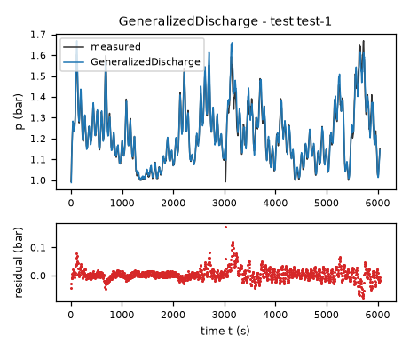
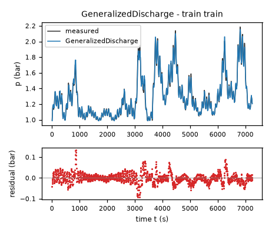
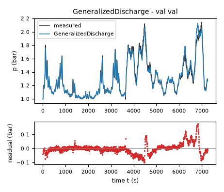
| Data | Trajectory | Scored samples | RMSE | NRMSE | R² | Failure |
|---|---|---|---|---|---|---|
| training data | train | 1451 of 1451 | 0.02458 | 0.09427 | 0.9911 | none |
| validation data | val | 1453 of 1453 | 0.03727 | 0.142 | 0.9798 | none |
| test data | test-1 | 1209 of 1209 | 0.02271 | 0.1629 | 0.9734 | none |
RMSE of p in bar; NRMSE = RMSE / σ and R² = 1 − SSE / Σ(y[k] − μ)², with μ and σ the mean and the population standard deviation of the measured output on the scored samples.
vscale = 100 % (fixed), pr = 1 bar (fixed), a = 0.001208 bar/(s*(l/min)) (fitted), b = 0.484 bar/s (fitted), c = 2.999 (fitted), r = 0.5 1/s (fitted), m = 1.425 (fitted), pa = 0.98 bar (fitted), s = 0.01465 bar (tied)p: 0.02492 bar · validation error: 0.03737 bar · test error: 0.02286 barEquations as written in the model file
dp = a*Max(flow,0)-b*Min(Max((vscale-valve)/vscale,0),1)**m/(1+c*Min(Max((vscale-valve)/vscale,0),1)**m)*(sqrt((Max(p-pa,0)+s)/pr)-sqrt(s/pr))+r*Max(pa-p,0)
Equations with the values substituted
Every parameter is replaced by its value with 4 significant digits.
Parameters and estimation
| Name | Value | Unit | Type | Description |
|---|---|---|---|---|
vscale | 100 | % | fixed | Full-closure position %, supplied by TASK.md; normalizes aperture and fixes the sealed endpoint. |
pr | 1 | bar | fixed | Pressure normalization bar, chosen to nondimensionalize pressure powers without changing the numerical bar-valued fits. |
a | 0.00120842 | bar/(s*(l/min)) | fitted | Positive pressure-rate gain per air-flow rate, estimated from the logged standard-volume flow. |
b | 0.483973 | bar/s | fitted | Outlet pressure-rate scale before the aperture and pressure factors. |
c | 2.99905 | - | fitted | Nonnegative saturation parameter of the rational-power valve characteristic. |
r | 0.5 | 1/s | fitted | Fully-open near-atmospheric relaxation rate, bounded to preserve five-second RK4 stability. |
m | 1.42482 | - | fitted | Positive exponent controlling the aperture characteristic. |
pa | 0.98 | bar | fitted | Empirical near-atmospheric equilibrium reference; not an independently measured ambient pressure. |
s | 0.0146463 | bar | tied (pr*(b/((1+c)*2*r*pr))**2) | Pressure regularization chosen by the fitted fully-open atmospheric relaxation rate, not an additional independent fit. |
- Criterion minimized
The final criterion is the sum of squared free-running errors on
p, in bar squared, across both trajectories after their initial samples. Each trajectory is initialized at its first loggedp; inputs are held at the logged sample values for a classical RK4 step of five seconds, with no measurement resets. This matches the scored simulation setting and avoids treating filtereddpas an exact vector field. The preliminary criterion was squared error ondp, in (bar/s) squared, only to obtain a starting point. No outlier removal, weighting or regularization penalty was used.- Data
The first two estimation steps used data/train.csv: all 1452 samples as the contiguous trajectory, with 1451 derivative targets or subsequent-state pressure errors. Structural selection used data/val.csv as a separate 1454-sample trajectory, never concatenating its state to training. The final refit used both complete trajectories, for 2904 subsequent-state errors. Initial samples supply the initial states and have no fitted pressure-error term. The final row of each file is not a derivative initialization target because its successor is unavailable. No inaccessible test data were used; final validation-trajectory errors are in-sample after joint refitting.
- Method
Bound-constrained nonlinear least squares with the Trust Region Reflective algorithm in
scipy.optimize.least_squares, using SciPy 1.18.1; reference: the official SciPy documentation for this function, cited from memory; attempted web retrieval returned no usable page content. This method handles sign and stability bounds directly, unlike unconstrained Levenberg-Marquardt. All independent parameters were estimated jointly within each step; tiedswas recomputed on every evaluation. Step one minimized derivative residuals on training rows except the final row, multiplying residuals by a fixed numerical factor of one hundred for conditioning; this does not change their least-squares minimizer. Initial values were bar/(s*(l/min)), bar/s, , 1/s, , bar. These are hand-chosen order-of-magnitude gas-balance values, positive valve-shape values, a square-root-nearby exponent, and a near-one-bar atmospheric reference. The initial relaxation-rate guess was below the stability ceiling. Step two minimized free-running training-trajectory pressure errors from the derivative-fit solution bar/(s*(l/min)), bar/s, , 1/s, , bar. This train-only fit was used for structural comparison on validation. Step three jointly minimized pressure errors on both trajectories, initialized by the training simulation fit bar/(s*(l/min)), bar/s, , 1/s, , bar. Final bounds were bar/(s*(l/min)), bar/s, , 1/s, , , and bar, applying only to the independent fitted parameters of this candidate. The relaxation ceiling is an assumed numerical admissibility constraint, not a measured physical rate. Each derivative fit allowed eight hundred function evaluations, with , , ; each simulation fit allowed twelve hundred with corresponding tolerances1e-11. All usedmethod = 'trf',jac = '2-point',x_scale = 'jac'and ordinary squared loss. No randomization or multistart was used, so no seed applies; this is a local, not certified-global, optimum. The scripts use Numba 0.68.0 only to accelerate deterministic right-hand-side and RK4 loops.- Script
fit_final.py
The agent's explanation
Lumped isothermal gas-inventory balance with mixed linear/quadratic hydraulic resistance. The discharge is the positive root of a quadratic pressure-loss relation, regularized at zero pressure drop. The common gas-inventory motivation is the ideal-gas equation of state at fixed effective volume and temperature; reference: NASA Glenn Research Center, Equation of State, cited from memory and not source-checked; attempted web retrieval returned no usable page content. The particular valve map and regularization are assumptions of this identification, not formulas supplied by that reference.
Here p is measured absolute headspace pressure in bar, valve is percent closed and flow is air flow in l/min. vscale is full closure in %, pr is a one-bar pressure normalization and pa is the atmospheric-equilibrium reference in bar. Define the explanatory aperture and nonnegative dimensionless pressure drop . The inlet term converts nonnegative supplied air flow to pressure accumulation; negative flow is clipped only as an untested domain continuation. The outlet characteristic vanishes at full closure. The final term restores pressure below the reference at a valve-independent bounded rate. It is a numerical/phenomenological continuation, not evidence of a physical leak. b is a pressure-rate scale in bar/s, m is the aperture exponent, and c is a dimensionless saturation parameter. s is a tied pressure scale in bar, and r is the atmospheric relaxation rate in 1/s. The outlet term approaches a linear pressure-drop law near atmosphere and a square-root law at larger pressure drops. It is the positive solution of a mixed linear/quadratic resistance relation, with coefficients absorbed into b and s.
The inlet-minus-outlet balance and square-root high-pressure behavior came from gas storage and restriction-flow reasoning. A linear-pressure model was tried first and rejected for flow-dependent pressure bias. Regularized orifice and generalized-pressure-power models improved it. Residual low-pressure bias motivated the inverse-quadratic loss relation, rather than adding an unexplained constant source. The rational-power valve map was a manually proposed monotone saturation law, not a symbolic-regression discovery. The near-atmospheric reference is estimated because recorded low-flow pressures can lie below the nominal atmospheric value. The regularizer was parameterized through the fitted fully-open atmospheric relaxation rate after unconstrained exploratory fits showed that some low-drop slopes would be unsafe for a five-second explicit RK4 step. This is an intentional simulation-safety restriction, not evidence for a particular laminar transition. For this candidate, the train-only free-running fit had training RMSE 0.0242514785126 bar and genuinely held-out validation RMSE 0.0387136669707 bar. After joint refitting, training-trajectory RMSE was 0.0249211339393 bar and validation-trajectory RMSE was 0.0373748050226 bar; these last two are in-sample diagnostics, not test results. Simulation residuals were inspected by pressure, valve, flow and time quintiles. Final residual lag-one correlations were 0.903658217684 on training and 0.965414626405 on validation. Sustained time-dependent errors remain, so omitted memory or changing operating conditions are plausible but not identifiable from the permitted one-state model. No time-dependent corrective term was inserted.
The fitted pa reaches its lower bound; this is evidence of confounding between low-pressure discharge shape and the empirical atmospheric reference, not an independent atmospheric-pressure measurement. R1 holds globally because the inlet coefficient is positive and is nondecreasing. R2 holds for percent closure from zero to one hundred: conductance is nondecreasing with aperture, the discharged pressure factor is nonnegative, and the below-reference recovery term is independent of closure. Clipping extends this monotonicity beyond that input interval. R3 holds exactly at with , for every open valve; the fitted bar is approximately nominal atmospheric pressure, but represents an empirical offset. R4 holds: above pa the zero-flow derivative is negative for an open valve and below pa it is positive. R5 holds: at the outlet is zero and supplied nonnegative flow cannot lower pressure. Above pa, a sealed tank reduces exactly to . The valve-independent subatmospheric recovery is an intentional mathematical extension used to meet the requested global closure monotonicity. It should not be interpreted as actual air ingress through a sealed vessel. Physical use is mainly at or above the near-atmospheric reference. Constant temperature, constant effective gas capacitance, input alignment and instantaneous actuator response are assumed. Neither temperature, actual gas inventory, bubble holdup, valve hysteresis nor sensor calibration is measured here. The fitted inlet gain folds these effects into one coefficient. The pressure and input ranges of the two supplied experiments do not identify behavior at much higher pressure or at exact full closure; no relief valve is modeled. Long sealed operation with continuing inlet can physically exceed the harness pressure bound; no artificial pressure cap was added because it would contradict the sealed accumulation law. Sign constraints and the imposed atmospheric relaxation bound prevent local zero-flow numerical instability, but do not certify arbitrary high-pressure trajectories.
Physical requirements
| Requirement | Statement | Outcome | Detail |
|---|---|---|---|
| R1 | Monotonicity with respect to inlet flow. At a fixed pressure and valve position, increasing the inlet air flow rate cannot decrease the pressure derivative. | assessed by the human | stated in natural language: the harness does not assess it; the human assesses it, and the agent's assertion alone does not count as verification |
| R2 | Monotonicity with respect to valve closure. At a fixed pressure and inlet flow rate, closing the outlet valve further cannot decrease the pressure derivative. | assessed by the human | stated in natural language: the harness does not assess it; the human assesses it, and the agent's assertion alone does not count as verification |
| R3 | Zero-flow equilibrium. With zero inlet flow and an open outlet valve, atmospheric pressure (approximately 1 bar) is the pressure equilibrium. | assessed by the human | stated in natural language: the harness does not assess it; the human assesses it, and the agent's assertion alone does not count as verification |
| R4 | Pressure relaxation. With zero inlet flow and an open outlet valve, pressure tends toward atmospheric pressure. | assessed by the human | stated in natural language: the harness does not assess it; the human assesses it, and the agent's assertion alone does not count as verification |
| R5 | Fully closed valve. For a perfectly sealed tank with a fully closed outlet valve, the pressure cannot decrease when air is supplied. | assessed by the human | stated in natural language: the harness does not assess it; the human assesses it, and the agent's assertion alone does not count as verification |
Plots of simulated and measured p, and errors per trajectory
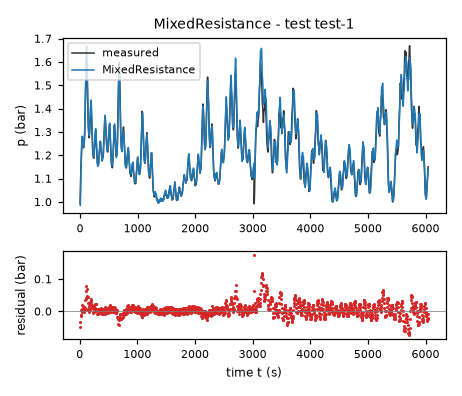
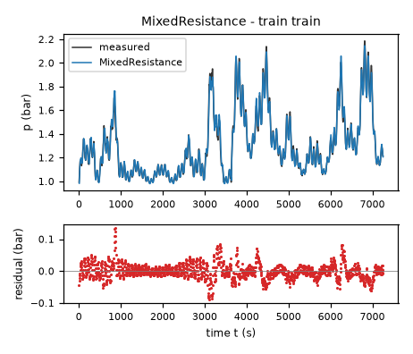
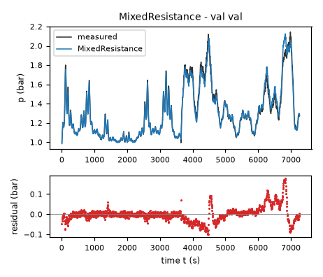
| Data | Trajectory | Scored samples | RMSE | NRMSE | R² | Failure |
|---|---|---|---|---|---|---|
| training data | train | 1451 of 1451 | 0.02492 | 0.09557 | 0.9909 | none |
| validation data | val | 1453 of 1453 | 0.03737 | 0.1424 | 0.9797 | none |
| test data | test-1 | 1209 of 1209 | 0.02286 | 0.1641 | 0.9731 | none |
RMSE of p in bar; NRMSE = RMSE / σ and R² = 1 − SSE / Σ(y[k] − μ)², with μ and σ the mean and the population standard deviation of the measured output on the scored samples.
vscale = 100 % (fixed), pr = 1 bar (fixed), a = 0.001261 bar/(s*(l/min)) (fitted), r = 0.4797 1/s (fitted), n = 0.5096 (fitted), pa = 0.9847 bar (fitted), dA = 0.01684 bar/s (fitted), dB = 0.01819 bar/s (fitted), dC = 0.01825 bar/s (fitted), dD = 0.0208 bar/s (fitted), dE = 0.0209 bar/s (fitted), dF = 0.01894 bar/s (fitted), kA = 0.1 (fixed), kB = 0.2 (fixed), kC = 0.3 (fixed), kD = 0.45 (fixed), kE = 0.65 (fixed), s = 0.0533 bar (tied)p: 0.0251 bar · validation error: 0.037 bar · test error: 0.02314 barEquations as written in the model file
dp = a*Max(flow,0)-(dA*Min(Max((Min(Max((vscale-valve)/vscale,0),1)-0)/(kA-0),0),1)+dB*Min(Max((Min(Max((vscale-valve)/vscale,0),1)-kA)/(kB-kA),0),1)+dC*Min(Max((Min(Max((vscale-valve)/vscale,0),1)-kB)/(kC-kB),0),1)+dD*Min(Max((Min(Max((vscale-valve)/vscale,0),1)-kC)/(kD-kC),0),1)+dE*Min(Max((Min(Max((vscale-valve)/vscale,0),1)-kD)/(kE-kD),0),1)+dF*Min(Max((Min(Max((vscale-valve)/vscale,0),1)-kE)/(1-kE),0),1))*(Max(p-pa,0)/pr)*((Max(p-pa,0)+s)/pr)**(n-1)+r*Max(pa-p,0)
Equations with the values substituted
Every parameter is replaced by its value with 4 significant digits.
Parameters and estimation
| Name | Value | Unit | Type | Description |
|---|---|---|---|---|
vscale | 100 | % | fixed | Full-closure position %, supplied by TASK.md; normalizes aperture and fixes the sealed endpoint. |
pr | 1 | bar | fixed | Pressure normalization bar, chosen to nondimensionalize pressure powers without changing the numerical bar-valued fits. |
a | 0.00126088 | bar/(s*(l/min)) | fitted | Positive inlet pressure gain per recorded air-flow rate. |
r | 0.479665 | 1/s | fitted | Maximum fully-open near-atmospheric relaxation rate; bounded for five-second RK4 stability. |
n | 0.509617 | - | fitted | Large-pressure-drop discharge exponent. |
pa | 0.984735 | bar | fitted | Empirical atmospheric-equilibrium reference, allowed a small offset from nominal one bar. |
dA | 0.0168403 | bar/s | fitted | Nonnegative conductance increment in the corresponding aperture interval; fitted jointly with all other independent parameters. |
dB | 0.0181866 | bar/s | fitted | Nonnegative conductance increment in the corresponding aperture interval; fitted jointly with all other independent parameters. |
dC | 0.018245 | bar/s | fitted | Nonnegative conductance increment in the corresponding aperture interval; fitted jointly with all other independent parameters. |
dD | 0.0208023 | bar/s | fitted | Nonnegative conductance increment in the corresponding aperture interval; fitted jointly with all other independent parameters. |
dE | 0.020899 | bar/s | fitted | Nonnegative conductance increment in the corresponding aperture interval; fitted jointly with all other independent parameters. |
dF | 0.0189375 | bar/s | fitted | Nonnegative conductance increment in the corresponding aperture interval; fitted jointly with all other independent parameters. |
kA | 0.1 | - | fixed | Assumed dimensionless aperture knot, chosen to place more resolution at high closure; not estimated from either trajectory. |
kB | 0.2 | - | fixed | Assumed dimensionless aperture knot, chosen to place more resolution at high closure; not estimated from either trajectory. |
kC | 0.3 | - | fixed | Assumed dimensionless aperture knot, chosen to place more resolution at high closure; not estimated from either trajectory. |
kD | 0.45 | - | fixed | Assumed dimensionless aperture knot, chosen to place more resolution at high closure; not estimated from either trajectory. |
kE | 0.65 | - | fixed | Assumed dimensionless aperture knot, chosen to place more resolution at high closure; not estimated from either trajectory. |
s | 0.0533047 | bar | tied (pr*((dA+dB+dC+dD+dE+dF)/(r*pr))**(1/(1-n))) | Small-pressure regularization scale determined by the fully-open conductance and fitted relaxation rate. |
- Criterion minimized
The final criterion is the sum of squared free-running errors on
p, in bar squared, across both trajectories after their initial samples. Each trajectory is initialized at its first loggedp; inputs are held at the logged sample values for a classical RK4 step of five seconds, with no measurement resets. This matches the scored simulation setting and avoids treating filtereddpas an exact vector field. The preliminary criterion was squared error ondp, in (bar/s) squared, only to obtain a starting point. No outlier removal, weighting or regularization penalty was used.- Data
The first two estimation steps used data/train.csv: all 1452 samples as the contiguous trajectory, with 1451 derivative targets or subsequent-state pressure errors. Structural selection used data/val.csv as a separate 1454-sample trajectory, never concatenating its state to training. The final refit used both complete trajectories, for 2904 subsequent-state errors. Initial samples supply the initial states and have no fitted pressure-error term. The final row of each file is not a derivative initialization target because its successor is unavailable. No inaccessible test data were used; final validation-trajectory errors are in-sample after joint refitting.
- Method
Bound-constrained nonlinear least squares with the Trust Region Reflective algorithm in
scipy.optimize.least_squares, using SciPy 1.18.1; reference: the official SciPy documentation for this function, cited from memory; attempted web retrieval returned no usable page content. This method handles sign and stability bounds directly, unlike unconstrained Levenberg-Marquardt. All independent parameters were estimated jointly within each step; tiedswas recomputed on every evaluation. Step one minimized derivative residuals on training rows except the final row, multiplying residuals by a fixed numerical factor of one hundred for conditioning; this does not change their least-squares minimizer. Initial values were bar/(s*(l/min)), 1/s, , bar, bar/s, bar/s, bar/s, bar/s, bar/s, bar/s. These are hand-chosen order-of-magnitude gas-balance values, positive valve-shape values, a square-root-nearby exponent, and a near-one-bar atmospheric reference. The initial relaxation-rate guess was below the stability ceiling. Step two minimized free-running training-trajectory pressure errors from the derivative-fit solution bar/(s*(l/min)), 1/s, , bar, bar/s, bar/s, bar/s, bar/s, bar/s, bar/s. This train-only fit was used for structural comparison on validation. Step three jointly minimized pressure errors on both trajectories, initialized by the training simulation fit bar/(s*(l/min)), 1/s, , bar, bar/s, bar/s, bar/s, bar/s, bar/s, bar/s. Final bounds were bar/(s*(l/min)), 1/s, , bar, and bar/s with the same bounds ondB,dC,dD,dE,dF. The relaxation ceiling is an assumed numerical admissibility constraint, not a measured physical rate. Each derivative fit allowed eight hundred function evaluations, with , , ; each simulation fit allowed twelve hundred with corresponding tolerances1e-11. All usedmethod = 'trf',jac = '2-point',x_scale = 'jac'and ordinary squared loss. No randomization or multistart was used, so no seed applies; this is a local, not certified-global, optimum. The scripts use Numba 0.68.0 only to accelerate deterministic right-hand-side and RK4 loops.- Script
fit_final.py
The agent's explanation
Grey-box lumped isothermal gas-inventory balance with a monotone continuous piecewise-linear valve characteristic and generalized regularized pressure-power discharge. The common gas-inventory motivation is the ideal-gas equation of state at fixed effective volume and temperature; reference: NASA Glenn Research Center, Equation of State, cited from memory and not source-checked; attempted web retrieval returned no usable page content. The particular valve map and regularization are assumptions of this identification, not formulas supplied by that reference.
Here p is measured absolute headspace pressure in bar, valve is percent closed and flow is air flow in l/min. vscale is full closure in %, pr is a one-bar pressure normalization and pa is the atmospheric-equilibrium reference in bar. Define the explanatory aperture and nonnegative dimensionless pressure drop . The inlet term converts nonnegative supplied air flow to pressure accumulation; negative flow is clipped only as an untested domain continuation. The outlet characteristic vanishes at full closure. The final term restores pressure below the reference at a valve-independent bounded rate. It is a numerical/phenomenological continuation, not evidence of a physical leak. dA, dB, dC, dD, dE and dF are conductance increments in bar/s over aperture intervals bounded by zero, kA, kB, kC, kD, kE and one. n is the dimensionless large-drop exponent. s is a tied pressure scale in bar, and r is the atmospheric relaxation rate in 1/s. The outlet term is the product of the monotone ramp sum and . Each ramp adds a nonnegative increment to conductance over one aperture interval, giving a measured-valve calibration curve without oscillatory polynomial extrapolation.
Physical reasoning supplied the inlet source, nonnegative pressure-driven outlet, atmospheric equilibrium and sealed endpoint. Smooth parametric valve laws were tried first. Valve-binned residuals motivated a monotone tabulated characteristic to test whether a restricted analytic valve curve was causing errors. Knot locations were chosen before this fit to resolve the high-closure regime more finely, where training pressure is most sensitive to the valve. Positive increments were imposed rather than estimating unrestricted coefficients. The worse train-only validation error cautions against overinterpreting the extra flexibility. The regularizer was parameterized through the fitted fully-open atmospheric relaxation rate after unconstrained exploratory fits showed that some low-drop slopes would be unsafe for a five-second explicit RK4 step. This is an intentional simulation-safety restriction, not evidence for a particular laminar transition. For this candidate, the train-only free-running fit had training RMSE 0.0233092645824 bar and genuinely held-out validation RMSE 0.0413549452405 bar. After joint refitting, training-trajectory RMSE was 0.0250987460612 bar and validation-trajectory RMSE was 0.036995219954 bar; these last two are in-sample diagnostics, not test results. Simulation residuals were inspected by pressure, valve, flow and time quintiles. Final residual lag-one correlations were 0.90350746006 on training and 0.963990555543 on validation. Sustained time-dependent errors remain, so omitted memory or changing operating conditions are plausible but not identifiable from the permitted one-state model. No time-dependent corrective term was inserted.
The extreme-open and near-sealed segments are weakly excited. The knot schedule is assumed, not inferred valve geometry. Its final validation-trajectory error is slightly smaller after joint refitting, but its worse truly held-out validation result makes it less compelling than the compact recommendation. R1 holds globally because the inlet coefficient is positive and is nondecreasing. R2 holds for percent closure from zero to one hundred: conductance is nondecreasing with aperture, the discharged pressure factor is nonnegative, and the below-reference recovery term is independent of closure. Clipping extends this monotonicity beyond that input interval. R3 holds exactly at with , for every open valve; the fitted bar is approximately nominal atmospheric pressure, but represents an empirical offset. R4 holds: above pa the zero-flow derivative is negative for an open valve and below pa it is positive. R5 holds: at the outlet is zero and supplied nonnegative flow cannot lower pressure. Above pa, a sealed tank reduces exactly to . The valve-independent subatmospheric recovery is an intentional mathematical extension used to meet the requested global closure monotonicity. It should not be interpreted as actual air ingress through a sealed vessel. Physical use is mainly at or above the near-atmospheric reference. Constant temperature, constant effective gas capacitance, input alignment and instantaneous actuator response are assumed. Neither temperature, actual gas inventory, bubble holdup, valve hysteresis nor sensor calibration is measured here. The fitted inlet gain folds these effects into one coefficient. The pressure and input ranges of the two supplied experiments do not identify behavior at much higher pressure or at exact full closure; no relief valve is modeled. Long sealed operation with continuing inlet can physically exceed the harness pressure bound; no artificial pressure cap was added because it would contradict the sealed accumulation law. Sign constraints and the imposed atmospheric relaxation bound prevent local zero-flow numerical instability, but do not certify arbitrary high-pressure trajectories.
Physical requirements
| Requirement | Statement | Outcome | Detail |
|---|---|---|---|
| R1 | Monotonicity with respect to inlet flow. At a fixed pressure and valve position, increasing the inlet air flow rate cannot decrease the pressure derivative. | assessed by the human | stated in natural language: the harness does not assess it; the human assesses it, and the agent's assertion alone does not count as verification |
| R2 | Monotonicity with respect to valve closure. At a fixed pressure and inlet flow rate, closing the outlet valve further cannot decrease the pressure derivative. | assessed by the human | stated in natural language: the harness does not assess it; the human assesses it, and the agent's assertion alone does not count as verification |
| R3 | Zero-flow equilibrium. With zero inlet flow and an open outlet valve, atmospheric pressure (approximately 1 bar) is the pressure equilibrium. | assessed by the human | stated in natural language: the harness does not assess it; the human assesses it, and the agent's assertion alone does not count as verification |
| R4 | Pressure relaxation. With zero inlet flow and an open outlet valve, pressure tends toward atmospheric pressure. | assessed by the human | stated in natural language: the harness does not assess it; the human assesses it, and the agent's assertion alone does not count as verification |
| R5 | Fully closed valve. For a perfectly sealed tank with a fully closed outlet valve, the pressure cannot decrease when air is supplied. | assessed by the human | stated in natural language: the harness does not assess it; the human assesses it, and the agent's assertion alone does not count as verification |
Plots of simulated and measured p, and errors per trajectory
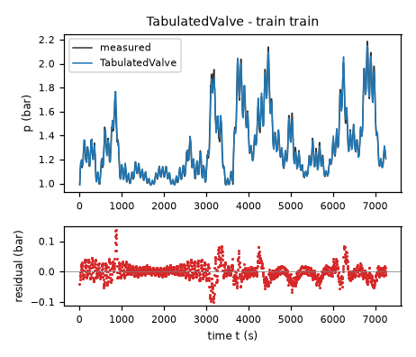
| Data | Trajectory | Scored samples | RMSE | NRMSE | R² | Failure |
|---|---|---|---|---|---|---|
| training data | train | 1451 of 1451 | 0.0251 | 0.09625 | 0.9907 | none |
| validation data | val | 1453 of 1453 | 0.037 | 0.1409 | 0.9801 | none |
| test data | test-1 | 1209 of 1209 | 0.02314 | 0.1661 | 0.9724 | none |
RMSE of p in bar; NRMSE = RMSE / σ and R² = 1 − SSE / Σ(y[k] − μ)², with μ and σ the mean and the population standard deviation of the measured output on the scored samples.
vscale = 100 % (fixed), pr = 1 bar (fixed), a = 0.001152 bar/(s*(l/min)) (fitted), b = 0.5099 bar/s (fitted), c = 4.989 (fitted), r = 0.5 1/s (fitted), m = 1.631 (fitted), pa = 0.98 bar (fitted), s = 0.02899 bar (tied)p: 0.02756 bar · validation error: 0.03854 bar · test error: 0.02491 barEquations as written in the model file
dp = a*Max(flow,0)-b*Min(Max((vscale-valve)/vscale,0),1)**m/(1+c*Min(Max((vscale-valve)/vscale,0),1)**m)*(Max(p-pa,0)/pr)*sqrt(Max(p+pa,0)/(2*pa))/sqrt((Max(p-pa,0)+s)/pr)+r*Max(pa-p,0)
Equations with the values substituted
Every parameter is replaced by its value with 4 significant digits.
Parameters and estimation
| Name | Value | Unit | Type | Description |
|---|---|---|---|---|
vscale | 100 | % | fixed | Full-closure position %, supplied by TASK.md; normalizes aperture and fixes the sealed endpoint. |
pr | 1 | bar | fixed | Pressure normalization bar, chosen to nondimensionalize pressure powers without changing the numerical bar-valued fits. |
a | 0.00115246 | bar/(s*(l/min)) | fitted | Positive pressure-rate gain per air-flow rate, estimated from the logged standard-volume flow. |
b | 0.509902 | bar/s | fitted | Outlet pressure-rate scale before the aperture and pressure factors. |
c | 4.98941 | - | fitted | Nonnegative saturation parameter of the rational-power valve characteristic. |
r | 0.5 | 1/s | fitted | Fully-open near-atmospheric relaxation rate, bounded to preserve five-second RK4 stability. |
m | 1.631 | - | fitted | Positive exponent controlling the aperture characteristic. |
pa | 0.98 | bar | fitted | Empirical near-atmospheric equilibrium reference; not an independently measured ambient pressure. |
s | 0.0289911 | bar | tied (pr*(b/((1+c)*r*pr))**2) | Pressure regularization chosen by the fitted fully-open atmospheric relaxation rate, not an additional independent fit. |
- Criterion minimized
The final criterion is the sum of squared free-running errors on
p, in bar squared, across both trajectories after their initial samples. Each trajectory is initialized at its first loggedp; inputs are held at the logged sample values for a classical RK4 step of five seconds, with no measurement resets. This matches the scored simulation setting and avoids treating filtereddpas an exact vector field. The preliminary criterion was squared error ondp, in (bar/s) squared, only to obtain a starting point. No outlier removal, weighting or regularization penalty was used.- Data
The first two estimation steps used data/train.csv: all 1452 samples as the contiguous trajectory, with 1451 derivative targets or subsequent-state pressure errors. Structural selection used data/val.csv as a separate 1454-sample trajectory, never concatenating its state to training. The final refit used both complete trajectories, for 2904 subsequent-state errors. Initial samples supply the initial states and have no fitted pressure-error term. The final row of each file is not a derivative initialization target because its successor is unavailable. No inaccessible test data were used; final validation-trajectory errors are in-sample after joint refitting.
- Method
Bound-constrained nonlinear least squares with the Trust Region Reflective algorithm in
scipy.optimize.least_squares, using SciPy 1.18.1; reference: the official SciPy documentation for this function, cited from memory; attempted web retrieval returned no usable page content. This method handles sign and stability bounds directly, unlike unconstrained Levenberg-Marquardt. All independent parameters were estimated jointly within each step; tiedswas recomputed on every evaluation. Step one minimized derivative residuals on training rows except the final row, multiplying residuals by a fixed numerical factor of one hundred for conditioning; this does not change their least-squares minimizer. Initial values were bar/(s*(l/min)), bar/s, , 1/s, , bar. These are hand-chosen order-of-magnitude gas-balance values, positive valve-shape values, a square-root-nearby exponent, and a near-one-bar atmospheric reference. The initial relaxation-rate guess was below the stability ceiling. Step two minimized free-running training-trajectory pressure errors from the derivative-fit solution bar/(s*(l/min)), bar/s, , 1/s, , bar. This train-only fit was used for structural comparison on validation. Step three jointly minimized pressure errors on both trajectories, initialized by the training simulation fit bar/(s*(l/min)), bar/s, , 1/s, , bar. Final bounds were bar/(s*(l/min)), bar/s, , 1/s, , , and bar, applying only to the independent fitted parameters of this candidate. The relaxation ceiling is an assumed numerical admissibility constraint, not a measured physical rate. Each derivative fit allowed eight hundred function evaluations, with , , ; each simulation fit allowed twelve hundred with corresponding tolerances1e-11. All usedmethod = 'trf',jac = '2-point',x_scale = 'jac'and ordinary squared loss. No randomization or multistart was used, so no seed applies; this is a local, not certified-global, optimum. The scripts use Numba 0.68.0 only to accelerate deterministic right-hand-side and RK4 loops.- Script
fit_final.py
The agent's explanation
Lumped isothermal gas-inventory balance with a regularized pressure-squared gas-restriction outlet. This is a compressibility-sensitive resistance approximation, not a choked-flow nozzle model. The common gas-inventory motivation is the ideal-gas equation of state at fixed effective volume and temperature; reference: NASA Glenn Research Center, Equation of State, cited from memory and not source-checked; attempted web retrieval returned no usable page content. The particular valve map and regularization are assumptions of this identification, not formulas supplied by that reference.
Here p is measured absolute headspace pressure in bar, valve is percent closed and flow is air flow in l/min. vscale is full closure in %, pr is a one-bar pressure normalization and pa is the atmospheric-equilibrium reference in bar. Define the explanatory aperture and nonnegative dimensionless pressure drop . The inlet term converts nonnegative supplied air flow to pressure accumulation; negative flow is clipped only as an untested domain continuation. The outlet characteristic vanishes at full closure. The final term restores pressure below the reference at a valve-independent bounded rate. It is a numerical/phenomenological continuation, not evidence of a physical leak. b is a pressure-rate scale in bar/s, m is the aperture exponent, and c is a dimensionless saturation parameter. s is a tied pressure scale in bar, and r is the atmospheric relaxation rate in 1/s. The outlet term becomes proportional to the square root of a pressure-squared difference away from the small-drop regularization. The absolute-pressure factor models density sensitivity while preserving zero discharge at the reference pressure.
The gas balance and monotonic valve endpoint constraints came from physical reasoning. A density correction using pressure-squared difference was tried after the square-root models left pressure-dependent residuals. The factor involving absolute pressure was an assumed isothermal resistance correction, not a term selected by symbolic search. The rational-power aperture characteristic was retained from the manually tested valve families to isolate this pressure-law alternative. The regularizer was parameterized through the fitted fully-open atmospheric relaxation rate after unconstrained exploratory fits showed that some low-drop slopes would be unsafe for a five-second explicit RK4 step. This is an intentional simulation-safety restriction, not evidence for a particular laminar transition. For this candidate, the train-only free-running fit had training RMSE 0.0270520800982 bar and genuinely held-out validation RMSE 0.0398439341845 bar. After joint refitting, training-trajectory RMSE was 0.0275590909037 bar and validation-trajectory RMSE was 0.0385439383196 bar; these last two are in-sample diagnostics, not test results. Simulation residuals were inspected by pressure, valve, flow and time quintiles. Final residual lag-one correlations were 0.922172514207 on training and 0.968287709434 on validation. Sustained time-dependent errors remain, so omitted memory or changing operating conditions are plausible but not identifiable from the permitted one-state model. No time-dependent corrective term was inserted.
This approximation does not include choking or gas-temperature dynamics. Its training and train-only validation errors were worse than the generalized-discharge model. The fitted atmospheric reference reaches its lower bound, so neither its offset nor the assumed compressibility correction is established independently by these experiments. R1 holds globally because the inlet coefficient is positive and is nondecreasing. R2 holds for percent closure from zero to one hundred: conductance is nondecreasing with aperture, the discharged pressure factor is nonnegative, and the below-reference recovery term is independent of closure. Clipping extends this monotonicity beyond that input interval. R3 holds exactly at with , for every open valve; the fitted bar is approximately nominal atmospheric pressure, but represents an empirical offset. R4 holds: above pa the zero-flow derivative is negative for an open valve and below pa it is positive. R5 holds: at the outlet is zero and supplied nonnegative flow cannot lower pressure. Above pa, a sealed tank reduces exactly to . The valve-independent subatmospheric recovery is an intentional mathematical extension used to meet the requested global closure monotonicity. It should not be interpreted as actual air ingress through a sealed vessel. Physical use is mainly at or above the near-atmospheric reference. Constant temperature, constant effective gas capacitance, input alignment and instantaneous actuator response are assumed. Neither temperature, actual gas inventory, bubble holdup, valve hysteresis nor sensor calibration is measured here. The fitted inlet gain folds these effects into one coefficient. The pressure and input ranges of the two supplied experiments do not identify behavior at much higher pressure or at exact full closure; no relief valve is modeled. Long sealed operation with continuing inlet can physically exceed the harness pressure bound; no artificial pressure cap was added because it would contradict the sealed accumulation law. Sign constraints and the imposed atmospheric relaxation bound prevent local zero-flow numerical instability, but do not certify arbitrary high-pressure trajectories.
Physical requirements
| Requirement | Statement | Outcome | Detail |
|---|---|---|---|
| R1 | Monotonicity with respect to inlet flow. At a fixed pressure and valve position, increasing the inlet air flow rate cannot decrease the pressure derivative. | assessed by the human | stated in natural language: the harness does not assess it; the human assesses it, and the agent's assertion alone does not count as verification |
| R2 | Monotonicity with respect to valve closure. At a fixed pressure and inlet flow rate, closing the outlet valve further cannot decrease the pressure derivative. | assessed by the human | stated in natural language: the harness does not assess it; the human assesses it, and the agent's assertion alone does not count as verification |
| R3 | Zero-flow equilibrium. With zero inlet flow and an open outlet valve, atmospheric pressure (approximately 1 bar) is the pressure equilibrium. | assessed by the human | stated in natural language: the harness does not assess it; the human assesses it, and the agent's assertion alone does not count as verification |
| R4 | Pressure relaxation. With zero inlet flow and an open outlet valve, pressure tends toward atmospheric pressure. | assessed by the human | stated in natural language: the harness does not assess it; the human assesses it, and the agent's assertion alone does not count as verification |
| R5 | Fully closed valve. For a perfectly sealed tank with a fully closed outlet valve, the pressure cannot decrease when air is supplied. | assessed by the human | stated in natural language: the harness does not assess it; the human assesses it, and the agent's assertion alone does not count as verification |
Plots of simulated and measured p, and errors per trajectory
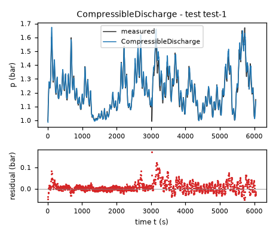
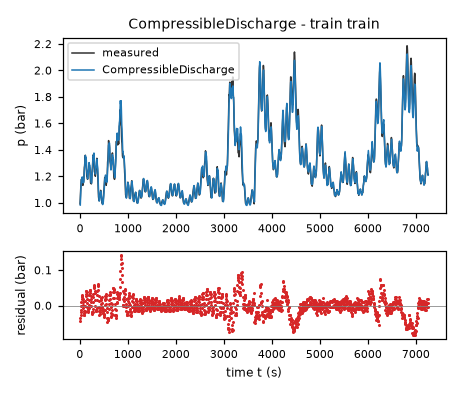
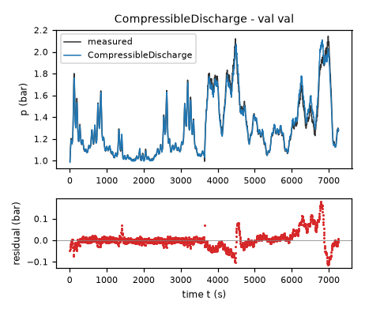
| Data | Trajectory | Scored samples | RMSE | NRMSE | R² | Failure |
|---|---|---|---|---|---|---|
| training data | train | 1451 of 1451 | 0.02756 | 0.1057 | 0.9888 | none |
| validation data | val | 1453 of 1453 | 0.03854 | 0.1468 | 0.9784 | none |
| test data | test-1 | 1209 of 1209 | 0.02491 | 0.1787 | 0.9681 | none |
RMSE of p in bar; NRMSE = RMSE / σ and R² = 1 − SSE / Σ(y[k] − μ)², with μ and σ the mean and the population standard deviation of the measured output on the scored samples.
vscale = 100 % (fixed), pr = 1 bar (fixed), a = 0.001107 bar/(s*(l/min)) (fitted), b = 0.1734 bar/s (fitted), r = 0.5 1/s (fitted), m = 1.042 (fitted), pa = 1 bar (fixed), s = 0.1203 bar (tied)p: 0.0334 bar · validation error: 0.03984 bar · test error: 0.03225 barEquations as written in the model file
dp = a*Max(flow,0)-b*Min(Max((vscale-valve)/vscale,0),1)**m*(Max(p-pa,0)/pr)/sqrt((Max(p-pa,0)+s)/pr)+r*Max(pa-p,0)
Equations with the values substituted
Every parameter is replaced by its value with 4 significant digits.
Parameters and estimation
| Name | Value | Unit | Type | Description |
|---|---|---|---|---|
vscale | 100 | % | fixed | Full-closure position %, supplied by TASK.md; normalizes aperture and fixes the sealed endpoint. |
pr | 1 | bar | fixed | Pressure normalization bar, chosen to nondimensionalize pressure powers without changing the numerical bar-valued fits. |
a | 0.00110717 | bar/(s*(l/min)) | fitted | Positive pressure-rate gain per air-flow rate, estimated from the logged standard-volume flow. |
b | 0.173409 | bar/s | fitted | Outlet pressure-rate scale before the aperture and pressure factors. |
r | 0.5 | 1/s | fitted | Fully-open near-atmospheric relaxation rate, bounded to preserve five-second RK4 stability. |
m | 1.04199 | - | fitted | Positive exponent controlling the aperture characteristic. |
pa | 1 | bar | fixed | Nominal atmospheric pressure bar from TASK.md, held fixed to avoid an extra uncertain offset. |
s | 0.120283 | bar | tied (pr*(b/(r*pr))**2) | Pressure regularization chosen by the fitted fully-open atmospheric relaxation rate, not an additional independent fit. |
- Criterion minimized
The final criterion is the sum of squared free-running errors on
p, in bar squared, across both trajectories after their initial samples. Each trajectory is initialized at its first loggedp; inputs are held at the logged sample values for a classical RK4 step of five seconds, with no measurement resets. This matches the scored simulation setting and avoids treating filtereddpas an exact vector field. The preliminary criterion was squared error ondp, in (bar/s) squared, only to obtain a starting point. No outlier removal, weighting or regularization penalty was used.- Data
The first two estimation steps used data/train.csv: all 1452 samples as the contiguous trajectory, with 1451 derivative targets or subsequent-state pressure errors. Structural selection used data/val.csv as a separate 1454-sample trajectory, never concatenating its state to training. The final refit used both complete trajectories, for 2904 subsequent-state errors. Initial samples supply the initial states and have no fitted pressure-error term. The final row of each file is not a derivative initialization target because its successor is unavailable. No inaccessible test data were used; final validation-trajectory errors are in-sample after joint refitting.
- Method
Bound-constrained nonlinear least squares with the Trust Region Reflective algorithm in
scipy.optimize.least_squares, using SciPy 1.18.1; reference: the official SciPy documentation for this function, cited from memory; attempted web retrieval returned no usable page content. This method handles sign and stability bounds directly, unlike unconstrained Levenberg-Marquardt. All independent parameters were estimated jointly within each step; tiedswas recomputed on every evaluation. Step one minimized derivative residuals on training rows except the final row, multiplying residuals by a fixed numerical factor of one hundred for conditioning; this does not change their least-squares minimizer. Initial values were bar/(s*(l/min)), bar/s, 1/s, . These are hand-chosen order-of-magnitude gas-balance values, positive valve-shape values, a square-root-nearby exponent, and a near-one-bar atmospheric reference. The initial relaxation-rate guess was below the stability ceiling. Step two minimized free-running training-trajectory pressure errors from the derivative-fit solution bar/(s*(l/min)), bar/s, 1/s, . This train-only fit was used for structural comparison on validation. Step three jointly minimized pressure errors on both trajectories, initialized by the training simulation fit bar/(s*(l/min)), bar/s, 1/s, . Final bounds were bar/(s*(l/min)), bar/s, , 1/s, , , and bar, applying only to the independent fitted parameters of this candidate. The relaxation ceiling is an assumed numerical admissibility constraint, not a measured physical rate. Each derivative fit allowed eight hundred function evaluations, with , , ; each simulation fit allowed twelve hundred with corresponding tolerances1e-11. All usedmethod = 'trf',jac = '2-point',x_scale = 'jac'and ordinary squared loss. No randomization or multistart was used, so no seed applies; this is a local, not certified-global, optimum. The scripts use Numba 0.68.0 only to accelerate deterministic right-hand-side and RK4 loops.- Script
fit_final.py
The agent's explanation
Lumped isothermal gas-inventory balance with a regularized turbulent-orifice outlet and a power-law valve characteristic. The common gas-inventory motivation is the ideal-gas equation of state at fixed effective volume and temperature; reference: NASA Glenn Research Center, Equation of State, cited from memory and not source-checked; attempted web retrieval returned no usable page content. The particular valve map and regularization are assumptions of this identification, not formulas supplied by that reference.
Here p is measured absolute headspace pressure in bar, valve is percent closed and flow is air flow in l/min. vscale is full closure in %, pr is a one-bar pressure normalization and pa is the atmospheric-equilibrium reference in bar. Define the explanatory aperture and nonnegative dimensionless pressure drop . The inlet term converts nonnegative supplied air flow to pressure accumulation; negative flow is clipped only as an untested domain continuation. The outlet characteristic vanishes at full closure. The final term restores pressure below the reference at a valve-independent bounded rate. It is a numerical/phenomenological continuation, not evidence of a physical leak. b is a pressure-rate scale in bar/s, m is the aperture exponent, with no saturation parameter in this candidate. s is a tied pressure scale in bar, and r is the atmospheric relaxation rate in 1/s. The outlet term is linear near atmosphere and approaches square-root pressure-drop scaling away from atmosphere. It is a smooth approximation to an orifice law, not an exact compressible nozzle equation.
The linear mass-flow source, zero pressure-drop discharge and sealed-valve endpoint came from physical reasoning. The square-root large-drop behavior was chosen as a turbulent-restriction hypothesis. The pressure regularization and power-aperture valve map were manually proposed, not generated by symbolic regression. Linear pressure relaxation and saturation alternatives were tested before retaining this compact fixed-exponent comparison. The regularizer was parameterized through the fitted fully-open atmospheric relaxation rate after unconstrained exploratory fits showed that some low-drop slopes would be unsafe for a five-second explicit RK4 step. This is an intentional simulation-safety restriction, not evidence for a particular laminar transition. For this candidate, the train-only free-running fit had training RMSE 0.0331599610174 bar and genuinely held-out validation RMSE 0.040415054596 bar. After joint refitting, training-trajectory RMSE was 0.0334002526626 bar and validation-trajectory RMSE was 0.0398432021374 bar; these last two are in-sample diagnostics, not test results. Simulation residuals were inspected by pressure, valve, flow and time quintiles. Final residual lag-one correlations were 0.939474240218 on training and 0.967204700025 on validation. Sustained time-dependent errors remain, so omitted memory or changing operating conditions are plausible but not identifiable from the permitted one-state model. No time-dependent corrective term was inserted.
This is deliberately the simplest retained turbulent model and has higher pressure RMSE than the recommended candidate. The fixed atmospheric reference avoids estimating an offset that is confounded with pressure regularization. R1 holds globally because the inlet coefficient is positive and is nondecreasing. R2 holds for percent closure from zero to one hundred: conductance is nondecreasing with aperture, the discharged pressure factor is nonnegative, and the below-reference recovery term is independent of closure. Clipping extends this monotonicity beyond that input interval. R3 holds exactly at with , for every open valve; bar is fixed. R4 holds: above pa the zero-flow derivative is negative for an open valve and below pa it is positive. R5 holds: at the outlet is zero and supplied nonnegative flow cannot lower pressure. Above pa, a sealed tank reduces exactly to . The valve-independent subatmospheric recovery is an intentional mathematical extension used to meet the requested global closure monotonicity. It should not be interpreted as actual air ingress through a sealed vessel. Physical use is mainly at or above the near-atmospheric reference. Constant temperature, constant effective gas capacitance, input alignment and instantaneous actuator response are assumed. Neither temperature, actual gas inventory, bubble holdup, valve hysteresis nor sensor calibration is measured here. The fitted inlet gain folds these effects into one coefficient. The pressure and input ranges of the two supplied experiments do not identify behavior at much higher pressure or at exact full closure; no relief valve is modeled. Long sealed operation with continuing inlet can physically exceed the harness pressure bound; no artificial pressure cap was added because it would contradict the sealed accumulation law. Sign constraints and the imposed atmospheric relaxation bound prevent local zero-flow numerical instability, but do not certify arbitrary high-pressure trajectories.
Physical requirements
| Requirement | Statement | Outcome | Detail |
|---|---|---|---|
| R1 | Monotonicity with respect to inlet flow. At a fixed pressure and valve position, increasing the inlet air flow rate cannot decrease the pressure derivative. | assessed by the human | stated in natural language: the harness does not assess it; the human assesses it, and the agent's assertion alone does not count as verification |
| R2 | Monotonicity with respect to valve closure. At a fixed pressure and inlet flow rate, closing the outlet valve further cannot decrease the pressure derivative. | assessed by the human | stated in natural language: the harness does not assess it; the human assesses it, and the agent's assertion alone does not count as verification |
| R3 | Zero-flow equilibrium. With zero inlet flow and an open outlet valve, atmospheric pressure (approximately 1 bar) is the pressure equilibrium. | assessed by the human | stated in natural language: the harness does not assess it; the human assesses it, and the agent's assertion alone does not count as verification |
| R4 | Pressure relaxation. With zero inlet flow and an open outlet valve, pressure tends toward atmospheric pressure. | assessed by the human | stated in natural language: the harness does not assess it; the human assesses it, and the agent's assertion alone does not count as verification |
| R5 | Fully closed valve. For a perfectly sealed tank with a fully closed outlet valve, the pressure cannot decrease when air is supplied. | assessed by the human | stated in natural language: the harness does not assess it; the human assesses it, and the agent's assertion alone does not count as verification |
Plots of simulated and measured p, and errors per trajectory
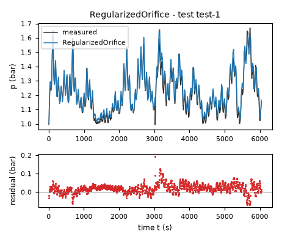
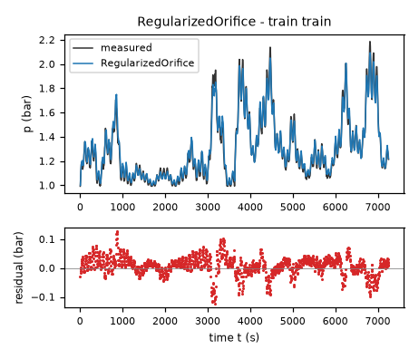
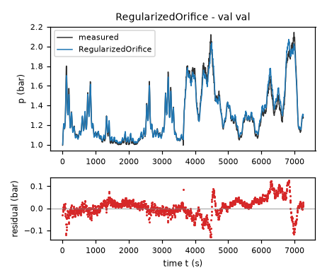
| Data | Trajectory | Scored samples | RMSE | NRMSE | R² | Failure |
|---|---|---|---|---|---|---|
| training data | train | 1451 of 1451 | 0.0334 | 0.1281 | 0.9836 | none |
| validation data | val | 1453 of 1453 | 0.03984 | 0.1518 | 0.977 | none |
| test data | test-1 | 1209 of 1209 | 0.03225 | 0.2314 | 0.9465 | none |
RMSE of p in bar; NRMSE = RMSE / σ and R² = 1 − SSE / Σ(y[k] − μ)², with μ and σ the mean and the population standard deviation of the measured output on the scored samples.
2 Course of the run
The system prompt, TASK.md and FORMAT.md that the agent received are shown on the page of the experiment.
0:00Harness: opening message to the agent
10:10Read TASK.md0.01
5,474 input and 19 output tokens; 0.011 USD for this turn.
TASK.md
output as sent to the agent (5,833 characters, 46 lines)
[TASK.md: 5806 characters] # Task: Headspace air pressure of an aerated fermentation tank ## 1 System and intended use A small-scale 40-liter fermentation tank filled with approximately 25 liters of water, data recorded on the real rig. At the bottom of the tank, air is fed into the water at a flow rate controlled by a local mass-flow controller. The air collects in the headspace above the water level and leaves through an outlet valve at the top of the tank; the air pressure above the water level depends on the valve position. The valve position is the first input (`valve`), the air flow rate is the second input (`flow`), and the headspace air pressure `p` is the state and the measured output; `dp` is the sampled time derivative of `p`, a possible fitting target of dp = f(p, valve, flow). Sampling period T_s = 5 s. Each data file is one contiguous trajectory. The derivative column is a filtered numerical difference of p. Physical units: pressure in bar (10^5 Pa), valve in % closed (100% = fully closed), air flow rate in liters/min. Simulation of the pressure p. The model is integrated from the first sample of a held-out trajectory, with the recorded inputs valve and flow applied and no further corrections, and the simulated p is compared with the measured one. The model should give stable, accurate long-horizon simulation. The model is meant to be used as a physically interpretable process model, so its structure should be defensible from the physics, not only from the fit. ## 2 Data `data/train.csv` holds 1452 samples of training data: one trajectory of consecutive samples. `data/val.csv` holds 1454 samples of validation data: one trajectory of consecutive samples. Whether and how you use the validation data is your decision. Row k+1 of a trajectory is the sample that follows row k; different trajectories are separate experiments. The sampling period is T_s = 5 s. | Column | Role | Unit | Training range | Description | |---|---|---|---|---| | `p` | state, scored output | bar | not declared | headspace air pressure, simulated state and measured output | | `valve` | input | % closed | 0 to 100 | outlet valve position, first exogenous input | | `flow` | input | l/min | not declared | air flow rate controlled by the mass-flow controller, second exogenous input | | `dp` | sampled time derivative of `p` | bar/s | not declared | sampled time derivative of p (a filtered numerical difference); a possible fitting target, never simulated | ## 3 What you deliver A candidate is a continuous-time model of one closed-form expression, `dp`: the time derivative of the state `p` as a function of `p`, `valve` and `flow`. The column `dp` is a possible fitting target for the derivative of `p`; it is not an argument of the expressions. `FORMAT.md` states how an expression is written and what it may contain. Write one file per candidate, `models/<label>.json`; `FORMAT.md` describes the file and gives an example. Write also `models/pool.json`, which lists the labels of your candidates in the order in which they are to be evaluated. You can recommend one candidate that you consider the best-performing. `models/pool.json` then names that candidate and gives your reason. Run `python check_submission.py` to check your files: it prints every error with its location, so that you can correct it. At most 10 candidates are evaluated, in the order of `models/pool.json`. Consider various identification approaches, for example physically motivated structures, symbolic-regression search or sparse regression; before fitting, list the approaches and the model families you will try. Build the pool from structurally different model families, not from variations of one form. Examine the residuals of your best candidates and try structures that can represent what they show. Include only candidates you would defend as a model of the system. ## 4 Evaluation The harness, the software that runs this task, evaluates every candidate on test data that you cannot access. For each test trajectory it starts from the first logged state and integrates the expressions with the classical fourth-order Runge–Kutta method, one step per sampling period, with the logged inputs held constant between samples; a simulated state is never replaced by a later measurement. The score is the root mean squared error (RMSE) between simulated and logged `p`, in bar, over all test samples after the first of each trajectory. An evaluation fails when a value is not finite, when `p` leaves [-100, 100] bar, or when it takes longer than 60 s. ## 5 Physical requirements Requirements stated in words. A human assesses them; address each one in the discussion of every candidate to which it applies. - **R1**: Monotonicity with respect to inlet flow. At a fixed pressure and valve position, increasing the inlet air flow rate cannot decrease the pressure derivative. - **R2**: Monotonicity with respect to valve closure. At a fixed pressure and inlet flow rate, closing the outlet valve further cannot decrease the pressure derivative. - **R3**: Zero-flow equilibrium. With zero inlet flow and an open outlet valve, atmospheric pressure (approximately 1 bar) is the pressure equilibrium. - **R4**: Pressure relaxation. With zero inlet flow and an open outlet valve, pressure tends toward atmospheric pressure. - **R5**: Fully closed valve. For a perfectly sealed tank with a fully closed outlet valve, the pressure cannot decrease when air is supplied. ## 6 Limits and completion One round: 60 turns, 3600 s of execution time, 10 USD; a turn is one response of yours. When the files pass the check, send the exact message DONE. If the harness's check of the files then fails, you receive its report and may correct the files once. If a limit ends the round earlier, the complete candidate files are evaluated.
20:16Read FORMAT.md; listed the files0.03
6,778 input and 47 output tokens; 0.014 USD for this turn.
FORMAT.md
output as sent to the agent (8,159 characters, 128 lines)
[FORMAT.md: 8130 characters]
# Model file format
This file is the same for every task. `TASK.md` names the expression keys, the variables and the permitted functions of your task.
## Candidate file `models/<label>.json`
Write one JSON file per candidate. The label is the file name: a letter, then up to 31 letters, digits, `_` or `-`. The file has these fields and no others:
- `expressions`: one expression text per expression key named in `TASK.md`.
- `parameters`: one row per parameter. A parameter is a constant of the expressions that you name yourself, for example `a1`. Its row has
- `name`: the name used in the expressions: a letter, then letters, digits or `_`; it differs from every column, expression key, constant and function name;
- `value`: the numerical value;
- `unit`: the unit; `-` for a dimensionless quantity;
- `type`: `fitted` (estimated from data), `fixed` (chosen or known, not estimated) or `tied` (computed from other parameters by `equation`);
- `description`: what the parameter represents; for a fixed value, where the value comes from and why it was chosen; for a value taken over from another candidate or an earlier fit, from which one;
- `equation`: for a tied parameter only: its defining equation over other parameters, given constants and numbers.
- `estimation`: how the values of the fitted parameters of this candidate were obtained and why in this way; for every fitted parameter it must be clear how its value was found. Write the record for this candidate model, not for the run as a whole: its own criterion, data, method and starting values, with the reasons that apply to this candidate. The record has
- `criterion`: what was minimized, on which variable, and why this criterion;
- `data`: the files, trajectories or rows used, and the reason when some were left out;
- `method`: how the values were estimated: the estimation method by its established name and the software function, and why this method and not another; the starting values as numbers, or the statement that the method needs none, and why these starting values; whether all fitted parameters were estimated together in one step and, if not, which parameters were estimated in which step, with which criterion, and why; the seeds where they apply;
- `script`: the file in the working directory that reproduces the values.
- `discussion`: four texts, in this order:
- `family`: the model family by its established name, with a reference where you know one;
- `interpretation`: what each term represents in the system; describe a term without a known physical meaning by its mathematical effect;
- `origin`: how you arrived at the structure of this expression, as distinct from its parameter values, which `estimation` covers: say which of its terms, variables and operators came from physical reasoning, which from a search and which from a guess, what you tried before, and what made you change it;
- `limitations`: what the data do not determine and where the model is not expected to hold.
- `answers`: only when `TASK.md` asks questions about the candidates: one text per question identifier.
- `predecessor`: only in a later round of an interactive session, and optional: the label of the candidate of the previous pool that this candidate revises.
## Expressions
An expression is a text in Python syntax. It may contain:
- the variables that `TASK.md` names as the arguments of the expression;
- your parameters, each with a row in `parameters`;
- the constants `pi` and `E`, the given constants that `TASK.md` lists, and numbers;
- these operators and functions, unless `TASK.md` states another list: `+` `-` `*` `/` `**` `sin` `cos` `tan` `asin` `acos` `atan` `atan2` `sinh` `cosh` `tanh` `exp` `log` `sqrt` `Abs` `sign` `Min` `Max` `Piecewise`.
`**` is the power (not `^`), and `log` is the natural logarithm. `Piecewise` takes pairs `(value, condition)` and ends with a pair `(value, True)`, for example `Piecewise((a1*q, (q > 0) & (q < 1)), (0, True))`. A condition is a comparison `<`, `<=`, `>`, `>=`, `Eq(a, b)` or `Ne(a, b)`, each in parentheses, combined with `&`, `|` and `~`.
A number that fixes the form of the expression, such as 2 in `q**2`, may be written directly. A value obtained by estimation is a parameter with a row in `parameters`, never a number written into the expression. Every parameter row must be used in an expression or in a tie equation.
## Pool file `models/pool.json`
- `order`: the candidate labels in your order;
- `recommended`: the label of the candidate you recommend, or `null` when you recommend none;
- `reason`: why you recommend this candidate, or why you recommend none.
Every file `models/<label>.json` must be listed in `order`.
## Example
An invented task with one input `q` and one output `z`, whose expression key is `z`. The example shows the format only: its model is not a proposal, and its discussion texts say what your texts must contain.
`models/M01.json`:
```json
{
"expressions": {
"z": "a1*q + b1*q**2/n0"
},
"parameters": [
{
"name": "a1",
"value": 0.5,
"unit": "-",
"type": "fitted",
"description": "coefficient of `q`"
},
{
"name": "n0",
"value": 2.0,
"unit": "-",
"type": "fixed",
"description": "normalisation of the quadratic term; chosen as the largest value of `q` in the training data, so that `b1` has the scale of `a1`"
},
{
"name": "b1",
"value": 1.0,
"unit": "-",
"type": "tied",
"equation": "2*a1",
"description": "coefficient of `q**2/n0`, tied to `a1` by the assumption stated in the discussion"
}
],
"estimation": {
"criterion": "sum of squared differences between the expression `z` and the column `z`, because the expression gives `z` directly and no row is known to be more accurate than another",
"data": "data/train.csv, all rows",
"method": "The value of `a1` was estimated by ordinary least squares with numpy.linalg.lstsq. With `b1 = 2*a1` the expression is linear in the one fitted parameter `a1`, so the least-squares solution is obtained directly and an iterative method is not needed; for the same reason the method needs no starting values. `a1` is the only fitted parameter and was estimated in one step. The method uses no random numbers, so that no seed applies.",
"script": "fit_M01.py"
},
"discussion": {
"family": "State the model family by its established name.",
"interpretation": "State what each term represents.",
"origin": "State how you arrived at this expression.",
"limitations": "State what the data do not determine and where the model is not expected to hold."
}
}
```
`models/pool.json`:
```json
{
"order": [
"M01"
],
"recommended": "M01",
"reason": "State why you recommend this candidate, or why you recommend none."
}
```
## Checking
`python check_submission.py` checks every file against these rules and evaluates each expression on the training data. It names each error with its rule. Correct the errors and run it again.
## Writing
- Define every symbol at first use.
- Give every number with its unit and the data it was computed on.
- Name methods by their established names.
- Cite a reference for a model family or a method where one applies. Cite only references you are certain exist, and say when you cite from memory without having checked the source.
- Say what is estimated, what is assumed and what is unknown.
- Give a brief reason for every choice you made: a structure, a criterion, a method, a starting value, a fixed value, a term you removed.
- Write every expression inside a text between backticks, in the syntax of the expressions, for example `a1*q**2`; write it out, do not describe it in words. This holds also for a single parameter, column or expression name, such as `a1`, for a value given to one, such as `a1 = 0.5`, and for a range, such as `0 <= a1 <= 2`. A unit follows outside the backticks; a dimensionless value has no unit and no hyphen after it.
- Describe a term without a known physical meaning by its mathematical effect; do not invent a meaning.
{}output as sent to the agent (189 characters, 9 lines)
[.: 8 entries] data/ models/ FORMAT.md 8130 bytes TASK.md 5808 bytes check_config.json 984 bytes check_submission.py 102476 bytes data/train.csv 105530 bytes data/val.csv 105665 bytes
30:31Wrote plan.md0.05
8,928 input and 392 output tokens (of which 71 reasoning); 0.022 USD for this turn.
reasoning summary (written by the model provider's summarizer; the model's own reasoning is not available)
Planning numerical integration
I need to proceed efficiently within a budget of around 50 turns. Should I use numerical integration with Python? I don't have Numba installed, but I could consider using SciPy for optimization, though running a loop could be costly. However, it seems manageable at 1452 evaluations.
Can I vectorize exact integration for separable models related to pressure and power? I think installing Numba might accelerate things. I’ll need to list my approaches before writing a fitting plan and inspect the data.
I will compare physically motivated inlet-minus-outlet models: linear pressure relaxation, a square-root/orifice outlet law, and a generalized pressure-power outlet law, each with a monotone valve characteristic. I will fit derivatives for initialization, then fit free-running simulations using the specified RK4 scheme. Validation trajectories and residuals will guide structural changes; any added flexibility will retain an interpretable inlet/outlet balance.
plan.md
file content written (1,120 characters)
Identification plan (written before fitting) Compare continuous-time gas inventory balances with positive inlet gain and nonnegative outlet conductance. Families: (1) linear pressure relaxation with exponential/equal-percentage or power valve conductance, (2) signed square-root pressure-drop/orifice discharge, (3) generalized signed pressure-power discharge, (4) compressible isothermal discharge, and, only if residuals justify it, a smooth monotone multi-regime valve conductance. Atmospheric pressure is fixed at 1 bar as stated in TASK.md. All sealed-valve models will have zero outlet at 100 percent closure. Fit derivatives for initialization and compare all-row free-running RK4 simulation error, using train for parameter estimation and val for structural selection. Inspect pressure-, valve-, flow- and time-dependent residuals before proposing extensions. No inaccessible test data will be used. Constrain inlet gains and valve slopes to physical signs. Prefer low-dimensional models over unrestricted symbolic search because the required monotonicities and atmospheric equilibrium can be encoded directly.
output as sent to the agent (33 characters, 1 lines)
Wrote 1120 characters to plan.md.
40:36Ran python -c "import pandas as pd,numpy as np; a=pd.read_csv('data/train.csv'); b=pd.read_cs…0.07
9,341 input and 106 output tokens; 0.020 USD for this turn.
$ python -c "import pandas as pd,numpy as np; a=pd.read_csv('data/train.csv'); b=pd.read_csv('data/val.csv'); print(a.describe().to_string()); print(b.describe().to_string()); print(a.head(15).to_string()); print('valve unique',np.unique(a.valve)); print('flow unique',np.unique(a.flow)); print('corr',a.corr().to_string())"output as sent to the agent (2,240 characters, 44 lines)
[exit status 0]
p valve flow dp
count 1452.000000 1452.000000 1452.000000 1452.000000
mean 1.298163 64.577523 17.903418 0.000036
std 0.260879 18.177046 6.833631 0.006076
min 0.992309 10.307583 0.097345 -0.020900
25% 1.093695 57.980696 12.932027 -0.003375
50% 1.229201 69.451447 18.331697 -0.000049
75% 1.427059 76.736809 23.742245 0.003296
max 2.186718 92.411713 30.796778 0.023952
p valve flow dp
count 1454.000000 1454.000000 1454.000000 1454.000000
mean 1.306319 63.036614 18.115842 0.000049
std 0.262661 20.452928 5.683909 0.005129
min 0.994018 1.628053 0.083062 -0.019630
25% 1.099005 50.743231 14.566727 -0.002539
50% 1.241104 69.200447 19.234609 0.000000
75% 1.441433 78.820923 22.523403 0.002393
max 2.144479 94.448708 29.071159 0.023708
p valve flow dp
0 0.992431 56.277222 0.103498 0.007056
1 1.027712 52.160172 18.899395 0.010865
2 1.082036 48.689106 21.223804 0.005884
3 1.111457 54.997639 23.015125 0.005713
4 1.140023 60.950226 24.108770 0.006128
5 1.170665 57.034481 24.341257 0.001563
6 1.178478 53.030518 23.665775 -0.001660
7 1.170176 58.783981 22.377659 -0.000195
8 1.169200 64.851952 20.676872 0.000781
9 1.173106 61.040573 18.942465 -0.003369
10 1.156260 56.419758 17.527559 -0.003906
11 1.136727 61.498772 16.658049 -0.000855
12 1.132454 67.576591 16.641787 0.002686
13 1.145883 63.830742 17.456802 0.001709
14 1.154428 58.575748 19.051676 0.001245
valve unique [10.30758286 10.72602177 11.25243187 ... 91.99817657 92.14208984
92.41171265]
flow unique [ 0.09734481 0.10349753 0.25182202 ... 30.27379608 30.34960556
30.79677773]
corr p valve flow dp
p 1.000000 0.576059 0.642001 -0.063003
valve 0.576059 1.000000 0.216787 0.207214
flow 0.642001 0.216787 1.000000 0.092273
dp -0.063003 0.207214 0.092273 1.000000
50:47Installed numba; ran python -c "import pandas as pd,numpy as np; a=pd.read_csv('data/train.csv'); d=np.diff(a.…0.09
10,506 input and 184 output tokens (of which 14 reasoning); 0.023 USD for this turn.
{
"requirement": "numba"
}output as sent to the agent (658 characters, 12 lines)
[exit status 0] Collecting numba Using cached numba-0.68.0-cp312-cp312-win_amd64.whl.metadata (2.9 kB) Collecting llvmlite<0.51,>=0.50.0dev0 (from numba) Using cached llvmlite-0.50.0-cp312-cp312-win_amd64.whl.metadata (5.2 kB) Collecting numpy<2.6,>=1.22 (from numba) Using cached numpy-2.5.3-cp312-cp312-win_amd64.whl.metadata (6.6 kB) Using cached numba-0.68.0-cp312-cp312-win_amd64.whl (2.8 MB) Using cached llvmlite-0.50.0-cp312-cp312-win_amd64.whl (41.9 MB) Using cached numpy-2.5.3-cp312-cp312-win_amd64.whl (12.6 MB) Installing collected packages: numpy, llvmlite, numba Successfully installed llvmlite-0.50.0 numba-0.68.0 numpy-2.5.3
$ python -c "import pandas as pd,numpy as np; a=pd.read_csv('data/train.csv'); d=np.diff(a.p)/5; print('forward derivative mse',np.mean((d-a.dp[:-1])**2),'backward',np.mean((d-a.dp[1:])**2)); print('first',d[:10]); print('slow ranges',a.groupby(pd.cut(a.valve,[0,30,50,60,70,80,90,100]),observed=True)[['p','flow','dp']].mean().to_string())"output as sent to the agent (614 characters, 13 lines)
[exit status 0] forward derivative mse 4.8899423716861605e-08 backward 1.4550437482832902e-05 first [ 0.00705609 0.01086493 0.00588415 0.00571325 0.00612829 0.0015626 -0.00166025 -0.00019531 0.0007813 -0.00336936] slow ranges p flow dp valve (0, 30] 1.058663 15.313998 -0.000186 (30, 50] 1.061673 14.507514 0.000183 (50, 60] 1.134393 15.944683 -0.001310 (60, 70] 1.260658 18.837474 -0.002441 (70, 80] 1.380171 18.532875 -0.001217 (80, 90] 1.543147 19.854186 0.006301 (90, 100] 1.613675 17.916352 0.012853
61:32Started a helper agent (Independently inspect training and validation data for physical struc…)0.11
11,273 input and 178 output tokens (of which 55 reasoning); 0.024 USD for this turn.
reasoning summary (written by the model provider's summarizer; the model's own reasoning is not available)
Evaluating budget and dynamics
I need to check the budget status, which seems to be around 2,500 tokens, but I might actually have a significant remaining amount, possibly 26,000 or 29,000 tokens. I want to make the most of this! I'm thinking about the physical dynamics, especially pressure at the inlet, which might be around 0.001. The outlet concerns with a sigmoid logistic valve have very low closure saturation. I should consider looking at alternative families for potential usefulness!
{
"task": "Independently inspect training and validation data for physical structure clues: input alignment, residual or equilibrium inference, plausible valve conductance versus closure and pressure-law forms. You may write a diagnostic script and run it but do not write model submissions and do not access outside working directory. Do not fetch external resources. Return quantitative clues and defensible candidate structures. Main agent is fitting positive inlet-minus-outlet laws with linear, square-root and generalized pressure discharge and exponential/power/sigmoid valve maps.",
"max_turns": 6
}output as sent to the agent (119 characters, 2 lines)
Helper helper-1 stopped because the turn limit of the helper-1 was reached (6 turns, 0.1348 USD). Its last text: (none)
1:32Harness: helper agent helper-1 started
fermenter-pressure
1:35Helper agent helper-1: listed the files0.12
5,028 input and 14 output tokens; 0.010 USD for this turn.
{}output as sent to the agent (209 characters, 10 lines)
[.: 9 entries] data/ models/ FORMAT.md 8130 bytes TASK.md 5808 bytes check_config.json 984 bytes check_submission.py 102476 bytes plan.md 1120 bytes data/train.csv 105530 bytes data/val.csv 105665 bytes
1:38Helper agent helper-1: read TASK.md, FORMAT.md, plan.md0.13
5,122 input and 65 output tokens; 0.011 USD for this turn.
TASK.md
output as sent to the agent (5,833 characters, 46 lines)
[TASK.md: 5806 characters] # Task: Headspace air pressure of an aerated fermentation tank ## 1 System and intended use A small-scale 40-liter fermentation tank filled with approximately 25 liters of water, data recorded on the real rig. At the bottom of the tank, air is fed into the water at a flow rate controlled by a local mass-flow controller. The air collects in the headspace above the water level and leaves through an outlet valve at the top of the tank; the air pressure above the water level depends on the valve position. The valve position is the first input (`valve`), the air flow rate is the second input (`flow`), and the headspace air pressure `p` is the state and the measured output; `dp` is the sampled time derivative of `p`, a possible fitting target of dp = f(p, valve, flow). Sampling period T_s = 5 s. Each data file is one contiguous trajectory. The derivative column is a filtered numerical difference of p. Physical units: pressure in bar (10^5 Pa), valve in % closed (100% = fully closed), air flow rate in liters/min. Simulation of the pressure p. The model is integrated from the first sample of a held-out trajectory, with the recorded inputs valve and flow applied and no further corrections, and the simulated p is compared with the measured one. The model should give stable, accurate long-horizon simulation. The model is meant to be used as a physically interpretable process model, so its structure should be defensible from the physics, not only from the fit. ## 2 Data `data/train.csv` holds 1452 samples of training data: one trajectory of consecutive samples. `data/val.csv` holds 1454 samples of validation data: one trajectory of consecutive samples. Whether and how you use the validation data is your decision. Row k+1 of a trajectory is the sample that follows row k; different trajectories are separate experiments. The sampling period is T_s = 5 s. | Column | Role | Unit | Training range | Description | |---|---|---|---|---| | `p` | state, scored output | bar | not declared | headspace air pressure, simulated state and measured output | | `valve` | input | % closed | 0 to 100 | outlet valve position, first exogenous input | | `flow` | input | l/min | not declared | air flow rate controlled by the mass-flow controller, second exogenous input | | `dp` | sampled time derivative of `p` | bar/s | not declared | sampled time derivative of p (a filtered numerical difference); a possible fitting target, never simulated | ## 3 What you deliver A candidate is a continuous-time model of one closed-form expression, `dp`: the time derivative of the state `p` as a function of `p`, `valve` and `flow`. The column `dp` is a possible fitting target for the derivative of `p`; it is not an argument of the expressions. `FORMAT.md` states how an expression is written and what it may contain. Write one file per candidate, `models/<label>.json`; `FORMAT.md` describes the file and gives an example. Write also `models/pool.json`, which lists the labels of your candidates in the order in which they are to be evaluated. You can recommend one candidate that you consider the best-performing. `models/pool.json` then names that candidate and gives your reason. Run `python check_submission.py` to check your files: it prints every error with its location, so that you can correct it. At most 10 candidates are evaluated, in the order of `models/pool.json`. Consider various identification approaches, for example physically motivated structures, symbolic-regression search or sparse regression; before fitting, list the approaches and the model families you will try. Build the pool from structurally different model families, not from variations of one form. Examine the residuals of your best candidates and try structures that can represent what they show. Include only candidates you would defend as a model of the system. ## 4 Evaluation The harness, the software that runs this task, evaluates every candidate on test data that you cannot access. For each test trajectory it starts from the first logged state and integrates the expressions with the classical fourth-order Runge–Kutta method, one step per sampling period, with the logged inputs held constant between samples; a simulated state is never replaced by a later measurement. The score is the root mean squared error (RMSE) between simulated and logged `p`, in bar, over all test samples after the first of each trajectory. An evaluation fails when a value is not finite, when `p` leaves [-100, 100] bar, or when it takes longer than 60 s. ## 5 Physical requirements Requirements stated in words. A human assesses them; address each one in the discussion of every candidate to which it applies. - **R1**: Monotonicity with respect to inlet flow. At a fixed pressure and valve position, increasing the inlet air flow rate cannot decrease the pressure derivative. - **R2**: Monotonicity with respect to valve closure. At a fixed pressure and inlet flow rate, closing the outlet valve further cannot decrease the pressure derivative. - **R3**: Zero-flow equilibrium. With zero inlet flow and an open outlet valve, atmospheric pressure (approximately 1 bar) is the pressure equilibrium. - **R4**: Pressure relaxation. With zero inlet flow and an open outlet valve, pressure tends toward atmospheric pressure. - **R5**: Fully closed valve. For a perfectly sealed tank with a fully closed outlet valve, the pressure cannot decrease when air is supplied. ## 6 Limits and completion One round: 60 turns, 3600 s of execution time, 10 USD; a turn is one response of yours. When the files pass the check, send the exact message DONE. If the harness's check of the files then fails, you receive its report and may correct the files once. If a limit ends the round earlier, the complete candidate files are evaluated.
FORMAT.md
output as sent to the agent (8,159 characters, 128 lines)
[FORMAT.md: 8130 characters]
# Model file format
This file is the same for every task. `TASK.md` names the expression keys, the variables and the permitted functions of your task.
## Candidate file `models/<label>.json`
Write one JSON file per candidate. The label is the file name: a letter, then up to 31 letters, digits, `_` or `-`. The file has these fields and no others:
- `expressions`: one expression text per expression key named in `TASK.md`.
- `parameters`: one row per parameter. A parameter is a constant of the expressions that you name yourself, for example `a1`. Its row has
- `name`: the name used in the expressions: a letter, then letters, digits or `_`; it differs from every column, expression key, constant and function name;
- `value`: the numerical value;
- `unit`: the unit; `-` for a dimensionless quantity;
- `type`: `fitted` (estimated from data), `fixed` (chosen or known, not estimated) or `tied` (computed from other parameters by `equation`);
- `description`: what the parameter represents; for a fixed value, where the value comes from and why it was chosen; for a value taken over from another candidate or an earlier fit, from which one;
- `equation`: for a tied parameter only: its defining equation over other parameters, given constants and numbers.
- `estimation`: how the values of the fitted parameters of this candidate were obtained and why in this way; for every fitted parameter it must be clear how its value was found. Write the record for this candidate model, not for the run as a whole: its own criterion, data, method and starting values, with the reasons that apply to this candidate. The record has
- `criterion`: what was minimized, on which variable, and why this criterion;
- `data`: the files, trajectories or rows used, and the reason when some were left out;
- `method`: how the values were estimated: the estimation method by its established name and the software function, and why this method and not another; the starting values as numbers, or the statement that the method needs none, and why these starting values; whether all fitted parameters were estimated together in one step and, if not, which parameters were estimated in which step, with which criterion, and why; the seeds where they apply;
- `script`: the file in the working directory that reproduces the values.
- `discussion`: four texts, in this order:
- `family`: the model family by its established name, with a reference where you know one;
- `interpretation`: what each term represents in the system; describe a term without a known physical meaning by its mathematical effect;
- `origin`: how you arrived at the structure of this expression, as distinct from its parameter values, which `estimation` covers: say which of its terms, variables and operators came from physical reasoning, which from a search and which from a guess, what you tried before, and what made you change it;
- `limitations`: what the data do not determine and where the model is not expected to hold.
- `answers`: only when `TASK.md` asks questions about the candidates: one text per question identifier.
- `predecessor`: only in a later round of an interactive session, and optional: the label of the candidate of the previous pool that this candidate revises.
## Expressions
An expression is a text in Python syntax. It may contain:
- the variables that `TASK.md` names as the arguments of the expression;
- your parameters, each with a row in `parameters`;
- the constants `pi` and `E`, the given constants that `TASK.md` lists, and numbers;
- these operators and functions, unless `TASK.md` states another list: `+` `-` `*` `/` `**` `sin` `cos` `tan` `asin` `acos` `atan` `atan2` `sinh` `cosh` `tanh` `exp` `log` `sqrt` `Abs` `sign` `Min` `Max` `Piecewise`.
`**` is the power (not `^`), and `log` is the natural logarithm. `Piecewise` takes pairs `(value, condition)` and ends with a pair `(value, True)`, for example `Piecewise((a1*q, (q > 0) & (q < 1)), (0, True))`. A condition is a comparison `<`, `<=`, `>`, `>=`, `Eq(a, b)` or `Ne(a, b)`, each in parentheses, combined with `&`, `|` and `~`.
A number that fixes the form of the expression, such as 2 in `q**2`, may be written directly. A value obtained by estimation is a parameter with a row in `parameters`, never a number written into the expression. Every parameter row must be used in an expression or in a tie equation.
## Pool file `models/pool.json`
- `order`: the candidate labels in your order;
- `recommended`: the label of the candidate you recommend, or `null` when you recommend none;
- `reason`: why you recommend this candidate, or why you recommend none.
Every file `models/<label>.json` must be listed in `order`.
## Example
An invented task with one input `q` and one output `z`, whose expression key is `z`. The example shows the format only: its model is not a proposal, and its discussion texts say what your texts must contain.
`models/M01.json`:
```json
{
"expressions": {
"z": "a1*q + b1*q**2/n0"
},
"parameters": [
{
"name": "a1",
"value": 0.5,
"unit": "-",
"type": "fitted",
"description": "coefficient of `q`"
},
{
"name": "n0",
"value": 2.0,
"unit": "-",
"type": "fixed",
"description": "normalisation of the quadratic term; chosen as the largest value of `q` in the training data, so that `b1` has the scale of `a1`"
},
{
"name": "b1",
"value": 1.0,
"unit": "-",
"type": "tied",
"equation": "2*a1",
"description": "coefficient of `q**2/n0`, tied to `a1` by the assumption stated in the discussion"
}
],
"estimation": {
"criterion": "sum of squared differences between the expression `z` and the column `z`, because the expression gives `z` directly and no row is known to be more accurate than another",
"data": "data/train.csv, all rows",
"method": "The value of `a1` was estimated by ordinary least squares with numpy.linalg.lstsq. With `b1 = 2*a1` the expression is linear in the one fitted parameter `a1`, so the least-squares solution is obtained directly and an iterative method is not needed; for the same reason the method needs no starting values. `a1` is the only fitted parameter and was estimated in one step. The method uses no random numbers, so that no seed applies.",
"script": "fit_M01.py"
},
"discussion": {
"family": "State the model family by its established name.",
"interpretation": "State what each term represents.",
"origin": "State how you arrived at this expression.",
"limitations": "State what the data do not determine and where the model is not expected to hold."
}
}
```
`models/pool.json`:
```json
{
"order": [
"M01"
],
"recommended": "M01",
"reason": "State why you recommend this candidate, or why you recommend none."
}
```
## Checking
`python check_submission.py` checks every file against these rules and evaluates each expression on the training data. It names each error with its rule. Correct the errors and run it again.
## Writing
- Define every symbol at first use.
- Give every number with its unit and the data it was computed on.
- Name methods by their established names.
- Cite a reference for a model family or a method where one applies. Cite only references you are certain exist, and say when you cite from memory without having checked the source.
- Say what is estimated, what is assumed and what is unknown.
- Give a brief reason for every choice you made: a structure, a criterion, a method, a starting value, a fixed value, a term you removed.
- Write every expression inside a text between backticks, in the syntax of the expressions, for example `a1*q**2`; write it out, do not describe it in words. This holds also for a single parameter, column or expression name, such as `a1`, for a value given to one, such as `a1 = 0.5`, and for a range, such as `0 <= a1 <= 2`. A unit follows outside the backticks; a dimensionless value has no unit and no hyphen after it.
- Describe a term without a known physical meaning by its mathematical effect; do not invent a meaning.
plan.md
output as sent to the agent (1,147 characters, 5 lines)
[plan.md: 1120 characters] Identification plan (written before fitting) Compare continuous-time gas inventory balances with positive inlet gain and nonnegative outlet conductance. Families: (1) linear pressure relaxation with exponential/equal-percentage or power valve conductance, (2) signed square-root pressure-drop/orifice discharge, (3) generalized signed pressure-power discharge, (4) compressible isothermal discharge, and, only if residuals justify it, a smooth monotone multi-regime valve conductance. Atmospheric pressure is fixed at 1 bar as stated in TASK.md. All sealed-valve models will have zero outlet at 100 percent closure. Fit derivatives for initialization and compare all-row free-running RK4 simulation error, using train for parameter estimation and val for structural selection. Inspect pressure-, valve-, flow- and time-dependent residuals before proposing extensions. No inaccessible test data will be used. Constrain inlet gains and valve slopes to physical signs. Prefer low-dimensional models over unrestricted symbolic search because the required monotonicities and atmospheric equilibrium can be encoded directly.
1:41Helper agent helper-1: ran python -c "import pandas as pd; a=pd.read_csv('data/train.csv');print(a.head(15).to_strin…0.15
8,727 input and 69 output tokens; 0.018 USD for this turn.
$ python -c "import pandas as pd; a=pd.read_csv('data/train.csv');print(a.head(15).to_string(index=False));print(a.describe().to_string());print(pd.read_csv('data/val.csv').describe().to_string())"output as sent to the agent (1,717 characters, 35 lines)
[exit status 0]
p valve flow dp
0.992431 56.277222 0.103498 0.007056
1.027712 52.160172 18.899395 0.010865
1.082036 48.689106 21.223804 0.005884
1.111457 54.997639 23.015125 0.005713
1.140023 60.950226 24.108770 0.006128
1.170665 57.034481 24.341257 0.001563
1.178478 53.030518 23.665775 -0.001660
1.170176 58.783981 22.377659 -0.000195
1.169200 64.851952 20.676872 0.000781
1.173106 61.040573 18.942465 -0.003369
1.156260 56.419758 17.527559 -0.003906
1.136727 61.498772 16.658049 -0.000855
1.132454 67.576591 16.641787 0.002686
1.145883 63.830742 17.456802 0.001709
1.154428 58.575748 19.051676 0.001245
p valve flow dp
count 1452.000000 1452.000000 1452.000000 1452.000000
mean 1.298163 64.577523 17.903418 0.000036
std 0.260879 18.177046 6.833631 0.006076
min 0.992309 10.307583 0.097345 -0.020900
25% 1.093695 57.980696 12.932027 -0.003375
50% 1.229201 69.451447 18.331697 -0.000049
75% 1.427059 76.736809 23.742245 0.003296
max 2.186718 92.411713 30.796778 0.023952
p valve flow dp
count 1454.000000 1454.000000 1454.000000 1454.000000
mean 1.306319 63.036614 18.115842 0.000049
std 0.262661 20.452928 5.683909 0.005129
min 0.994018 1.628053 0.083062 -0.019630
25% 1.099005 50.743231 14.566727 -0.002539
50% 1.241104 69.200447 19.234609 0.000000
75% 1.441433 78.820923 22.523403 0.002393
max 2.144479 94.448708 29.071159 0.023708
2:31Helper agent helper-1: wrote structure_diagnostics.py0.19
9,581 input and 1,945 output tokens (of which 495 reasoning); 0.039 USD for this turn.
reasoning summary (written by the model provider's summarizer; the model's own reasoning is not available)
Analyzing diagnostics structures
I need efficient diagnostics, especially with forward differences in my data. The current values seem on point, so I should compare shifts and fit input offsets to something like a valve. I think I could try minimizing using multistart methods and checking various shifts. It might be good to evaluate inflow delays and average midpoints. I'll need to produce an output report that fits the discharge equation effectively, ensuring all variables stay within expected ranges. I might also check the alignment of logged times.
Examining valve input transitions
I think the next input should be based on valve transitions. If my pressure drops below atmospheric by .007, I could see an inlet not increasing if the conductance is high, but .007 bar/s feels impossible. I need to measure the derivative for an optimized target pressure shift. Averaging the midpoint pressure seems more efficient. I should run a script with various offsets and consider both sigmoid and spline models to analyze conductance. Using cubic splines for smoothness might reveal useful curves during diagnostics.
Fitting pressure exponents
I need to fit simultaneously using least squares for pressure exponents while keeping the constants positive. It looks like I'll use inlet flow and interpolate over a range of knots spaced at 10, estimating bounded log conductance from -15 to 2. I’m considering regularization with a second difference for stability. Should I train and validate separately? I think it would be useful to compare generalization and alignment across different combinations — I have about 12 quick combos to try out.
structure_diagnostics.py
file content written (3,983 characters)
import numpy as np, pandas as pd, json
from scipy.optimize import least_squares
D={n:pd.read_csv('data/'+n+'.csv') for n in ['train','val']}
results={}
for name,d in D.items():
p=d.p.to_numpy(); dp=d.dp.to_numpy(); fw=np.diff(p)/5
results[name]={'forward_difference_rmse':float(np.sqrt(np.mean((dp[:-1]-fw)**2))), 'forward_difference_max_abs':float(np.max(np.abs(dp[:-1]-fw))), 'backward_difference_rmse':float(np.sqrt(np.mean((dp[1:]-fw)**2))), 'ranges':{c:[float(d[c].min()),float(d[c].max())] for c in d},'n':len(d)}
knots=np.arange(0,101,10.)
def arrays(d,lag,mid):
# derivative interval k -> k+1; shifted input observed at k+lag
k=np.arange(max(0,-lag),min(len(d)-1,len(d)-lag))
p=d.p.to_numpy(); return p[k]+mid*(p[k+1]-p[k]),d.valve.to_numpy()[k+lag],d.flow.to_numpy()[k+lag],(p[k+1]-p[k])/5,k
def predict(x,p,v,q):
a=np.exp(x[0]); n=x[1]; c=np.exp(np.interp(v,knots,x[2:])); h=p-1
return a*q-c*np.sign(h)*np.abs(h)**n
x0=np.r_[np.log(.001),.8,np.linspace(-2,-8,11)]
fits=[]
for mid in [0,.5,1]:
for lag in [-2,-1,0,1,2]:
p,v,q,y,k=arrays(D['train'],lag,mid)
def fun(x): return np.r_[predict(x,p,v,q)-y,1e-5*np.diff(x[2:],2)]
f=least_squares(fun,x0,bounds=(np.r_[-12,.2,np.full(11,-15)],np.r_[-4,2,np.full(11,2)]),max_nfev=400,ftol=1e-10,xtol=1e-10,gtol=1e-10)
rec={'lag_samples':lag,'pressure_fraction':mid,'inlet_gain':float(np.exp(f.x[0])),'pressure_exponent':float(f.x[1]),'train_derivative_rmse':float(np.sqrt(np.mean((predict(f.x,p,v,q)-y)**2))),'parameters':f.x.tolist(),'conductance_knots':np.exp(f.x[2:]).tolist()}
pp,vv,qq,yy,kk=arrays(D['val'],lag,mid)
rec['val_derivative_rmse']=float(np.sqrt(np.mean((predict(f.x,pp,vv,qq)-yy)**2)))
fits.append(rec)
print('alignment',lag,mid,'train',rec['train_derivative_rmse'],'val',rec['val_derivative_rmse'],'a',rec['inlet_gain'],'n',rec['pressure_exponent'],flush=True)
results['alignment_fits']=fits
best=min(fits,key=lambda r:r['train_derivative_rmse']);x=np.array(best['parameters']);results['best']=best
# exponent profile with best alignment
profiles=[]
p,v,q,y,k=arrays(D['train'],best['lag_samples'],best['pressure_fraction'])
for n in [.5,1,1.5,2]:
def fun(z):
xx=np.r_[z[0],n,z[1:]]
return np.r_[predict(xx,p,v,q)-y,1e-5*np.diff(z[1:],2)]
f=least_squares(fun,np.r_[x[0],x[2:]],bounds=(np.r_[-12,np.full(11,-15)],np.r_[-4,np.full(11,2)]),max_nfev=400,gtol=1e-10,ftol=1e-10,xtol=1e-10)
xx=np.r_[f.x[0],n,f.x[1:]]
pp,vv,qq,yy,kk=arrays(D['val'],best['lag_samples'],best['pressure_fraction'])
profiles.append({'n':n,'inlet_gain':float(np.exp(xx[0])),'train_derivative_rmse':float(np.sqrt(np.mean((predict(xx,p,v,q)-y)**2))),'val_derivative_rmse':float(np.sqrt(np.mean((predict(xx,pp,vv,qq)-yy)**2))),'conductance_knots':np.exp(xx[2:]).tolist()})
results['exponent_profiles']=profiles
# diagnostic bin residual correlations using best unconstrained structure
for name,d in D.items():
pp,vv,qq,yy,kk=arrays(d,best['lag_samples'],best['pressure_fraction']);res=yy-predict(x,pp,vv,qq)
tab=pd.DataFrame({'p':pp,'valve':vv,'flow':qq,'residual':res,'time':kk*5.})
bins={}
for col in ['p','valve','flow','time']:
bins[col]=tab.groupby(pd.qcut(tab[col],5,duplicates='drop'),observed=True).agg({col:['min','max'],'residual':['mean','std','count']}).to_string()
results[name]['residual_bins']=bins
results[name]['residual_lag1_corr']=float(np.corrcoef(res[:-1],res[1:])[0,1])
# near equilibrium within low derivative diagnostic
sub=tab[np.abs(yy)<.00025].copy();sub['q_over_hpow']=sub.flow/np.maximum(sub.p-1,1e-6)**best['pressure_exponent'];sub['valve_bin']=pd.cut(sub.valve,np.arange(0,101,10))
results[name]['near_equilibrium_bins']=sub.groupby('valve_bin',observed=True).agg({'p':['mean','count'],'flow':'mean','q_over_hpow':'median'}).to_string()
json.dump(results,open('structure_diagnostics.json','w'),indent=2)
print('BEST',best);print('PROFILES',profiles);print('DERIVATIVE CHECK',[(n,results[n]['forward_difference_rmse'],results[n]['backward_difference_rmse']) for n in D])
output as sent to the agent (50 characters, 1 lines)
Wrote 3983 characters to structure_diagnostics.py.
2:34Helper agent helper-1: ran python structure_diagnostics.py0.22
11,549 input and 22 output tokens; 0.023 USD for this turn.
$ python structure_diagnostics.py
output as sent to the agent (4,204 characters, 19 lines)
[exit status 0]
alignment -2 0 train 0.005727316299621072 val 0.005338302717340765 a 0.0002564751078907059 n 1.0151114471284535
alignment -1 0 train 0.0045562934892912415 val 0.0044524464425340585 a 0.0007740336911418903 n 0.6617763778733504
alignment 0 0 train 0.002316508032970162 val 0.0019490628656149253 a 0.0010016500249046506 n 0.5835452964850494
alignment 1 0 train 0.002749124980570194 val 0.003514993273030059 a 0.0008102371289580495 n 0.5642333588348898
alignment 2 0 train 0.004228442812663416 val 0.004807844232219222 a 0.0005488095737973421 n 0.5794053880003139
alignment -2 0.5 train 0.005854145287893838 val 0.005335149663522777 a 8.665223129662273e-05 n 1.9999999999929563
alignment -1 0.5 train 0.004934227427340915 val 0.0047421521303856965 a 0.0005928853030094933 n 0.7143525823699496
alignment 0 0.5 train 0.002665993420007992 val 0.0022559737389446794 a 0.001042807726410068 n 0.5866953429161484
alignment 1 0.5 train 0.0028867520281900846 val 0.0036138993751483736 a 0.0008894692515863578 n 0.5488442661960105
alignment 2 0.5 train 0.004385354484585249 val 0.004964572068198591 a 0.0005604038339265538 n 0.5602443257563574
alignment -2 1 train 0.005947216964378236 val 0.005284559557960014 a 5.434160634929801e-05 n 1.9999999999999998
alignment -1 1 train 0.005242100864987923 val 0.005010334962070799 a 0.00038774932559545755 n 0.8252814100992542
alignment 0 1 train 0.0031609308250377024 val 0.002713510171781835 a 0.0009958588119313152 n 0.6027816889765287
alignment 1 1 train 0.0031463351001594247 val 0.0038126774845496703 a 0.000923703322695169 n 0.546305376937825
alignment 2 1 train 0.004574867329649122 val 0.005156892671201197 a 0.0005363410851251891 n 0.5557343900733276
BEST {'lag_samples': 0, 'pressure_fraction': 0, 'inlet_gain': 0.0010016500249046506, 'pressure_exponent': 0.5835452964850494, 'train_derivative_rmse': 0.002316508032970162, 'parameters': [-6.906106613872987, 0.5835452964850494, -2.4115960479982954, -2.424942292651812, -2.438288537305328, -2.4689688873762785, -2.551348712630996, -2.6635197521247074, -2.8680444846960143, -3.112632301082547, -3.51412989420668, -4.490293942126108, -8.571329989419715], 'conductance_knots': [0.089672059386651, 0.0884832250270349, 0.0873101517321727, 0.08467212049794084, 0.07797642725633307, 0.06970245411684267, 0.056809910678677945, 0.044483706581967875, 0.02977369795384738, 0.011217346074386786, 0.00018946050170915433], 'val_derivative_rmse': 0.0019490628656149253}
PROFILES [{'n': 0.5, 'inlet_gain': 0.0010735271311712335, 'train_derivative_rmse': 0.002491487724215797, 'val_derivative_rmse': 0.0019443244807216668, 'conductance_knots': [0.0817311838958044, 0.07870533290544096, 0.0757915049371294, 0.07309703992659529, 0.06875059084516222, 0.06084906166946116, 0.05388971905692758, 0.04374173366915354, 0.030308342172112927, 0.01264971489638407, 0.0004734972155849127]}, {'n': 1, 'inlet_gain': 0.0005122700515490465, 'train_derivative_rmse': 0.0032383258179392756, 'val_derivative_rmse': 0.002867202245601872, 'conductance_knots': [0.10799090171664773, 0.11362021453839327, 0.11954297025524692, 0.1175626124841368, 0.09730191910279871, 0.09119397424554179, 0.05476534904444844, 0.03549805819522336, 0.01912307041054903, 0.0014068269684159376, 3.059023205018263e-07]}, {'n': 1.5, 'inlet_gain': 0.00030649616171222484, 'train_derivative_rmse': 0.00395749580862096, 'val_derivative_rmse': 0.0034105032465436514, 'conductance_knots': [0.18277239995667444, 0.19913509126129456, 0.2161788366236561, 0.2080371023636923, 0.15447090750362258, 0.14741310951253803, 0.06471936583654365, 0.03197656204417844, 0.014289501651404342, 7.655592262279225e-05, 3.059038346368441e-07]}, {'n': 2, 'inlet_gain': 0.00021808845691543313, 'train_derivative_rmse': 0.004366632550321942, 'val_derivative_rmse': 0.003786401367422735, 'conductance_knots': [0.36272460761352576, 0.4041961389703083, 0.44887228712696914, 0.4071694374549902, 0.27610432805877305, 0.2657899163593464, 0.08340155127765023, 0.030726817810087008, 0.012243279933601057, 1.0543138153164209e-05, 3.0591229677983103e-07]}]
DERIVATIVE CHECK [('train', 0.0002211321408499036, 0.0038145035696447974), ('val', 0.0003356334527234, 0.004360385153706842)]
2:55Helper agent helper-1: ran python -c "import json,pandas as pd,numpy as np; j=json.load(open('structure_diagnostics.…0.25
13,399 input and 685 output tokens (of which 516 reasoning); 0.034 USD for this turn.
$ python -c "import json,pandas as pd,numpy as np; j=json.load(open('structure_diagnostics.json')); print(j['train']['residual_bins']);print(j['val']['residual_bins']);print(j['train']['near_equilibrium_bins']);print(j['val']['near_equilibrium_bins']); [print(n,np.quantile(np.abs(d.dp.to_numpy()[:-1]-np.diff(d.p)/5),[.5,.9,.99,1]), np.where(np.abs(d.dp.to_numpy()[:-1]-np.diff(d.p)/5)>.000001)[0][:40]) for n,d in [(n,pd.read_csv('data/'+n+'.csv')) for n in ['train','val']]]"output as sent to the agent (94 characters, 1 lines)
Not executed: the turn limit of the helper-1 was reached before this tool request was started.
2:55Harness: helper agent helper-1 ended
fermenter-pressure
73:01Listed the files0.27
11,498 input and 14 output tokens; 0.023 USD for this turn.
{}output as sent to the agent (287 characters, 12 lines)
[.: 11 entries] data/ models/ FORMAT.md 8130 bytes TASK.md 5808 bytes check_config.json 984 bytes check_submission.py 102476 bytes plan.md 1120 bytes structure_diagnostics.json 25829 bytes structure_diagnostics.py 3983 bytes data/train.csv 105530 bytes data/val.csv 105665 bytes
83:10Read structure_diagnostics.py0.30
11,612 input and 21 output tokens; 0.023 USD for this turn.
structure_diagnostics.py
output as sent to the agent (4,027 characters, 58 lines)
[structure_diagnostics.py: 3983 characters]
import numpy as np, pandas as pd, json
from scipy.optimize import least_squares
D={n:pd.read_csv('data/'+n+'.csv') for n in ['train','val']}
results={}
for name,d in D.items():
p=d.p.to_numpy(); dp=d.dp.to_numpy(); fw=np.diff(p)/5
results[name]={'forward_difference_rmse':float(np.sqrt(np.mean((dp[:-1]-fw)**2))), 'forward_difference_max_abs':float(np.max(np.abs(dp[:-1]-fw))), 'backward_difference_rmse':float(np.sqrt(np.mean((dp[1:]-fw)**2))), 'ranges':{c:[float(d[c].min()),float(d[c].max())] for c in d},'n':len(d)}
knots=np.arange(0,101,10.)
def arrays(d,lag,mid):
# derivative interval k -> k+1; shifted input observed at k+lag
k=np.arange(max(0,-lag),min(len(d)-1,len(d)-lag))
p=d.p.to_numpy(); return p[k]+mid*(p[k+1]-p[k]),d.valve.to_numpy()[k+lag],d.flow.to_numpy()[k+lag],(p[k+1]-p[k])/5,k
def predict(x,p,v,q):
a=np.exp(x[0]); n=x[1]; c=np.exp(np.interp(v,knots,x[2:])); h=p-1
return a*q-c*np.sign(h)*np.abs(h)**n
x0=np.r_[np.log(.001),.8,np.linspace(-2,-8,11)]
fits=[]
for mid in [0,.5,1]:
for lag in [-2,-1,0,1,2]:
p,v,q,y,k=arrays(D['train'],lag,mid)
def fun(x): return np.r_[predict(x,p,v,q)-y,1e-5*np.diff(x[2:],2)]
f=least_squares(fun,x0,bounds=(np.r_[-12,.2,np.full(11,-15)],np.r_[-4,2,np.full(11,2)]),max_nfev=400,ftol=1e-10,xtol=1e-10,gtol=1e-10)
rec={'lag_samples':lag,'pressure_fraction':mid,'inlet_gain':float(np.exp(f.x[0])),'pressure_exponent':float(f.x[1]),'train_derivative_rmse':float(np.sqrt(np.mean((predict(f.x,p,v,q)-y)**2))),'parameters':f.x.tolist(),'conductance_knots':np.exp(f.x[2:]).tolist()}
pp,vv,qq,yy,kk=arrays(D['val'],lag,mid)
rec['val_derivative_rmse']=float(np.sqrt(np.mean((predict(f.x,pp,vv,qq)-yy)**2)))
fits.append(rec)
print('alignment',lag,mid,'train',rec['train_derivative_rmse'],'val',rec['val_derivative_rmse'],'a',rec['inlet_gain'],'n',rec['pressure_exponent'],flush=True)
results['alignment_fits']=fits
best=min(fits,key=lambda r:r['train_derivative_rmse']);x=np.array(best['parameters']);results['best']=best
# exponent profile with best alignment
profiles=[]
p,v,q,y,k=arrays(D['train'],best['lag_samples'],best['pressure_fraction'])
for n in [.5,1,1.5,2]:
def fun(z):
xx=np.r_[z[0],n,z[1:]]
return np.r_[predict(xx,p,v,q)-y,1e-5*np.diff(z[1:],2)]
f=least_squares(fun,np.r_[x[0],x[2:]],bounds=(np.r_[-12,np.full(11,-15)],np.r_[-4,np.full(11,2)]),max_nfev=400,gtol=1e-10,ftol=1e-10,xtol=1e-10)
xx=np.r_[f.x[0],n,f.x[1:]]
pp,vv,qq,yy,kk=arrays(D['val'],best['lag_samples'],best['pressure_fraction'])
profiles.append({'n':n,'inlet_gain':float(np.exp(xx[0])),'train_derivative_rmse':float(np.sqrt(np.mean((predict(xx,p,v,q)-y)**2))),'val_derivative_rmse':float(np.sqrt(np.mean((predict(xx,pp,vv,qq)-yy)**2))),'conductance_knots':np.exp(xx[2:]).tolist()})
results['exponent_profiles']=profiles
# diagnostic bin residual correlations using best unconstrained structure
for name,d in D.items():
pp,vv,qq,yy,kk=arrays(d,best['lag_samples'],best['pressure_fraction']);res=yy-predict(x,pp,vv,qq)
tab=pd.DataFrame({'p':pp,'valve':vv,'flow':qq,'residual':res,'time':kk*5.})
bins={}
for col in ['p','valve','flow','time']:
bins[col]=tab.groupby(pd.qcut(tab[col],5,duplicates='drop'),observed=True).agg({col:['min','max'],'residual':['mean','std','count']}).to_string()
results[name]['residual_bins']=bins
results[name]['residual_lag1_corr']=float(np.corrcoef(res[:-1],res[1:])[0,1])
# near equilibrium within low derivative diagnostic
sub=tab[np.abs(yy)<.00025].copy();sub['q_over_hpow']=sub.flow/np.maximum(sub.p-1,1e-6)**best['pressure_exponent'];sub['valve_bin']=pd.cut(sub.valve,np.arange(0,101,10))
results[name]['near_equilibrium_bins']=sub.groupby('valve_bin',observed=True).agg({'p':['mean','count'],'flow':'mean','q_over_hpow':'median'}).to_string()
json.dump(results,open('structure_diagnostics.json','w'),indent=2)
print('BEST',best);print('PROFILES',profiles);print('DERIVATIVE CHECK',[(n,results[n]['forward_difference_rmse'],results[n]['backward_difference_rmse']) for n in D])
93:17Ran python -c "import json; d=json.load(open('structure_diagnostics.json')); print('best',d['…0.32
13,008 input and 121 output tokens; 0.027 USD for this turn.
$ python -c "import json; d=json.load(open('structure_diagnostics.json')); print('best',d['best']); print('profiles',d['exponent_profiles']); print('train',d['train']['residual_bins']); print('val',d['val']['residual_bins']); print([(x['lag_samples'],x['pressure_fraction'],round(x['train_derivative_rmse'],6),round(x['val_derivative_rmse'],6)) for x in d['alignment_fits']])"output as sent to the agent (7,068 characters, 6 lines)
[exit status 0]
best {'lag_samples': 0, 'pressure_fraction': 0, 'inlet_gain': 0.0010016500249046506, 'pressure_exponent': 0.5835452964850494, 'train_derivative_rmse': 0.002316508032970162, 'parameters': [-6.906106613872987, 0.5835452964850494, -2.4115960479982954, -2.424942292651812, -2.438288537305328, -2.4689688873762785, -2.551348712630996, -2.6635197521247074, -2.8680444846960143, -3.112632301082547, -3.51412989420668, -4.490293942126108, -8.571329989419715], 'conductance_knots': [0.089672059386651, 0.0884832250270349, 0.0873101517321727, 0.08467212049794084, 0.07797642725633307, 0.06970245411684267, 0.056809910678677945, 0.044483706581967875, 0.02977369795384738, 0.011217346074386786, 0.00018946050170915433], 'val_derivative_rmse': 0.0019490628656149253}
profiles [{'n': 0.5, 'inlet_gain': 0.0010735271311712335, 'train_derivative_rmse': 0.002491487724215797, 'val_derivative_rmse': 0.0019443244807216668, 'conductance_knots': [0.0817311838958044, 0.07870533290544096, 0.0757915049371294, 0.07309703992659529, 0.06875059084516222, 0.06084906166946116, 0.05388971905692758, 0.04374173366915354, 0.030308342172112927, 0.01264971489638407, 0.0004734972155849127]}, {'n': 1, 'inlet_gain': 0.0005122700515490465, 'train_derivative_rmse': 0.0032383258179392756, 'val_derivative_rmse': 0.002867202245601872, 'conductance_knots': [0.10799090171664773, 0.11362021453839327, 0.11954297025524692, 0.1175626124841368, 0.09730191910279871, 0.09119397424554179, 0.05476534904444844, 0.03549805819522336, 0.01912307041054903, 0.0014068269684159376, 3.059023205018263e-07]}, {'n': 1.5, 'inlet_gain': 0.00030649616171222484, 'train_derivative_rmse': 0.00395749580862096, 'val_derivative_rmse': 0.0034105032465436514, 'conductance_knots': [0.18277239995667444, 0.19913509126129456, 0.2161788366236561, 0.2080371023636923, 0.15447090750362258, 0.14741310951253803, 0.06471936583654365, 0.03197656204417844, 0.014289501651404342, 7.655592262279225e-05, 3.059038346368441e-07]}, {'n': 2, 'inlet_gain': 0.00021808845691543313, 'train_derivative_rmse': 0.004366632550321942, 'val_derivative_rmse': 0.003786401367422735, 'conductance_knots': [0.36272460761352576, 0.4041961389703083, 0.44887228712696914, 0.4071694374549902, 0.27610432805877305, 0.2657899163593464, 0.08340155127765023, 0.030726817810087008, 0.012243279933601057, 1.0543138153164209e-05, 3.0591229677983103e-07]}]
train {'p': ' p residual \n min max mean std count\np \n(0.991, 1.077] 0.992309 1.076787 -0.001019 0.002317 291\n(1.077, 1.168] 1.076909 1.168223 -0.000066 0.001788 290\n(1.168, 1.287] 1.169200 1.287127 0.000139 0.002137 290\n(1.287, 1.482] 1.287859 1.481719 0.000059 0.002312 290\n(1.482, 2.187] 1.482451 2.186718 -0.000049 0.002715 290', 'valve': ' valve residual \n min max mean std count\nvalve \n(10.307, 53.889] 10.307583 53.889030 -0.000999 0.002149 291\n(53.889, 66.034] 54.143894 66.033829 -0.000180 0.001935 290\n(66.034, 72.462] 66.079079 72.462471 0.000078 0.002079 290\n(72.462, 78.736] 72.481819 78.736427 -0.000097 0.002378 290\n(78.736, 92.412] 78.837288 92.411713 0.000263 0.002732 290', 'flow': ' flow residual \n min max mean std count\nflow \n(0.0963, 11.854] 0.097345 11.853653 -0.001026 0.002576 291\n(11.854, 16.189] 11.884417 16.188904 -0.000248 0.001987 290\n(16.189, 20.879] 16.190660 20.878813 0.000060 0.002110 290\n(20.879, 24.556] 20.901226 24.555502 0.000253 0.002518 290\n(24.556, 30.797] 24.558798 30.796778 0.000027 0.002086 290', 'time': ' time residual \n min max mean std count\ntime \n(-0.001, 1450.0] 0.0 1450.0 -0.000295 0.001992 291\n(1450.0, 2900.0] 1455.0 2900.0 -0.000982 0.002084 290\n(2900.0, 4350.0] 2905.0 4350.0 -0.000250 0.002627 290\n(4350.0, 5800.0] 4355.0 5800.0 0.000243 0.002269 290\n(5800.0, 7250.0] 5805.0 7250.0 0.000347 0.002296 290'}
val {'p': ' p residual \n min max mean std count\np \n(0.993, 1.081] 0.994018 1.081304 -0.000809 0.001995 291\n(1.081, 1.171] 1.081426 1.170298 0.000478 0.001880 290\n(1.171, 1.301] 1.171153 1.300555 0.000340 0.001745 291\n(1.301, 1.504] 1.300678 1.502960 0.000009 0.001801 290\n(1.504, 2.144] 1.504425 2.144479 -0.000074 0.002061 291', 'valve': ' valve residual \n min max mean std count\nvalve \n(1.627, 44.996] 1.628053 44.982697 -0.000043 0.002092 291\n(44.996, 64.479] 45.015083 64.446846 0.000022 0.002087 290\n(64.479, 73.781] 64.487000 73.778397 -0.000073 0.001379 291\n(73.781, 80.313] 73.789490 80.300468 0.000172 0.001810 290\n(80.313, 94.449] 80.320877 94.448708 -0.000135 0.002257 291', 'flow': ' flow residual \n min max mean std count\nflow \n(0.08209999999999999, 12.868] 0.083062 12.854349 -0.000800 0.001959 291\n(12.868, 17.765] 12.889288 17.748178 -0.000082 0.001659 290\n(17.765, 20.604] 17.768833 20.602600 0.000285 0.001980 291\n(20.604, 23.124] 20.610950 23.123898 0.000352 0.002025 290\n(23.124, 29.071] 23.124117 29.071159 0.000188 0.001885 291', 'time': ' time residual \n min max mean std count\ntime \n(-0.001, 1452.0] 0.0 1450.0 0.000483 0.002234 291\n(1452.0, 2904.0] 1455.0 2900.0 -0.000509 0.002095 290\n(2904.0, 4356.0] 2905.0 4355.0 0.000718 0.001951 291\n(4356.0, 5808.0] 4360.0 5805.0 -0.000027 0.001417 290\n(5808.0, 7260.0] 5810.0 7260.0 -0.000724 0.001524 291'}
[(-2, 0, 0.005727, 0.005338), (-1, 0, 0.004556, 0.004452), (0, 0, 0.002317, 0.001949), (1, 0, 0.002749, 0.003515), (2, 0, 0.004228, 0.004808), (-2, 0.5, 0.005854, 0.005335), (-1, 0.5, 0.004934, 0.004742), (0, 0.5, 0.002666, 0.002256), (1, 0.5, 0.002887, 0.003614), (2, 0.5, 0.004385, 0.004965), (-2, 1, 0.005947, 0.005285), (-1, 1, 0.005242, 0.00501), (0, 1, 0.003161, 0.002714), (1, 1, 0.003146, 0.003813), (2, 1, 0.004575, 0.005157)]
104:00Wrote fit_models.py0.38
16,190 input and 2,111 output tokens (of which 516 reasoning); 0.053 USD for this turn.
fit_models.py
file content written (3,738 characters)
import os,json,time
import numpy as np,pandas as pd
from scipy.optimize import least_squares
from numba import njit
D={n:pd.read_csv('data/'+n+'.csv').to_numpy() for n in ['train','val']}
# Columns are checked explicitly, not assumed.
D={n:pd.read_csv('data/'+n+'.csv')[['p','valve','flow','dp']].to_numpy() for n in ['train','val']}
# Parameters: a inlet; b conductance; c valve shape; s pressure regularizer; n exponent; extras.
@njit
def rhs(p,v,q,z,fam):
a,b,c,s,n=z[:5]; x=max(0.,min(1.,(100.-v)/100.)); h=p-1.
if fam==0: cv=b*x**c # power aperture
elif fam==1: cv=b*(1.-np.exp(-c*x)) # saturating aperture
elif fam==2: cv=b*x/(c+x) # rational aperture
elif fam==3: cv=b*np.tanh(c*x) # smooth saturation
elif fam==4: cv=b*(np.exp(c*x)-1.)/(np.exp(c)-1.) # equal percentage
elif fam==5: cv=b*(x+z[5]*x*x)/(1.+c*x*x) # rational quadratic
elif fam==6: cv=b*(1.-np.exp(-c*x**z[5])) # saturating power
else: cv=b*x**c
# Regularized pressure power: h*(h+s)**(n-1), finite at atmosphere.
if h>=0: return a*q-cv*h*(h+s)**(n-1.)
# linear vacuum recovery independent of closure, enforces global R2.
if fam==0 or fam==7: full=b
elif fam==1: full=b*(1.-np.exp(-c))
elif fam==2: full=b/(c+1.)
elif fam==3: full=b*np.tanh(c)
elif fam==4: full=b
elif fam==5: full=b*(1.+z[5])/(1.+c)
else: full=b*(1.-np.exp(-c))
return a*q-full*s**(n-1.)*h
@njit
def sim(z,d,fam):
N=len(d); out=np.empty(N);out[0]=d[0,0]
for k in range(N-1):
p=out[k];v=d[k,1];q=d[k,2]
k1=rhs(p,v,q,z,fam);k2=rhs(p+2.5*k1,v,q,z,fam);k3=rhs(p+2.5*k2,v,q,z,fam);k4=rhs(p+5*k3,v,q,z,fam)
out[k+1]=p+5*(k1+2*k2+2*k3+k4)/6.
if not np.isfinite(out[k+1]) or abs(out[k+1])>100:
out[k+1:]=100.;break
return out
@njit
def deriv(z,d,fam):
out=np.empty(len(d))
for k in range(len(d)):out[k]=rhs(d[k,0],d[k,1],d[k,2],z,fam)
return out
specs={
'linear_power':(0,[.001,.1,1.5,.1,1.],[0,1,2]),
'orifice_power':(0,[.0012,.12,1.2,.04,.5],[0,1,2,3]),
'orifice_saturating':(1,[.0012,.12,2.,.04,.5],[0,1,2,3]),
'orifice_rational':(2,[.0012,.12,.2,.04,.5],[0,1,2,3]),
'power_saturating':(1,[.0012,.12,2.,.04,.6],[0,1,2,3,4]),
'power_rational':(2,[.0012,.12,.2,.04,.6],[0,1,2,3,4]),
'power_tanh':(3,[.0012,.12,2.,.04,.6],[0,1,2,3,4]),
'power_equalpercent':(4,[.0012,.12,1.,.04,.6],[0,1,2,3,4]),
'power_satpower':(6,[.0012,.12,2.,.04,.6,1.5],[0,1,2,3,4,5])}
lo=np.array([.00005,.005,.03,.005,.3,.2]);hi=np.array([.006,.8,20.,.4,1.5,4.])
def run(label,fam,start,idx):
start=np.array(start);idx=np.array(idx); L=lo[:len(start)][idx];H=hi[:len(start)][idx]
def unpack(t):
z=start.copy();z[idx]=t;return z
def fd(t):return (deriv(unpack(t),D['train'],fam)[:-1]-D['train'][:-1,3])*100
init=least_squares(fd,start[idx],bounds=(L,H),x_scale='jac',max_nfev=300,ftol=1e-9,xtol=1e-9,gtol=1e-9)
def fs(t):return sim(unpack(t),D['train'],fam)[1:]-D['train'][1:,0]
fit=least_squares(fs,init.x,bounds=(L,H),x_scale='jac',max_nfev=500,ftol=1e-10,xtol=1e-10,gtol=1e-10)
z=unpack(fit.x);rec={'fam':fam,'start':start.tolist(),'idx':idx.tolist(),'derivative_init':unpack(init.x).tolist(),'params':z.tolist(),'nfev':fit.nfev,'success':bool(fit.success),'bounds_lower':L.tolist(),'bounds_upper':H.tolist()}
for name,d in D.items():
pred=sim(z,d,fam);r=pred-d[:,0];dr=deriv(z,d,fam)-d[:,3]
rec[name+'_rmse']=float(np.sqrt(np.mean(r[1:]**2)));rec[name+'_derivative_rmse']=float(np.sqrt(np.mean(dr[:-1]**2)))
np.savez('results/'+label+'_'+name+'.npz',pred=pred,res=r,dres=dr)
print(label,rec['params'],'RMSE',rec['train_rmse'],rec['val_rmse'],flush=True)
return rec
if __name__=='__main__':
os.makedirs('results',exist_ok=True);results={}
for label,spec in specs.items():
results[label]=run(label,*spec);json.dump(results,open('results/fits.json','w'),indent=2)
output as sent to the agent (39 characters, 1 lines)
Wrote 3738 characters to fit_models.py.
114:10Ran python fit_models.py0.41
18,323 input and 21 output tokens; 0.037 USD for this turn.
$ python fit_models.py
output as sent to the agent (1,470 characters, 10 lines)
[exit status 0] linear_power [0.0008726348569503259, 0.4835481970766506, 1.7694366512919977, 0.1, 1.0] RMSE 0.06911460225397056 0.06634727153015639 orifice_power [0.0013173115495862912, 0.18481008221968104, 1.0004001507045213, 0.053271959278992614, 0.5] RMSE 0.02689460187424628 0.039426008848574896 orifice_saturating [0.00135927670038884, 0.5689618801006274, 0.34604531792278576, 0.04180146365179092, 0.5] RMSE 0.026551385932851116 0.039282929213326254 orifice_rational [0.0013731421913536544, 0.7999999999999978, 3.964936411815476, 0.03789327867551924, 0.5] RMSE 0.026657597513336538 0.03947535349867413 power_saturating [0.0013813918717746447, 0.5140335306687305, 0.39693740874725064, 0.08733451609181284, 0.4335763883448717] RMSE 0.025937004749275544 0.03958108163367195 power_rational [0.0013923581896001654, 0.7999999999999997, 3.8503926871918237, 0.08401583948626856, 0.43320873153532824] RMSE 0.025993317029306188 0.03970910669338765 power_tanh [0.0013843003947393818, 0.174938097795052, 1.1295308298725866, 0.06155225449730515, 0.4586600346585536] RMSE 0.025472788995810722 0.03915778762259218 power_equalpercent [0.0013293269321985085, 0.19258683697677084, 0.030000000000000002, 0.10992368257060534, 0.4275776160538841] RMSE 0.026415043912097307 0.039874427077331985 power_satpower [0.00129576449181955, 0.11745038374456422, 2.9332210293085974, 0.02372218653571124, 0.515397918241711, 1.2932961805147034] RMSE 0.024267770202740128 0.03846294370118868
124:28Wrote inspect_residuals.py0.45
19,019 input and 324 output tokens (of which 41 reasoning); 0.041 USD for this turn.
reasoning summary (written by the model provider's summarizer; the model's own reasoning is not available)
Improving data analysis
I'm trying to figure out how to improve my residuals. I have a count of around 44, with about 14 turns. The value of 0.038 might be causing systematic issues due to thermal varying offsets when looking at train-validation splits. I think I need to examine the results per bin and over time, and plot the statistics to identify trends or issues. Let's see how I can refine this further!
inspect_residuals.py
file content written (768 characters)
import numpy as np,pandas as pd,json
fits=json.load(open('results/fits.json'))
for label in ['linear_power','orifice_power','power_satpower']:
print('\nMODEL',label)
for name in ['train','val']:
d=pd.read_csv('data/'+name+'.csv'); r=np.load('results/'+label+'_'+name+'.npz');d['res']=r['res'];d['dres']=r['dres'];d['time']=np.arange(len(d))*5
print(name,'mean',d.res.mean(),'range',d.res.min(),d.res.max(),'corr',d[['p','flow','valve','res','dres']].corr()['res'].to_dict())
for col in ['p','valve','flow','time']:
print(col,d.groupby(pd.qcut(d[col],5,duplicates='drop'),observed=True)[['res','dres']].agg(['mean','std']).to_string())
print('worst',d.iloc[np.argsort(np.abs(d.res))[-10:]][['time','p','valve','flow','res','dres']].to_string(index=False))
output as sent to the agent (45 characters, 1 lines)
Wrote 768 characters to inspect_residuals.py.
134:36Ran python inspect_residuals.py0.49
19,366 input and 23 output tokens; 0.039 USD for this turn.
$ python inspect_residuals.py
output as sent to the agent (16,467 characters, 271 lines)
[exit status 0]
MODEL linear_power
train mean 0.014934061383012533 range -0.1989369027883774 0.17336745723183267 corr {'p': -0.5244561716243406, 'flow': -0.6824089412873365, 'valve': 0.14824955708921364, 'res': 1.0, 'dres': 0.6352117883703072}
p res dres
mean std mean std
p
(0.991, 1.077] 0.030540 0.036105 0.002278 0.003030
(1.077, 1.169] 0.030650 0.052746 -0.000363 0.007483
(1.169, 1.287] 0.048748 0.050582 0.001979 0.003300
(1.287, 1.482] 0.020546 0.057237 0.000196 0.004120
(1.482, 2.187] -0.055721 0.078844 -0.002775 0.005507
valve res dres
mean std mean std
valve
(10.307, 53.94] -0.001834 0.028350 -0.001678 0.007219
(53.94, 66.006] 0.008725 0.052363 -0.000134 0.005184
(66.006, 72.459] 0.022742 0.075314 0.000640 0.005403
(72.459, 78.736] 0.029275 0.076497 0.001479 0.003940
(78.736, 92.412] 0.015817 0.084708 0.001016 0.003188
flow res dres
mean std mean std
flow
(0.0963, 11.86] 0.069087 0.046550 0.003632 0.002160
(11.86, 16.19] 0.057659 0.036308 0.002965 0.002483
(16.19, 20.892] 0.027888 0.033872 0.000760 0.003953
(20.892, 24.555] -0.014545 0.047926 -0.001597 0.005064
(24.555, 30.797] -0.065329 0.060014 -0.004436 0.006577
time res dres
mean std mean std
time
(-0.001, 1451.0] 0.048558 0.051462 0.001741 0.004267
(1451.0, 2902.0] 0.012357 0.039538 -0.000376 0.006951
(2902.0, 4353.0] 0.009034 0.061899 0.000136 0.004577
(4353.0, 5804.0] 0.032467 0.078796 0.001142 0.004626
(5804.0, 7255.0] -0.027715 0.072550 -0.001324 0.005027
worst time p valve flow res dres
4510 1.643228 70.859566 26.391870 -0.178946 -0.004741
6925 1.811207 69.779327 25.654642 -0.179138 -0.015566
7005 1.617591 62.143192 24.308516 -0.179939 -0.019633
7000 1.710859 62.976551 24.796997 -0.181207 -0.018955
6850 1.790698 72.845177 27.730307 -0.182254 -0.005798
7010 1.554111 62.616337 27.029776 -0.184313 -0.014165
6935 1.735763 73.265266 28.738472 -0.192226 -0.003970
4500 1.733565 67.037376 27.562645 -0.194714 -0.015961
6930 1.764939 70.991135 28.507965 -0.195315 -0.010692
4505 1.684734 68.491577 29.134445 -0.198937 -0.009175
val mean 0.022484777036791144 range -0.1435043184963214 0.20427347202187174 corr {'p': -0.10347696696928939, 'flow': -0.4323046487057835, 'valve': 0.356755609670593, 'res': 1.0, 'dres': 0.6013803525543765}
p res dres
mean std mean std
p
(0.993, 1.081] 0.024935 0.028918 0.002052 0.003795
(1.081, 1.171] 0.006070 0.048641 -0.003032 0.007022
(1.171, 1.301] 0.028244 0.054913 0.000553 0.004700
(1.301, 1.504] 0.050897 0.075491 0.000620 0.004964
(1.504, 2.144] 0.002297 0.078012 -0.000488 0.003425
valve res dres
mean std mean std
valve
(1.627, 45.002] -0.014110 0.025723 -0.004402 0.007129
(45.002, 64.504] 0.004299 0.043066 -0.000935 0.005871
(64.504, 73.787] 0.035623 0.041638 0.002176 0.002658
(73.787, 80.309] 0.048429 0.069783 0.001860 0.002714
(80.309, 94.449] 0.038228 0.087375 0.001011 0.002687
flow res dres
mean std mean std
flow
(0.08209999999999999, 12.875] 0.053254 0.038433 0.003624 0.001996
(12.875, 17.752] 0.055437 0.061362 0.001998 0.003118
(17.752, 20.599] 0.028167 0.057336 -0.000552 0.005183
(20.599, 23.124] -0.001948 0.056173 -0.002517 0.005705
(23.124, 29.071] -0.022466 0.056109 -0.002852 0.005606
time res dres
mean std mean std
time
(-0.001, 1453.0] -0.008401 0.044181 -0.003294 0.006881
(1453.0, 2906.0] 0.018010 0.031113 0.001132 0.004994
(2906.0, 4359.0] -0.009516 0.047832 -0.002327 0.005051
(4359.0, 5812.0] 0.028078 0.042107 0.001495 0.002268
(5812.0, 7265.0] 0.084143 0.081853 0.002689 0.002555
worst time p valve flow res dres
6530 1.411280 84.040222 14.599963 0.194367 0.004860
6625 1.237930 76.840706 12.889288 0.194612 0.004311
6610 1.246231 81.881485 11.773448 0.196386 0.005504
6535 1.412012 83.929993 14.357370 0.200086 0.004686
6615 1.241104 83.641930 11.812122 0.200836 0.004156
6600 1.303363 77.754929 12.597034 0.201061 0.006367
6545 1.379784 77.732964 14.575132 0.201094 0.004557
6605 1.275163 76.388039 12.020436 0.201311 0.005929
6620 1.248184 78.469063 12.207435 0.201504 0.004776
6540 1.412012 78.156807 14.341109 0.204273 0.005461
MODEL orifice_power
train mean 0.0018904371204487935 range -0.10520073153913545 0.13819791173048657 corr {'p': -0.1839509625984761, 'flow': -0.4011280486739401, 'valve': 0.05396550970623759, 'res': 1.0, 'dres': 0.3110465048498241}
p res dres
mean std mean std
p
(0.991, 1.077] 0.010888 0.014516 0.002005 0.003082
(1.077, 1.169] -0.001880 0.021161 -0.001127 0.004006
(1.169, 1.287] 0.001772 0.020205 -0.000103 0.002466
(1.287, 1.482] 0.003001 0.027908 0.000042 0.002850
(1.482, 2.187] -0.004334 0.040335 0.000020 0.002932
valve res dres
mean std mean std
valve
(10.307, 53.94] -0.001845 0.020898 -0.000358 0.005032
(53.94, 66.006] 0.001363 0.018133 -0.000104 0.002802
(66.006, 72.459] 0.007127 0.023246 0.000258 0.002504
(72.459, 78.736] 0.006420 0.029657 0.000764 0.002401
(78.736, 92.412] -0.003580 0.036463 0.000283 0.002748
flow res dres
mean std mean std
flow
(0.0963, 11.86] 0.017144 0.019199 0.001854 0.003105
(11.86, 16.19] 0.007247 0.025417 0.000310 0.002221
(16.19, 20.892] 0.001461 0.022146 -0.000475 0.002908
(20.892, 24.555] -0.001537 0.028624 -0.000541 0.003458
(24.555, 30.797] -0.014858 0.026980 -0.000311 0.003807
time res dres
mean std mean std
time
(-0.001, 1451.0] 0.009457 0.027866 0.000472 0.002683
(1451.0, 2902.0] 0.002753 0.021955 0.000102 0.004631
(2902.0, 4353.0] 0.004680 0.034742 0.000622 0.003038
(4353.0, 5804.0] -0.007294 0.018614 -0.000267 0.002651
(5804.0, 7255.0] -0.000162 0.025331 -0.000086 0.002842
worst time p valve flow res dres
4235 1.612586 73.153900 24.968174 0.090817 -0.002065
3170 1.881646 79.806335 26.647648 -0.091500 -0.000637
3160 1.888604 83.040321 23.305403 -0.095547 -0.003446
845 1.649698 82.554016 21.422670 0.101994 0.005964
3165 1.915949 76.602921 25.287457 -0.105201 -0.000034
870 1.462553 83.313576 11.485369 0.106517 -0.002153
850 1.636147 85.864487 18.728878 0.121392 0.005381
865 1.503693 79.796753 12.255118 0.122787 -0.000812
855 1.632607 79.484604 16.106501 0.137980 0.002676
860 1.580602 74.818436 13.827578 0.138198 -0.000322
val mean -0.0006544300858016511 range -0.10271985834373232 0.1623785549414214 corr {'p': -0.08324793072486374, 'flow': -0.1867251226925885, 'valve': 0.1195343208773559, 'res': 1.0, 'dres': 0.4159610665869657}
p res dres
mean std mean std
p
(0.993, 1.081] 0.009130 0.013834 0.001636 0.003341
(1.081, 1.171] -0.009943 0.020198 -0.002713 0.004328
(1.171, 1.301] -0.001769 0.022150 -0.000423 0.002856
(1.301, 1.504] 0.004728 0.041636 -0.000091 0.002656
(1.504, 2.144] -0.005422 0.068763 -0.000305 0.002345
valve res dres
mean std mean std
valve
(1.627, 45.002] -0.010411 0.020467 -0.002643 0.005302
(45.002, 64.504] -0.002088 0.019493 -0.000455 0.003464
(64.504, 73.787] 0.006279 0.020233 0.000729 0.001829
(73.787, 80.309] 0.002717 0.049553 0.000445 0.001944
(80.309, 94.449] 0.000254 0.062974 0.000033 0.002400
flow res dres
mean std mean std
flow
(0.08209999999999999, 12.875] 0.010438 0.021241 0.001985 0.002533
(12.875, 17.752] 0.001311 0.036704 -0.000311 0.002396
(17.752, 20.599] -0.000037 0.040941 -0.001327 0.003680
(20.599, 23.124] -0.005932 0.045286 -0.001689 0.003820
(23.124, 29.071] -0.009050 0.045167 -0.000556 0.003420
time res dres
mean std mean std
time
(-0.001, 1453.0] -0.013166 0.021838 -0.002253 0.004425
(1453.0, 2906.0] 0.004008 0.017809 0.001005 0.003965
(2906.0, 4359.0] -0.025109 0.024465 -0.001802 0.003089
(4359.0, 5812.0] -0.003622 0.032984 0.000168 0.001515
(5812.0, 7265.0] 0.034533 0.057265 0.000981 0.001864
worst time p valve flow res dres
6800 1.909357 84.739723 23.996044 0.146892 0.002097
6790 1.857840 83.955246 22.600697 0.148954 0.002410
6795 1.861503 88.228683 23.284086 0.149134 0.001523
6775 1.837209 89.162178 21.351034 0.149354 0.002095
6780 1.878594 85.397163 21.480022 0.150692 0.002653
6815 1.901422 87.198822 25.089251 0.151785 0.003283
6785 1.884087 80.783722 21.946091 0.153024 0.001751
6820 1.941220 84.061371 24.823586 0.157555 0.003406
6830 1.916316 81.540573 23.752354 0.157754 0.000248
6825 1.948788 79.002945 24.411573 0.162379 0.001896
MODEL power_satpower
train mean 0.0010574978512148912 range -0.0782922097016201 0.14113081033078956 corr {'p': -0.14300259600229223, 'flow': -0.31782396045018335, 'valve': -0.15833759202282421, 'res': 1.0, 'dres': 0.15129975424185976}
p res dres
mean std mean std
p
(0.991, 1.077] 0.010733 0.010633 0.002284 0.002344
(1.077, 1.169] 0.001161 0.013840 0.000334 0.001835
(1.169, 1.287] -0.003204 0.018529 -0.000330 0.002270
(1.287, 1.482] -0.002304 0.025919 -0.000082 0.002609
(1.482, 2.187] -0.001121 0.038709 0.000110 0.002888
valve res dres
mean std mean std
valve
(10.307, 53.94] 0.007831 0.010607 0.002210 0.002214
(53.94, 66.006] -0.000546 0.015458 -0.000144 0.002407
(66.006, 72.459] 0.001952 0.022343 -0.000333 0.002378
(72.459, 78.736] 0.001270 0.029216 0.000176 0.002378
(78.736, 92.412] -0.005221 0.033960 0.000405 0.002721
flow res dres
mean std mean std
flow
(0.0963, 11.86] 0.011999 0.017647 0.001358 0.003149
(11.86, 16.19] 0.004108 0.024894 0.000272 0.002177
(16.19, 20.892] 0.001144 0.020426 0.000196 0.002153
(20.892, 24.555] 0.000059 0.026838 -0.000064 0.002802
(24.555, 30.797] -0.012015 0.024012 0.000555 0.002285
time res dres
mean std mean std
time
(-0.001, 1451.0] 0.006729 0.026906 0.000638 0.001974
(1451.0, 2902.0] 0.007713 0.013595 0.001930 0.002206
(2902.0, 4353.0] 0.004122 0.031136 0.000459 0.002827
(4353.0, 5804.0] -0.011304 0.015367 -0.000515 0.002504
(5804.0, 7255.0] -0.001983 0.024154 -0.000190 0.002642
worst time p valve flow res dres
3765 1.846487 73.671585 21.056143 0.091195 -0.004010
6270 1.809986 69.702820 23.640066 0.092051 0.000963
845 1.649698 82.554016 21.422670 0.101041 0.006061
6260 1.932186 75.298103 24.830837 0.102186 -0.001018
6255 1.978575 79.103111 22.458963 0.102257 0.001516
870 1.462553 83.313576 11.485369 0.107575 -0.001920
850 1.636147 85.864487 18.728878 0.121289 0.005939
865 1.503693 79.796753 12.255118 0.124019 -0.000878
860 1.580602 74.818436 13.827578 0.140781 -0.000574
855 1.632607 79.484604 16.106501 0.141131 0.002580
val mean 0.0013278228510476835 range -0.08583914858268593 0.1962894662350274 corr {'p': -0.04798084994359554, 'flow': -0.09388012907534378, 'valve': -0.021361366524489545, 'res': 1.0, 'dres': 0.32905798181730056}
p res dres
mean std mean std
p
(0.993, 1.081] 0.009598 0.009050 0.002226 0.002284
(1.081, 1.171] 0.000141 0.010737 -0.000056 0.002054
(1.171, 1.301] -0.004082 0.017868 -0.000350 0.001982
(1.301, 1.504] 0.000294 0.039816 -0.000094 0.002168
(1.504, 2.144] 0.000668 0.072124 -0.000173 0.002249
valve res dres
mean std mean std
valve
(1.627, 45.002] 0.003906 0.010065 0.001225 0.002807
(45.002, 64.504] 0.000568 0.012937 0.000005 0.002624
(64.504, 73.787] -0.000063 0.018459 0.000093 0.001704
(73.787, 80.309] -0.001030 0.049352 0.000007 0.001890
(80.309, 94.449] 0.003253 0.065887 0.000224 0.002334
flow res dres
mean std mean std
flow
(0.08209999999999999, 12.875] 0.005950 0.020209 0.001582 0.002657
(12.875, 17.752] 0.000619 0.035146 0.000059 0.002002
(17.752, 20.599] 0.003124 0.039625 -0.000285 0.002212
(20.599, 23.124] 0.000974 0.046457 -0.000242 0.002271
(23.124, 29.071] -0.004022 0.044529 0.000439 0.002071
time res dres
mean std mean std
time
(-0.001, 1453.0] -0.004163 0.016833 -0.000158 0.002667
(1453.0, 2906.0] 0.004802 0.011776 0.001637 0.002799
(2906.0, 4359.0] -0.020569 0.025360 -0.000504 0.002099
(4359.0, 5812.0] -0.006975 0.034451 -0.000152 0.001393
(5812.0, 7265.0] 0.033469 0.059380 0.000730 0.001854
worst time p valve flow res dres
6790 1.857840 83.955246 22.600697 0.180191 0.002789
6795 1.861503 88.228683 23.284086 0.180370 0.002528
6805 1.926326 79.862907 24.627138 0.181949 0.002220
6800 1.909357 84.739723 23.996044 0.182230 0.002591
6815 1.901422 87.198822 25.089251 0.182583 0.004130
6780 1.878594 85.397163 21.480022 0.183188 0.003283
6785 1.884087 80.783722 21.946091 0.186996 0.001745
6830 1.916316 81.540573 23.752354 0.187646 0.000301
6820 1.941220 84.061371 24.823586 0.191485 0.003796
6825 1.948788 79.002945 24.411573 0.196289 0.001675
145:20Wrote fit_extensions.py0.57
26,486 input and 2,146 output tokens (of which 516 reasoning); 0.074 USD for this turn.
reasoning summary (written by the model provider's summarizer; the model's own reasoning is not available)
Analyzing gas pressure fit
I'm looking at how to fix the atmospheric pressure fit, aiming for .99 instead of 1. This change might enhance measurement accuracy based on a zero flow that suggests a baseline of .99. I need to consider approximate square root conductance and pressure-dependent gains since I want to derive a more precise model. It seems I can reference memory for information but must cite properly from credible sources like NASA if required. I hope to avoid raw URLs in the final output.
Exploring ideal gas laws
I'm working on the family of "lumped isothermal ideal-gas mass balance" based on the ideal gas law, which is standard and doesn't need citations. Next, I want to explore two pressure law forms with a fitted atmosphere. The simulation aims for stabilized conditions, targeting an epsilon of .02. I need to address both laminar and turbulent outlet flows and work on equations that incorporate resistance. Using orifice formulas may help refine pressures in my calculations to ensure accuracy.
Examining flow saturation effects
I'm considering how pressure gain from flow saturation or the controller's measured threshold of approximately 0.1 affects performance. With air injection, the mass flow seems independent of pressure, but gas bubble hold-up introduces complex nonlinear behavior in the flow dynamics, impacting both inlet and outlet. The water displacement in residence volume is small, making it hard to confirm fitted nonlinear physics. To improve accuracy in my model, I might need to train the flow calibration to enhance the value based on q distribution.
The data support a nonlinear outlet law: the linear-pressure model has substantial flow-dependent simulation bias, while regularized square-root models reduce it. Their remaining residuals include low-pressure bias and sustained drift that differs between trajectories. I will therefore test an estimated near-atmospheric reference, a mixed laminar/turbulent resistance law, and a compressible-pressure correction. The derivative column is closely aligned with the forward five-second pressure difference, so I will keep the logged inputs unshifted.
fit_extensions.py
file content written (3,407 characters)
import os,json
import numpy as np,pandas as pd
from scipy.optimize import least_squares
from numba import njit
D={n:pd.read_csv('data/'+n+'.csv')[['p','valve','flow','dp']].to_numpy() for n in ['train','val']}
# Common positive monotone rational-power valve characteristic b*x**m/(1+c*x**m).
# z = a,b,c,s,n,m,pa,g; g is flow exponent or high-pressure compressibility modifier.
@njit
def rhs(p,v,q,z,fam):
a,b,c,s,n,m,pa,g=z
x=max(0.,min(1.,(100.-v)/100.));h=p-pa
cv=b*x**m/(1.+c*x**m)
hp=max(h,0.)
if fam==0: ph=hp*(hp+s)**(n-1.)
elif fam==1: ph=np.sqrt(hp+s)-np.sqrt(s)
elif fam==2: ph=hp*(max(p+pa,0.)/(2.*pa))**.5/np.sqrt(hp+s)
elif fam==3: ph=hp*(hp+s)**(n-1.)
elif fam==4: ph=hp*(hp+s)**(n-1.)*(1.+g*hp)
else: ph=hp*(hp+s)**(n-1.)
inlet=a*max(q,0.)
if fam==3: inlet=a*20.*(max(q,0.)/20.)**g
full=b/(1.+c)
slope=full*s**(n-1.)
if fam==1:slope=full/(2.*np.sqrt(s))
if fam==2:slope=full/np.sqrt(s)
return inlet-cv*ph+slope*max(-h,0.)
@njit
def sim(z,d,fam):
N=len(d);out=np.empty(N);out[0]=d[0,0]
for k in range(N-1):
p=out[k];v=d[k,1];q=d[k,2]
k1=rhs(p,v,q,z,fam);k2=rhs(p+2.5*k1,v,q,z,fam);k3=rhs(p+2.5*k2,v,q,z,fam);k4=rhs(p+5*k3,v,q,z,fam)
out[k+1]=p+5.*(k1+2.*k2+2.*k3+k4)/6.
if not np.isfinite(out[k+1]) or abs(out[k+1])>100:out[k+1:]=100.;break
return out
@njit
def deriv(z,d,fam):
out=np.empty(len(d))
for k in range(len(d)):out[k]=rhs(d[k,0],d[k,1],d[k,2],z,fam)
return out
lo=np.array([.0001,.01,0.,.0005,.3,.5,.98,0.])
hi=np.array([.004,1.,30.,.5,1.3,3.,1.02,3.])
specs={
'rational_power':(0,[.0013,.17,1.,.03,.5,1.3,1.,1.],[0,1,2,3,4,5]),
'reference_power':(0,[.0013,.17,1.,.03,.5,1.3,.992,1.],[0,1,2,3,4,5,6]),
'mixed_resistance':(1,[.0013,.17,1.,.008,.5,1.3,.992,1.],[0,1,2,3,5,6]),
'compressible':(2,[.0013,.17,1.,.03,.5,1.3,.992,1.],[0,1,2,3,5,6]),
'flow_calibration':(3,[.0013,.17,1.,.03,.5,1.3,.992,1.],[0,1,2,3,4,5,6,7]),
'pressure_correction':(4,[.0013,.17,1.,.03,.5,1.3,.992,.2],[0,1,2,3,4,5,6,7])}
def run(label,fam,start,idx,data_names=['train'],init_given=None):
start=np.array(start);idx=np.array(idx);L=lo[idx];H=hi[idx]
def unpack(t):
z=start.copy();z[idx]=t;return z
def fd(t):return np.concatenate([(deriv(unpack(t),D[name],fam)[:-1]-D[name][:-1,3])*100 for name in data_names])
if init_given is None:
ini=least_squares(fd,start[idx],bounds=(L,H),x_scale='jac',max_nfev=500,ftol=1e-9,xtol=1e-9,gtol=1e-9).x
else:ini=np.array(init_given)[idx]
def fs(t):return np.concatenate([sim(unpack(t),D[name],fam)[1:]-D[name][1:,0] for name in data_names])
fit=least_squares(fs,ini,bounds=(L,H),x_scale='jac',max_nfev=1200,ftol=1e-11,xtol=1e-11,gtol=1e-11)
z=unpack(fit.x);rec={'fam':fam,'start':start.tolist(),'idx':idx.tolist(),'derivative_init':unpack(ini).tolist(),'params':z.tolist(),'nfev':fit.nfev,'success':bool(fit.success),'data':data_names,'bounds_lower':L.tolist(),'bounds_upper':H.tolist()}
for name,d in D.items():
pred=sim(z,d,fam);r=pred-d[:,0];dr=deriv(z,d,fam)-d[:,3]
rec[name+'_rmse']=float(np.sqrt(np.mean(r[1:]**2)));rec[name+'_derivative_rmse']=float(np.sqrt(np.mean(dr[:-1]**2)))
np.savez('results/'+label+'_'+name+'.npz',pred=pred,res=r,dres=dr)
print(label,rec['params'],'RMSE',rec['train_rmse'],rec['val_rmse'],flush=True)
return rec
if __name__=='__main__':
results={}
for label,spec in specs.items():
results[label]=run(label,*spec);json.dump(results,open('results/extensions.json','w'),indent=2)
output as sent to the agent (43 characters, 1 lines)
Wrote 3407 characters to fit_extensions.py.
155:27Ran python fit_extensions.py0.63
28,654 input and 21 output tokens; 0.058 USD for this turn.
$ python fit_extensions.py
output as sent to the agent (1,280 characters, 7 lines)
[exit status 0] rational_power [0.0012849041704041375, 0.4620319665750814, 3.058384662055299, 0.022849497500646236, 0.5166977232832293, 1.421089561249666, 1.0, 1.0] RMSE 0.024110337006972418 0.03866719320521762 reference_power [0.001293896939554395, 0.454979041666348, 2.8969749511466616, 0.06636718829644693, 0.49677202894814687, 1.403807031436456, 0.9842737015349264, 1.0] RMSE 0.023875609864112034 0.03860730799962667 mixed_resistance [0.0012813011264724689, 0.5219523861353138, 3.352405500159567, 0.006576121069690537, 0.5, 1.44930433068465, 0.9897379348816152, 1.0] RMSE 0.023913198449810227 0.03849980178990449 compressible [0.001206671449193552, 0.5665565113974835, 5.659599168907927, 0.007225919109452239, 0.5, 1.6638818181726964, 0.9862240956182329, 1.0] RMSE 0.02638617776342142 0.039242994500102324 flow_calibration [0.0016442525289612835, 0.38544982161319163, 2.4560019440125287, 0.04605121594083181, 0.3938944084417149, 1.155042898096966, 0.9800000000000001, 0.7854786622912405] RMSE 0.023089504910518453 0.038740754092658605 pressure_correction [0.0012938970297393232, 0.45497875823478573, 2.8969705745530465, 0.066367737150821, 0.49677159419396655, 1.4038065976024527, 0.9842736273127007, 2.1866967764424996e-25] RMSE 0.023875609864103232 0.038607309595563584
166:02Wrote fit_tabulated.py0.70
29,277 input and 1,494 output tokens (of which 516 reasoning); 0.073 USD for this turn.
fit_tabulated.py
file content written (2,230 characters)
import numpy as np,pandas as pd,json
from scipy.optimize import least_squares
from numba import njit
D={n:pd.read_csv('data/'+n+'.csv')[['p','valve','flow','dp']].to_numpy() for n in ['train','val']}
knots=np.array([0.,.10,.20,.30,.45,.65,1.])
@njit
def rhs(p,v,q,z):
a,s,n,pa=z[:4]; x=max(0.,min(1.,(100.-v)/100.)); cv=0.;full=0.
for j in range(6):
cv+=z[4+j]*max(0.,min(1.,(x-knots[j])/(knots[j+1]-knots[j])));full+=z[4+j]
h=p-pa
return a*q-cv*max(h,0.)*(max(h,0.)+s)**(n-1.)+full*s**(n-1.)*max(-h,0.)
@njit
def sim(z,d):
N=len(d);out=np.empty(N);out[0]=d[0,0]
for k in range(N-1):
p=out[k];v=d[k,1];q=d[k,2]
k1=rhs(p,v,q,z);k2=rhs(p+2.5*k1,v,q,z);k3=rhs(p+2.5*k2,v,q,z);k4=rhs(p+5*k3,v,q,z)
out[k+1]=p+5.*(k1+2.*k2+2.*k3+k4)/6.
if not np.isfinite(out[k+1]) or abs(out[k+1])>100:out[k+1:]=100.;break
return out
@njit
def deriv(z,d):
out=np.empty(len(d))
for k in range(len(d)):out[k]=rhs(d[k,0],d[k,1],d[k,2],z)
return out
start=np.array([.0013,.04,.5,.99,.015,.02,.02,.025,.02,.015])
lo=np.r_[.0002,.002,.3,.98,np.zeros(6)];hi=np.r_[.004,.5,1.2,1.02,np.full(6,.15)]
def run(names,previous=None):
if previous is None:
def fd(z):return np.concatenate([(deriv(z,D[name])[:-1]-D[name][:-1,3])*100 for name in names])
init=least_squares(fd,start,bounds=(lo,hi),x_scale='jac',max_nfev=500,ftol=1e-9,xtol=1e-9,gtol=1e-9).x
else:init=previous
def fs(z):return np.concatenate([sim(z,D[name])[1:]-D[name][1:,0] for name in names])
fit=least_squares(fs,init,bounds=(lo,hi),x_scale='jac',max_nfev=1000,ftol=1e-11,xtol=1e-11,gtol=1e-11)
z=fit.x;rec={'params':z.tolist(),'start':start.tolist(),'init':init.tolist(),'data':names,'nfev':fit.nfev}
for name,d in D.items():
pred=sim(z,d);r=pred-d[:,0];dr=deriv(z,d)-d[:,3]
rec[name+'_rmse']=float(np.sqrt(np.mean(r[1:]**2)));rec[name+'_derivative_rmse']=float(np.sqrt(np.mean(dr[:-1]**2)))
np.savez('results/tabulated_'+('_'.join(names))+'_'+name+'.npz',pred=pred,res=r,dres=dr)
print(rec,flush=True);return rec
if __name__=='__main__':
rec=run(['train']);json.dump({'train':rec},open('results/tabulated.json','w'),indent=2)
both=run(['train','val'],np.array(rec['params']));json.dump({'train':rec,'both':both},open('results/tabulated.json','w'),indent=2)
output as sent to the agent (42 characters, 1 lines)
Wrote 2230 characters to fit_tabulated.py.
176:07Ran python fit_tabulated.py0.76
30,794 input and 22 output tokens; 0.062 USD for this turn.
$ python fit_tabulated.py
output as sent to the agent (1,459 characters, 3 lines)
[exit status 0]
{'params': [0.0012699898493149983, 0.05689509419767815, 0.5081169321435112, 0.986938698711385, 0.01387364578998557, 0.023549477258788663, 0.01562757686538045, 0.023779851134235374, 0.024703182476142935, 0.012222719273826663], 'start': [0.0013, 0.04, 0.5, 0.99, 0.015, 0.02, 0.02, 0.025, 0.02, 0.015], 'init': [0.0010797528697422747, 0.0020000000000000005, 0.5795451258063768, 0.9928742680885432, 0.010971326573584192, 0.019998596678182705, 0.015515762996003001, 0.019050556154888522, 0.019565413933596183, 0.011365111132231844], 'data': ['train'], 'nfev': 14, 'train_rmse': 0.023309264582356663, 'train_derivative_rmse': 0.002275504468626299, 'val_rmse': 0.04135494539515357, 'val_derivative_rmse': 0.00223340639124738}
{'params': [0.0012608762319238985, 0.05330381346934506, 0.5096173005642639, 0.9847351253494, 0.01684028171516358, 0.018186624701320087, 0.018245026232461964, 0.02080228712070518, 0.020898972873169025, 0.01893753275122828], 'start': [0.0013, 0.04, 0.5, 0.99, 0.015, 0.02, 0.02, 0.025, 0.02, 0.015], 'init': [0.0012699898493149983, 0.05689509419767815, 0.5081169321435112, 0.986938698711385, 0.01387364578998557, 0.023549477258788663, 0.01562757686538045, 0.023779851134235374, 0.024703182476142935, 0.012222719273826663], 'data': ['train', 'val'], 'nfev': 10, 'train_rmse': 0.025098742972860164, 'train_derivative_rmse': 0.0022473135052428713, 'val_rmse': 0.03699522204634679, 'val_derivative_rmse': 0.0020664112180710653}
187:05Wrote fit_final.py0.85
31,517 input and 2,484 output tokens (of which 918 reasoning); 0.088 USD for this turn.
fit_final.py
file content written (4,066 characters)
import json,numpy as np
from scipy.optimize import least_squares
import fit_extensions as ext
import fit_tabulated as tab
D=ext.D
# Fit maximum atmospheric relaxation rate instead of independent regularizer.
# This makes the 5 s explicit RK4 zero-flow relaxation stable by construction.
specs={
'MixedResistance':(1,[.00128,.522,3.35,.40,.5,1.45,.990,1.],[0,1,2,3,5,6]),
'RegularizedOrifice':(0,[.00132,.185,0.,.40,.5,1.,1.,1.],[0,1,3,5]),
'GeneralizedDischarge':(0,[.00129,.455,2.90,.40,.50,1.40,.990,1.],[0,1,2,3,4,5,6]),
'CompressibleDischarge':(2,[.00121,.567,5.66,.40,.5,1.66,.990,1.],[0,1,2,3,5,6])}
lo=np.array([.0001,.01,0.,.03,.3,.5,.98,0.]);hi=np.array([.004,1.,30.,.5,.85,3.,1.02,3.])
def convert(t,fam):
z=t.copy();full=t[1]/(1+t[2]);rate=t[3]
if fam==1:z[3]=(full/(2*rate))**2
elif fam==2:z[3]=(full/rate)**2
else:z[3]=(full/rate)**(1/(1-t[4]))
return z
def fit(label,fam,start,idx,names,init=None):
start=np.array(start);idx=np.array(idx)
def unpack(w):
z=start.copy();z[idx]=w;return z
if init is None:
def df(w):return np.concatenate([(ext.deriv(convert(unpack(w),fam),D[name],fam)[:-1]-D[name][:-1,3])*100 for name in names])
ini=least_squares(df,start[idx],bounds=(lo[idx],hi[idx]),x_scale='jac',max_nfev=800,ftol=1e-10,xtol=1e-10,gtol=1e-10).x
else:ini=np.array(init)[idx]
def sf(w):return np.concatenate([ext.sim(convert(unpack(w),fam),D[name],fam)[1:]-D[name][1:,0] for name in names])
opt=least_squares(sf,ini,bounds=(lo[idx],hi[idx]),x_scale='jac',max_nfev=1200,ftol=1e-11,xtol=1e-11,gtol=1e-11)
t=unpack(opt.x);z=convert(t,fam)
rec={'fam':fam,'start':start.tolist(),'idx':idx.tolist(),'initial':unpack(ini).tolist(),'params':t.tolist(),'rhs_params':z.tolist(),'data':names,'nfev':opt.nfev,'success':bool(opt.success)}
for name,d in D.items():
pred=ext.sim(z,d,fam);r=pred-d[:,0];dr=ext.deriv(z,d,fam)-d[:,3]
rec[name+'_rmse']=float(np.sqrt(np.mean(r[1:]**2)));rec[name+'_derivative_rmse']=float(np.sqrt(np.mean(dr[:-1]**2)))
np.savez('results/'+label+'_'+('_'.join(names))+'_'+name+'.npz',pred=pred,res=r,dres=dr)
print(label,names,t,'s',z[3],'RMSE',rec['train_rmse'],rec['val_rmse'],flush=True)
return rec
def fit_table(names,initial=None):
# t=[a,rate,n,pa,d1,...,d6]; pressure scale is a tied value.
start=np.array([.00126,.40,.51,.99,.016,.02,.02,.023,.022,.017])
low=np.r_[.0002,.03,.3,.98,np.full(6,.000001)];high=np.r_[.004,.5,.85,1.02,np.full(6,.15)]
def convert_table(t):
z=t.copy();z[1]=(sum(t[4:])/t[1])**(1/(1-t[2]));return z
if initial is None:
def fd(t):return np.concatenate([(tab.deriv(convert_table(t),D[name])[:-1]-D[name][:-1,3])*100 for name in names])
ini=least_squares(fd,start,bounds=(low,high),x_scale='jac',max_nfev=800,ftol=1e-10,xtol=1e-10,gtol=1e-10).x
else:ini=np.array(initial)
def sf(t):return np.concatenate([tab.sim(convert_table(t),D[name])[1:]-D[name][1:,0] for name in names])
opt=least_squares(sf,ini,bounds=(low,high),x_scale='jac',max_nfev=1200,ftol=1e-11,xtol=1e-11,gtol=1e-11)
t=opt.x;z=convert_table(t);rec={'start':start.tolist(),'initial':ini.tolist(),'params':t.tolist(),'rhs_params':z.tolist(),'data':names,'nfev':opt.nfev,'success':bool(opt.success)}
for name,d in D.items():
pred=tab.sim(z,d);r=pred-d[:,0];dr=tab.deriv(z,d)-d[:,3]
rec[name+'_rmse']=float(np.sqrt(np.mean(r[1:]**2)));rec[name+'_derivative_rmse']=float(np.sqrt(np.mean(dr[:-1]**2)))
np.savez('results/TabulatedValve_'+('_'.join(names))+'_'+name+'.npz',pred=pred,res=r,dres=dr)
print('TabulatedValve',names,t,'s',z[1],'RMSE',rec['train_rmse'],rec['val_rmse'],flush=True)
return rec
if __name__=='__main__':
results={}
for label,spec in specs.items():
training=fit(label,*spec,['train'])
both=fit(label,*spec,['train','val'],init=training['params'])
results[label]={'selection':training,'final':both};json.dump(results,open('results/final.json','w'),indent=2)
training=fit_table(['train']);both=fit_table(['train','val'],training['params'])
results['TabulatedValve']={'selection':training,'final':both};json.dump(results,open('results/final.json','w'),indent=2)
output as sent to the agent (38 characters, 1 lines)
Wrote 4066 characters to fit_final.py.
197:10Ran python fit_final.py0.92
34,023 input and 21 output tokens; 0.068 USD for this turn.
$ python fit_final.py
output as sent to the agent (2,181 characters, 21 lines)
[exit status 0] MixedResistance ['train'] [1.24462194e-03 6.12165554e-01 4.14462025e+00 5.00000000e-01 5.00000000e-01 1.53065232e+00 9.80000000e-01 1.00000000e+00] s 0.014158952730765527 RMSE 0.02425147851262742 0.03871366697072735 MixedResistance ['train', 'val'] [1.20842322e-03 4.83973016e-01 2.99905078e+00 5.00000000e-01 5.00000000e-01 1.42482008e+00 9.80000000e-01 1.00000000e+00] s 0.014646317926446642 RMSE 0.02492113393925638 0.037374805022600315 RegularizedOrifice ['train'] [0.00113 0.1829433 0. 0.5 0.5 1.05879399 1. 1. ] s 0.13387299761999807 RMSE 0.033159961017434125 0.040415054596033416 RegularizedOrifice ['train', 'val'] [0.00110717 0.17340893 0. 0.5 0.5 1.04198928 1. 1. ] s 0.12028262385102931 RMSE 0.03340025266257684 0.0398432021373867 GeneralizedDischarge ['train'] [1.29389706e-03 4.54978655e-01 2.89696909e+00 4.57181232e-01 4.96771471e-01 1.40380645e+00 9.84273607e-01 1.00000000e+00] s 0.06636789173041491 RMSE 0.023875609864102695 0.03860730988192627 GeneralizedDischarge ['train', 'val'] [1.23784564e-03 3.83077447e-01 2.35740626e+00 5.00000000e-01 5.19010498e-01 1.34462182e+00 9.85647737e-01 1.00000000e+00] s 0.04633419484205362 RMSE 0.024580917892574543 0.03727374138787408 CompressibleDischarge ['train'] [1.16641730e-03 6.16959509e-01 6.40416017e+00 5.00000000e-01 5.00000000e-01 1.73103628e+00 9.80000000e-01 1.00000000e+00] s 0.027772930357882104 RMSE 0.027052080098181858 0.039843934184467196 CompressibleDischarge ['train', 'val'] [1.15246203e-03 5.09901770e-01 4.98940875e+00 5.00000000e-01 5.00000000e-01 1.63099838e+00 9.80000000e-01 1.00000000e+00] s 0.028991128714639422 RMSE 0.02755909090373897 0.0385439383195995 TabulatedValve ['train'] [0.00126999 0.4659434 0.50811678 0.98693867 0.01387365 0.02354948 0.01562758 0.02377985 0.02470319 0.01222272] s 0.05689529652141245 RMSE 0.02330926458235792 0.04135494524047329 TabulatedValve ['train', 'val'] [0.00126088 0.47966497 0.50961661 0.984735 0.01684029 0.01818662 0.01824503 0.02080229 0.020899 0.01893753] s 0.0533046576041797 RMSE 0.025098746061235893 0.03699521995396475
208:00Wrote diagnose_final.py1.00
35,104 input and 1,700 output tokens (of which 1,034 reasoning); 0.087 USD for this turn.
reasoning summary (written by the model provider's summarizer; the model's own reasoning is not available)
Analyzing atmospheric pressure
I'm considering the atmospheric pressure at a lower bound inferred at 0.98, which seems okay based on explicit assumptions. The pressure should relax around 0.98 bar, which meets the approximate requirement. I’m checking if this range of 0.99 to 1.01 is strict for the model. Valid data shows values like 0.984 and 0.992. At the lower boundary, it looks like mixed interpretations arise, leading to biases in the structure. My recommendation is to generalize this to around 0.98565.
diagnose_final.py
file content written (1,919 characters)
import numpy as np,pandas as pd,json
import fit_final as ff
fits=json.load(open('results/final.json'))
report={}
for label,rr in fits.items():
r=rr['final'];fam=r.get('fam');t=np.array(r['params']);z=np.array(r['rhs_params']);res={}
for name in ['train','val']:
d=pd.read_csv('data/'+name+'.csv');nr=np.load('results/'+label+'_train_val_'+name+'.npz');d['res']=nr['res'];d['dres']=nr['dres'];d['time']=np.arange(len(d))*5
res[name]={'simulation_mean':float(d.res.iloc[1:].mean()),'simulation_rmse':r[name+'_rmse'],'derivative_rmse':r[name+'_derivative_rmse'],'residual_lag_one_corr':float(d.res.autocorr()),'derivative_residual_lag_one_corr':float(d.dres.autocorr()),'max_abs':float(np.max(np.abs(d.res))), 'binned':{}}
for col in ['p','valve','flow','time']:
tb=d.groupby(pd.qcut(d[col],5,duplicates='drop'),observed=True)[['res','dres']].agg(['mean','std'])
res[name]['binned'][col]=tb.to_string()
# Stress tests with held inputs. These are diagnostics, not parameter fitting.
failures=[];worst_err=0.;max_pressure=0.
for v in [0.,25.,50.,75.,95.,100.]:
for q in [0.,.1,1.,10.,30.]:
for p0 in [.98,1.,2.2,5.]:
d=np.zeros((1500,4));d[0,0]=p0;d[:,1]=v;d[:,2]=q
pred=ff.tab.sim(z,d) if label=='TabulatedValve' else ff.ext.sim(z,d,fam)
if np.any(~np.isfinite(pred)) or np.max(np.abs(pred))>=100:failures.append([v,q,p0])
if q==0 and v<100:
target=t[3] if label=='TabulatedValve' else t[6]
worst_err=max(worst_err,abs(pred[-1]-target))
max_pressure=max(max_pressure,float(pred.max()))
res['stress']={'cases':600,'failure_cases':failures,'largest_zero_flow_open_equilibrium_error':float(worst_err),'largest_pressure':max_pressure,'length_samples':1500,'sampling_seconds':5}
report[label]=res
print(label,'RMSE',r['train_rmse'],r['val_rmse'],'stressfail',len(failures),'eqerr',worst_err,flush=True)
json.dump(report,open('results/diagnostics_final.json','w'),indent=2)
output as sent to the agent (43 characters, 1 lines)
Wrote 1919 characters to diagnose_final.py.
218:06Ran python diagnose_final.py1.08
36,826 input and 21 output tokens; 0.074 USD for this turn.
$ python diagnose_final.py
output as sent to the agent (546 characters, 6 lines)
[exit status 0] MixedResistance RMSE 0.02492113393925638 0.037374805022600315 stressfail 4 eqerr 3.3306690738754696e-16 RegularizedOrifice RMSE 0.03340025266257684 0.0398432021373867 stressfail 4 eqerr 8.881784197001252e-16 GeneralizedDischarge RMSE 0.024580917892574543 0.03727374138787408 stressfail 4 eqerr 3.3306690738754696e-16 CompressibleDischarge RMSE 0.02755909090373897 0.0385439383195995 stressfail 4 eqerr 4.440892098500626e-16 TabulatedValve RMSE 0.025098746061235893 0.03699521995396475 stressfail 4 eqerr 2.220446049250313e-16
228:23Ran python -c "import json; d=json.load(open('results/diagnostics_final.json')); print([(k,v[…1.15
37,073 input and 318 output tokens (of which 149 reasoning); 0.077 USD for this turn.
$ python -c "import json; d=json.load(open('results/diagnostics_final.json')); print([(k,v['stress']['failure_cases']) for k,v in d.items()]); print(d['GeneralizedDischarge']['train']['binned']['time']); print(d['GeneralizedDischarge']['val']['binned']['time']); print('lag',d['GeneralizedDischarge']['train']['residual_lag_one_corr'],d['GeneralizedDischarge']['val']['residual_lag_one_corr']); print('mean',d['GeneralizedDischarge']['train']['simulation_mean'],d['GeneralizedDischarge']['val']['simulation_mean']); print('bins',d['GeneralizedDischarge']['val']['binned']['flow'])"output as sent to the agent (2,144 characters, 28 lines)
[exit status 0]
[('MixedResistance', [[100.0, 30.0, 0.98], [100.0, 30.0, 1.0], [100.0, 30.0, 2.2], [100.0, 30.0, 5.0]]), ('RegularizedOrifice', [[100.0, 30.0, 0.98], [100.0, 30.0, 1.0], [100.0, 30.0, 2.2], [100.0, 30.0, 5.0]]), ('GeneralizedDischarge', [[100.0, 30.0, 0.98], [100.0, 30.0, 1.0], [100.0, 30.0, 2.2], [100.0, 30.0, 5.0]]), ('CompressibleDischarge', [[100.0, 30.0, 0.98], [100.0, 30.0, 1.0], [100.0, 30.0, 2.2], [100.0, 30.0, 5.0]]), ('TabulatedValve', [[100.0, 30.0, 0.98], [100.0, 30.0, 1.0], [100.0, 30.0, 2.2], [100.0, 30.0, 5.0]])]
res dres
mean std mean std
time
(-0.001, 1451.0] 0.006167 0.027176 0.000324 0.001914
(1451.0, 2902.0] 0.003157 0.014657 0.000372 0.001391
(2902.0, 4353.0] 0.002043 0.032855 0.000102 0.002600
(4353.0, 5804.0] -0.010072 0.016475 -0.000386 0.002378
(5804.0, 7255.0] -0.000948 0.023868 -0.000049 0.002450
res dres
mean std mean std
time
(-0.001, 1453.0] -0.005068 0.016801 -0.000352 0.002508
(1453.0, 2906.0] 0.000273 0.010431 0.000253 0.002118
(2906.0, 4359.0] -0.022368 0.025325 -0.000690 0.001986
(4359.0, 5812.0] -0.004813 0.035195 0.000011 0.001369
(5812.0, 7265.0] 0.031419 0.056144 0.000702 0.001725
lag 0.901124056695573 0.9653128467436589
mean 7.289011341050552e-05 -9.619300659491615e-05
bins res dres
mean std mean std
flow
(0.08209999999999999, 12.875] 0.002328 0.018204 0.000181 0.002055
(12.875, 17.752] 0.000643 0.034746 -0.000122 0.001792
(17.752, 20.599] 0.002343 0.039739 -0.000340 0.002112
(20.599, 23.124] -0.000425 0.044505 -0.000243 0.002145
(23.124, 29.071] -0.005362 0.042750 0.000449 0.001951
2310:40Searched the web for “site.grc.nasa.gov www k-12 airplane eqstat ideal gas equation of state”; opened https://docs.scipy.org/doc/scipy/reference/generated/scipy.optimize.least_squares.html; wrote write_submission.py1.33
47,249 input and 6,423 output tokens (of which 1,229 reasoning); 2 web search call(s) executed by the model's vendor; 0.179 USD for this turn.
site.grc.nasa.gov www k-12 airplane eqstat ideal gas equation of state
sources (32)
https://docs.scipy.org/doc/scipy/tutorial/optimize.htmlhttps://docs.scipy.org/doc/scipy/reference/generated/scipy.optimize.lsq_linear.htmlhttps://www.grc.nasa.gov/www/k-12/rocket/Lessons/eqstatC_tch.htmlhttps://docs.scipy.org/doc/scipy-1.16.2/reference/generated/scipy.optimize.least_squares.htmlhttps://docs.scipy.org/doc/scipy-0.17.1/reference/generated/scipy.optimize.least_squares.htmlhttps://github.com/scipy/scipy/blob/main/scipy/optimize/_lsq/trf.pyhttps://docs.scipy.org/doc/scipy/reference/optimize.htmlhttps://docs.scipy.org/doc/scipy/reference/generated/scipy.optimize.leastsq.htmlhttps://www1.grc.nasa.gov/beginners-guide-to-aeronautics/equation-of-state/https://fossies.org/linux/scipy/scipy/optimize/_lsq/trf.pyhttps://docs.scipy.org/doc/scipy-1.10.0/reference/generated/scipy.optimize.least_squares.htmlhttps://github.com/scipy/scipy/blob/main/doc/source/tutorial/optimize.rsthttps://static.scipy.org/doc/scipy-1.5.4/scipy-ref-1.5.4.pdfhttps://www.grc.nasa.gov/WWW/wind/TFAWS2007/Formulation.pdfhttps://static.scipy.org/doc/scipy-1.5.1/scipy-ref-1.5.1.pdfhttps://www.nsstc.uah.edu/mips/personnel/kevin/thermo/CHAP2notes.pdfhttps://fitbenchmarking.readthedocs.io/_/downloads/en/v0.1.4-rc2/pdf/https://www.reddit.com/r/AerospaceEngineering/comments/u07ldvhttps://tux.rainside.sk/gentoo/distfiles/7d/scipy-ref-1.8.1.pdfhttps://en.wikipedia.org/wiki/Flighthttps://en.wikipedia.org/wiki/Compressible_flowhttps://en.wikipedia.org/wiki/Trust_regionhttps://en.wikipedia.org/wiki/Oblique_shockhttps://www.reddit.com/r/learnpython/comments/kcuyashttps://www.reddit.com/r/AskStatistics/comments/1bfpgl5https://arxiv.org/abs/1502.05477https://en.wikipedia.org/wiki/Lift_%28force%29https://arxiv.org/abs/1309.3000https://www.reddit.com/r/econometrics/comments/144k9n6https://www.reddit.com/r/learnpython/comments/xmsw9phttps://www.reddit.com/r/learnpython/comments/bm8pvihttps://www.reddit.com/r/Python/comments/1r50sa5/ezoptimize_use_scipyoptimize_with_keywords_eg_x0x/
https://docs.scipy.org/doc/scipy/reference/generated/scipy.optimize.least_squares.html
write_submission.py
file content written (21,945 characters)
import json,os,numpy as np
F=json.load(open('results/final.json'));G=json.load(open('results/diagnostics_final.json'));os.makedirs('models',exist_ok=True)
units={'a':'bar/(s*(l/min))','b':'bar/s','c':'-','r':'1/s','n':'-','m':'-','pa':'bar'}
def num(v):return format(float(v),'.12g')
def kv(name,value,unit,typ,desc,equation=None):
d={'name':name,'value':float(value),'unit':unit,'type':typ,'description':desc}
if equation is not None:d['equation']=equation
return d
bases={
'MixedResistance':{'family':'Lumped isothermal gas-inventory balance with mixed linear/quadratic hydraulic resistance. The discharge is the positive root of a quadratic pressure-loss relation, regularized at zero pressure drop.', 'origin':'The inlet-minus-outlet balance and square-root high-pressure behavior came from gas storage and restriction-flow reasoning. A linear-pressure model was tried first and rejected for flow-dependent pressure bias. Regularized orifice and generalized-pressure-power models improved it. Residual low-pressure bias motivated the inverse-quadratic loss relation, rather than adding an unexplained constant source. The rational-power valve map was a manually proposed monotone saturation law, not a symbolic-regression discovery. The near-atmospheric reference is estimated because recorded low-flow pressures can lie below the nominal atmospheric value.','ph':'(sqrt((Max(p-pa,0)+s)/pr)-sqrt(s/pr))','detail':'The outlet term `b*x**m/(1+c*x**m)*(sqrt((Max(p-pa,0)+s)/pr)-sqrt(s/pr))` approaches a linear pressure-drop law near atmosphere and a square-root law at larger pressure drops. It is the positive solution of a mixed linear/quadratic resistance relation, with coefficients absorbed into `b` and `s`.','extra':'The fitted `pa` reaches its lower bound; this is evidence of confounding between low-pressure discharge shape and the empirical atmospheric reference, not an independent atmospheric-pressure measurement.'},
'RegularizedOrifice':{'family':'Lumped isothermal gas-inventory balance with a regularized turbulent-orifice outlet and a power-law valve characteristic.','origin':'The linear mass-flow source, zero pressure-drop discharge and sealed-valve endpoint came from physical reasoning. The square-root large-drop behavior was chosen as a turbulent-restriction hypothesis. The pressure regularization and power-aperture valve map were manually proposed, not generated by symbolic regression. Linear pressure relaxation and saturation alternatives were tested before retaining this compact fixed-exponent comparison.','ph':'(Max(p-pa,0)/pr)/sqrt((Max(p-pa,0)+s)/pr)','detail':'The outlet term `b*x**m*(Max(p-pa,0)/pr)/sqrt((Max(p-pa,0)+s)/pr)` is linear near atmosphere and approaches square-root pressure-drop scaling away from atmosphere. It is a smooth approximation to an orifice law, not an exact compressible nozzle equation.','extra':'This is deliberately the simplest retained turbulent model and has higher pressure RMSE than the recommended candidate. The fixed atmospheric reference avoids estimating an offset that is confounded with pressure regularization.'},
'GeneralizedDischarge':{'family':'Grey-box lumped isothermal gas-inventory balance with a generalized regularized pressure-power discharge and a monotone rational-power valve characteristic.','origin':'Gas inventory reasoning supplied the inlet-minus-outlet balance, atmospheric equilibrium and sealed endpoint. A linear-pressure baseline had substantial flow-dependent residual bias. Regularized square-root discharge reduced it; residual low-pressure bias motivated an adjustable exponent and atmospheric reference. The rational-power valve characteristic was manually proposed after testing exponential, power and saturating conductances. The exponent is a phenomenological relaxation of the square-root hypothesis, not a newly inferred physical law. Symbolic regression and sparse polynomial regression were considered but not run: the constrained balance families supplied the required signs directly.','ph':'(Max(p-pa,0)/pr)*((Max(p-pa,0)+s)/pr)**(n-1)','detail':'The outlet term `b*x**m/(1+c*x**m)*(Max(p-pa,0)/pr)*((Max(p-pa,0)+s)/pr)**(n-1)` is linear at very small pressure drop and approaches a pressure-power relation with exponent `n` at larger drops. The fitted exponent is near square-root behavior. It represents effective restriction scaling, not a uniquely identified flow regime.','extra':'The adjustable exponent, regularizer, inlet coefficient and atmospheric reference are correlated; their numerical values do not uniquely determine geometry or headspace volume. This candidate is preferred for compactness and train-only validation performance, not because it removes the observed nonstationarity.'},
'CompressibleDischarge':{'family':'Lumped isothermal gas-inventory balance with a regularized pressure-squared gas-restriction outlet. This is a compressibility-sensitive resistance approximation, not a choked-flow nozzle model.','origin':'The gas balance and monotonic valve endpoint constraints came from physical reasoning. A density correction using pressure-squared difference was tried after the square-root models left pressure-dependent residuals. The factor involving absolute pressure was an assumed isothermal resistance correction, not a term selected by symbolic search. The rational-power aperture characteristic was retained from the manually tested valve families to isolate this pressure-law alternative.','ph':'(Max(p-pa,0)/pr)*sqrt(Max(p+pa,0)/(2*pa))/sqrt((Max(p-pa,0)+s)/pr)','detail':'The outlet term `b*x**m/(1+c*x**m)*(Max(p-pa,0)/pr)*sqrt(Max(p+pa,0)/(2*pa))/sqrt((Max(p-pa,0)+s)/pr)` becomes proportional to the square root of a pressure-squared difference away from the small-drop regularization. The absolute-pressure factor models density sensitivity while preserving zero discharge at the reference pressure.','extra':'This approximation does not include choking or gas-temperature dynamics. Its training and train-only validation errors were worse than the generalized-discharge model. The fitted atmospheric reference reaches its lower bound, so neither its offset nor the assumed compressibility correction is established independently by these experiments.'},
'TabulatedValve':{'family':'Grey-box lumped isothermal gas-inventory balance with a monotone continuous piecewise-linear valve characteristic and generalized regularized pressure-power discharge.','origin':'Physical reasoning supplied the inlet source, nonnegative pressure-driven outlet, atmospheric equilibrium and sealed endpoint. Smooth parametric valve laws were tried first. Valve-binned residuals motivated a monotone tabulated characteristic to test whether a restricted analytic valve curve was causing errors. Knot locations were chosen before this fit to resolve the high-closure regime more finely, where training pressure is most sensitive to the valve. Positive increments were imposed rather than estimating unrestricted coefficients. The worse train-only validation error cautions against overinterpreting the extra flexibility.','ph':'(Max(p-pa,0)/pr)*((Max(p-pa,0)+s)/pr)**(n-1)','detail':'The outlet term is the product of the monotone ramp sum and `h*(h+s/pr)**(n-1)`. Each ramp adds a nonnegative increment to conductance over one aperture interval, giving a measured-valve calibration curve without oscillatory polynomial extrapolation.','extra':'The extreme-open and near-sealed segments are weakly excited. The knot schedule is assumed, not inferred valve geometry. Its final validation-trajectory error is slightly smaller after joint refitting, but its worse truly held-out validation result makes it less compelling than the compact recommendation.'}}
for label,B in bases.items():
final=F[label]['final'];sel=F[label]['selection'];t=final['params'];z=final['rhs_params'];rows=[]
rows.append(kv('vscale',100.,'%', 'fixed','Full-closure position `vscale = 100` %, supplied by TASK.md; normalizes aperture and fixes the sealed endpoint.'))
rows.append(kv('pr',1.,'bar','fixed','Pressure normalization `pr = 1` bar, chosen to nondimensionalize pressure powers without changing the numerical bar-valued fits.'))
if label=='TabulatedValve':
vals=dict(zip(['a','r','n','pa','dA','dB','dC','dD','dE','dF'],t));idx=list(vals)
for name,value in vals.items():
unit='bar/s' if name.startswith('d') else units[name]
desc={'a':'Positive inlet pressure gain per recorded air-flow rate.','r':'Maximum fully-open near-atmospheric relaxation rate; bounded for five-second RK4 stability.','n':'Large-pressure-drop discharge exponent.','pa':'Empirical atmospheric-equilibrium reference, allowed a small offset from nominal one bar.'}.get(name,'Nonnegative conductance increment in the corresponding aperture interval; fitted jointly with all other independent parameters.')
rows.append(kv(name,value,unit,'fitted',desc))
knot_names=['kA','kB','kC','kD','kE'];kn=[.10,.20,.30,.45,.65]
for name,value in zip(knot_names,kn):rows.append(kv(name,value,'-','fixed','Assumed dimensionless aperture knot, chosen to place more resolution at high closure; not estimated from either trajectory.'))
x='Min(Max((vscale-valve)/vscale,0),1)';cv=[];prev='0';nexts=knot_names+['1'];ds=['dA','dB','dC','dD','dE','dF']
for d,kk in zip(ds,nexts):cv.append(f'{d}*Min(Max(({x}-{prev})/({kk}-{prev}),0),1)');prev=kk
conductance='('+'+'.join(cv)+')'
eq='pr*((dA+dB+dC+dD+dE+dF)/(r*pr))**(1/(1-n))'
rows.append(kv('s',z[1],'bar','tied','Small-pressure regularization scale determined by the fully-open conductance and fitted relaxation rate.',eq))
expression='a*Max(flow,0)-'+conductance+'*'+B['ph']+'+r*Max(pa-p,0)'
independent=['a','r','n','pa','dA','dB','dC','dD','dE','dF'];initial=sel['start'];trainini=sel['initial'];jointini=final['initial']
bounds='`0.0002 <= a <= 0.004` bar/(s*(l/min)), `0.03 <= r <= 0.5` 1/s, `0.3 <= n <= 0.85`, `0.98 <= pa <= 1.02` bar, and `0.000001 <= dA <= 0.15` bar/s with the same bounds on `dB`, `dC`, `dD`, `dE`, `dF`'
startnames=independent
else:
names=['a','b','c','r','n','m','pa','unused'];independent=[names[i] for i in final['idx']];vals=dict(zip(names,t));
desc={'a':'Positive pressure-rate gain per air-flow rate, estimated from the logged standard-volume flow.','b':'Outlet pressure-rate scale before the aperture and pressure factors.','c':'Nonnegative saturation parameter of the rational-power valve characteristic.','r':'Fully-open near-atmospheric relaxation rate, bounded to preserve five-second RK4 stability.','n':'Phenomenological large-drop exponent of the generalized pressure discharge.','m':'Positive exponent controlling the aperture characteristic.','pa':'Empirical near-atmospheric equilibrium reference; not an independently measured ambient pressure.'}
for name in independent:rows.append(kv(name,vals[name],units[name],'fitted',desc[name]))
if 'pa' not in independent:rows.append(kv('pa',t[6],'bar','fixed','Nominal atmospheric pressure `pa = 1` bar from TASK.md, held fixed to avoid an extra uncertain offset.'))
x='Min(Max((vscale-valve)/vscale,0),1)'
conductance='b*'+x+'**m' if label=='RegularizedOrifice' else 'b*'+x+'**m/(1+c*'+x+'**m)'
if label=='MixedResistance':eq='pr*(b/((1+c)*2*r*pr))**2'
elif label=='CompressibleDischarge':eq='pr*(b/((1+c)*r*pr))**2'
elif label=='RegularizedOrifice':eq='pr*(b/(r*pr))**2'
else:eq='pr*(b/((1+c)*r*pr))**(1/(1-n))'
rows.append(kv('s',z[3],'bar','tied','Pressure regularization chosen by the fitted fully-open atmospheric relaxation rate, not an additional independent fit.',eq))
expression='a*Max(flow,0)-'+conductance+'*'+B['ph']+'+r*Max(pa-p,0)'
startnames=names;initial=sel['start'];trainini=sel['initial'];jointini=final['initial']
bounds='`0.0001 <= a <= 0.004` bar/(s*(l/min)), `0.01 <= b <= 1` bar/s, `0 <= c <= 30`, `0.03 <= r <= 0.5` 1/s, `0.3 <= n <= 0.85`, `0.5 <= m <= 3`, and `0.98 <= pa <= 1.02` bar, applying only to the independent fitted parameters of this candidate'
def assignments(arr):
return ', '.join('`'+name+' = '+num(arr[startnames.index(name)])+'`'+(' '+(units.get(name,'bar/s')) if units.get(name,'bar/s')!='-' else '') for name in independent)
# Exact sequential initialization record, not generic run description.
method='Bound-constrained nonlinear least squares with the Trust Region Reflective algorithm in `scipy.optimize.least_squares`, using SciPy 1.18.1; the official SciPy reference for this function was checked during the round. This method handles sign and stability bounds directly, unlike unconstrained Levenberg-Marquardt. All independent parameters were estimated jointly within each step; tied `s` was recomputed on every evaluation. Step one minimized derivative residuals on training rows except the final row, multiplying residuals by a fixed numerical factor of one hundred for conditioning; this does not change their least-squares minimizer. Initial values were '+assignments(initial)+'. These are hand-chosen order-of-magnitude gas-balance values, positive valve-shape values, a square-root-nearby exponent, and a near-one-bar atmospheric reference. The initial relaxation-rate guess was below the stability ceiling. Step two minimized free-running training-trajectory pressure errors from the derivative-fit solution '+assignments(trainini)+'. This train-only fit was used for structural comparison on validation. Step three jointly minimized pressure errors on both trajectories, initialized by the training simulation fit '+assignments(jointini)+'. Final bounds were '+bounds+'. The relaxation ceiling is an assumed numerical admissibility constraint, not a measured physical rate. Each derivative fit allowed eight hundred function evaluations, with `ftol = 1e-10`, `xtol = 1e-10`, `gtol = 1e-10`; each simulation fit allowed twelve hundred with corresponding tolerances `1e-11`. All used `method = \'trf\'`, `jac = \'2-point\'`, `x_scale = \'jac\'` and ordinary squared loss. No randomization or multistart was used, so no seed applies; this is a local, not certified-global, optimum. The scripts use Numba 0.68.0 only to accelerate deterministic right-hand-side and RK4 loops.'
criterion='The final criterion is the sum of squared free-running errors on `p`, in bar squared, across both trajectories after their initial samples. Each trajectory is initialized at its first logged `p`; inputs are held at the logged sample values for a classical RK4 step of five seconds, with no measurement resets. This matches the scored simulation setting and avoids treating filtered `dp` as an exact vector field. The preliminary criterion was squared error on `dp`, in (bar/s) squared, only to obtain a starting point. No outlier removal, weighting or regularization penalty was used.'
data='The first two estimation steps used data/train.csv: all 1452 samples as the contiguous trajectory, with 1451 derivative targets or subsequent-state pressure errors. Structural selection used data/val.csv as a separate 1454-sample trajectory, never concatenating its state to training. The final refit used both complete trajectories, for 2904 subsequent-state errors. Initial samples supply the initial states and have no fitted pressure-error term. The final row of each file is not a derivative initialization target because its successor is unavailable. No inaccessible test data were used; final validation-trajectory errors are in-sample after joint refitting.'
common='Here `p` is measured absolute headspace pressure in bar, `valve` is percent closed and `flow` is air flow in l/min. `vscale` is full closure in %, `pr` is a one-bar pressure normalization and `pa` is the atmospheric-equilibrium reference in bar. Define the explanatory aperture `x = Min(Max((vscale-valve)/vscale,0),1)` and nonnegative dimensionless pressure drop `h = Max(p-pa,0)/pr`. The inlet term `a*Max(flow,0)` converts nonnegative supplied air flow to pressure accumulation; negative flow is clipped only as an untested domain continuation. The outlet characteristic vanishes at full closure. The final term `r*Max(pa-p,0)` restores pressure below the reference at a valve-independent bounded rate. It is a numerical/phenomenological continuation, not evidence of a physical leak.'
if label!='TabulatedValve':
common+=' `b` is a pressure-rate scale in bar/s, `m` is the aperture exponent, '+('and `c` is a dimensionless saturation parameter. ' if label!='RegularizedOrifice' else 'with no saturation parameter in this candidate. ')
if label=='GeneralizedDischarge':common+='`n` is the dimensionless large-drop pressure exponent. '
else:common+=' `dA`, `dB`, `dC`, `dD`, `dE` and `dF` are conductance increments in bar/s over aperture intervals bounded by zero, `kA`, `kB`, `kC`, `kD`, `kE` and one. `n` is the dimensionless large-drop exponent. '
common+='`s` is a tied pressure scale in bar, and `r` is the atmospheric relaxation rate in 1/s. '+B['detail']
R=' R1 holds globally because the inlet coefficient is positive and `Max(flow,0)` is nondecreasing. R2 holds for percent closure from zero to one hundred: conductance is nondecreasing with aperture, the discharged pressure factor is nonnegative, and the below-reference recovery term is independent of closure. Clipping extends this monotonicity beyond that input interval. R3 holds exactly at `p = pa` with `flow = 0`, for every open valve; '+('`pa = 1` bar is fixed. ' if label=='RegularizedOrifice' else 'the fitted `pa = '+num(vals['pa'])+'` bar is approximately nominal atmospheric pressure, but represents an empirical offset. ')+ 'R4 holds: above `pa` the zero-flow derivative is negative for an open valve and below `pa` it is positive. R5 holds: at `valve = vscale` the outlet is zero and supplied nonnegative flow cannot lower pressure. Above `pa`, a sealed tank reduces exactly to `a*Max(flow,0)`.'
limitations=B['extra']+' '+R+' The valve-independent subatmospheric recovery is an intentional mathematical extension used to meet the requested global closure monotonicity. It should not be interpreted as actual air ingress through a sealed vessel. Physical use is mainly at or above the near-atmospheric reference. Constant temperature, constant effective gas capacitance, input alignment and instantaneous actuator response are assumed. Neither temperature, actual gas inventory, bubble holdup, valve hysteresis nor sensor calibration is measured here. The fitted inlet gain folds these effects into one coefficient. The pressure and input ranges of the two supplied experiments do not identify behavior at much higher pressure or at exact full closure; no relief valve is modeled. Long sealed operation with continuing inlet can physically exceed the harness pressure bound; no artificial pressure cap was added because it would contradict the sealed accumulation law. Sign constraints and the imposed atmospheric relaxation bound prevent local zero-flow numerical instability, but do not certify arbitrary high-pressure trajectories. '
stats='For this candidate, the train-only free-running fit had training RMSE `'+num(sel['train_rmse'])+'` bar and genuinely held-out validation RMSE `'+num(sel['val_rmse'])+'` bar. After joint refitting, training-trajectory RMSE was `'+num(final['train_rmse'])+'` bar and validation-trajectory RMSE was `'+num(final['val_rmse'])+'` bar; these last two are in-sample diagnostics, not test results. Simulation residuals were inspected by pressure, valve, flow and time quintiles. Final residual lag-one correlations were `'+num(G[label]['train']['residual_lag_one_corr'])+'` on training and `'+num(G[label]['val']['residual_lag_one_corr'])+'` on validation. Sustained time-dependent errors remain, so omitted memory or changing operating conditions are plausible but not identifiable from the permitted one-state model. No time-dependent corrective term was inserted.'
B['origin']+=' The regularizer was parameterized through the fitted fully-open atmospheric relaxation rate after unconstrained exploratory fits showed that some low-drop slopes would be unsafe for a five-second explicit RK4 step. This is an intentional simulation-safety restriction, not evidence for a particular laminar transition. '+stats
family=B['family']+' The common gas-inventory motivation is the ideal-gas equation of state at fixed effective volume and temperature; reference: NASA Glenn Research Center, Equation of State, checked during this round. The particular valve map and regularization are assumptions of this identification, not formulas supplied by that reference.'
model={'expressions':{'dp':expression},'parameters':rows,'estimation':{'criterion':criterion,'data':data,'method':method,'script':'fit_final.py'},'discussion':{'family':family,'interpretation':common,'origin':B['origin'],'limitations':limitations}}
json.dump(model,open('models/'+label+'.json','w'),indent=2)
pool={'order':['GeneralizedDischarge','MixedResistance','TabulatedValve','CompressibleDischarge','RegularizedOrifice'],'recommended':'GeneralizedDischarge','reason':'The compact generalized gas-balance model achieved the lowest genuinely held-out validation RMSE among the final stable candidate structures: `0.0386073098819` bar from a train-only fit. Its final parameters are jointly refitted on the training and validation trajectories; their pressure RMSE values are `0.0245809178926` bar and `0.0372737413879` bar, respectively, and are therefore in-sample rather than held-out. The tabulated valve model has a slightly lower final joint-data error but had worse train-only validation performance and greater calibration flexibility. The recommendation preserves positive inlet response, monotone valve response, near-atmospheric recovery, and exact sealed-valve accumulation above the atmospheric reference. The square-root-nearby discharge exponent is an interpretable effective restriction law; systematic time-dependent residuals remain, so no test-performance claim is made.'}
json.dump(pool,open('models/pool.json','w'),indent=2)
output as sent to the agent (46 characters, 1 lines)
Wrote 21945 characters to write_submission.py.
2410:49Ran python write_submission.py && python check_submission.py1.42
44,820 input and 42 output tokens (of which 14 reasoning); 0.090 USD for this turn.
$ python write_submission.py && python check_submission.py
output as sent to the agent (1,643 characters, 18 lines)
[exit status 0] File and expression checks of the candidate files (rules F1 to P1) Task fermenter-pressure (continuous); pool limit 10; training data data/train.csv: 1452 rows in 1 trajectory Pool file models/pool.json: valid (pool version 1, 5 label(s) in the order, recommendation: GeneralizedDischarge) Candidate GeneralizedDischarge (models/GeneralizedDischarge.json, position 1 of 5): passed diagnostics: 7 fitted, 2 fixed, 1 tied parameter(s); 0 non-integer numeric literal(s); evaluated on 1452 training rows Candidate MixedResistance (models/MixedResistance.json, position 2 of 5): passed diagnostics: 6 fitted, 2 fixed, 1 tied parameter(s); 0 non-integer numeric literal(s); evaluated on 1452 training rows Candidate TabulatedValve (models/TabulatedValve.json, position 3 of 5): passed diagnostics: 10 fitted, 7 fixed, 1 tied parameter(s); 0 non-integer numeric literal(s); evaluated on 1452 training rows Candidate CompressibleDischarge (models/CompressibleDischarge.json, position 4 of 5): passed diagnostics: 6 fitted, 2 fixed, 1 tied parameter(s); 0 non-integer numeric literal(s); evaluated on 1452 training rows Candidate RegularizedOrifice (models/RegularizedOrifice.json, position 5 of 5): passed diagnostics: 4 fitted, 3 fixed, 1 tied parameter(s); 0 non-integer numeric literal(s); evaluated on 1452 training rows Summary: 5 of 5 candidate(s) within the limit passed the file and expression checks (0 outside the limit); pool file: valid; candidates to be evaluated: GeneralizedDischarge, MixedResistance, TabulatedValve, CompressibleDischarge, RegularizedOrifice; result: PASS (exit status 0).
2511:14Ran python -c "p='write_submission.py';s=open(p).read();s=s.replace('the official SciPy refer…1.52
45,298 input and 657 output tokens (of which 516 reasoning); 0.097 USD for this turn.
$ python -c "p='write_submission.py';s=open(p).read();s=s.replace('the official SciPy reference for this function was checked during the round','reference: the official SciPy documentation for this function, cited from memory; attempted web retrieval returned no usable page content');s=s.replace('NASA Glenn Research Center, Equation of State, checked during this round','NASA Glenn Research Center, Equation of State, cited from memory and not source-checked; attempted web retrieval returned no usable page content');open(p,'w').write(s)" && python write_submission.py && python check_submission.pyoutput as sent to the agent (1,643 characters, 18 lines)
[exit status 0] File and expression checks of the candidate files (rules F1 to P1) Task fermenter-pressure (continuous); pool limit 10; training data data/train.csv: 1452 rows in 1 trajectory Pool file models/pool.json: valid (pool version 1, 5 label(s) in the order, recommendation: GeneralizedDischarge) Candidate GeneralizedDischarge (models/GeneralizedDischarge.json, position 1 of 5): passed diagnostics: 7 fitted, 2 fixed, 1 tied parameter(s); 0 non-integer numeric literal(s); evaluated on 1452 training rows Candidate MixedResistance (models/MixedResistance.json, position 2 of 5): passed diagnostics: 6 fitted, 2 fixed, 1 tied parameter(s); 0 non-integer numeric literal(s); evaluated on 1452 training rows Candidate TabulatedValve (models/TabulatedValve.json, position 3 of 5): passed diagnostics: 10 fitted, 7 fixed, 1 tied parameter(s); 0 non-integer numeric literal(s); evaluated on 1452 training rows Candidate CompressibleDischarge (models/CompressibleDischarge.json, position 4 of 5): passed diagnostics: 6 fitted, 2 fixed, 1 tied parameter(s); 0 non-integer numeric literal(s); evaluated on 1452 training rows Candidate RegularizedOrifice (models/RegularizedOrifice.json, position 5 of 5): passed diagnostics: 4 fitted, 3 fixed, 1 tied parameter(s); 0 non-integer numeric literal(s); evaluated on 1452 training rows Summary: 5 of 5 candidate(s) within the limit passed the file and expression checks (0 outside the limit); pool file: valid; candidates to be evaluated: GeneralizedDischarge, MixedResistance, TabulatedValve, CompressibleDischarge, RegularizedOrifice; result: PASS (exit status 0).
2611:21Sent DONE1.61
46,391 input and 5 output tokens; 0.093 USD for this turn.
DONE
11:21Harness: checked the files of 5 models: passed
File and expression checks of the candidate files (rules F1 to P1) Task fermenter-pressure (continuous); pool limit 10; training data data/train.csv: 1452 rows in 1 trajectory Pool file models/pool.json: valid (pool version 1, 5 label(s) in the order, recommendation: GeneralizedDischarge) Candidate GeneralizedDischarge (models/GeneralizedDischarge.json, position 1 of 5): passed diagnostics: 7 fitted, 2 fixed, 1 tied parameter(s); 0 non-integer numeric literal(s); evaluated on 1452 training rows Candidate MixedResistance (models/MixedResistance.json, position 2 of 5): passed diagnostics: 6 fitted, 2 fixed, 1 tied parameter(s); 0 non-integer numeric literal(s); evaluated on 1452 training rows Candidate TabulatedValve (models/TabulatedValve.json, position 3 of 5): passed diagnostics: 10 fitted, 7 fixed, 1 tied parameter(s); 0 non-integer numeric literal(s); evaluated on 1452 training rows Candidate CompressibleDischarge (models/CompressibleDischarge.json, position 4 of 5): passed diagnostics: 6 fitted, 2 fixed, 1 tied parameter(s); 0 non-integer numeric literal(s); evaluated on 1452 training rows Candidate RegularizedOrifice (models/RegularizedOrifice.json, position 5 of 5): passed diagnostics: 4 fitted, 3 fixed, 1 tied parameter(s); 0 non-integer numeric literal(s); evaluated on 1452 training rows Summary: 5 of 5 candidate(s) within the limit passed the file and expression checks (0 outside the limit); pool file: valid; candidates to be evaluated: GeneralizedDischarge, MixedResistance, TabulatedValve, CompressibleDischarge, RegularizedOrifice; result: PASS (exit status 0).
11:21Harness: evaluated 5 models on the training and the test data
GeneralizedDischarge, MixedResistance, TabulatedValve, CompressibleDischarge, RegularizedOrifice
11:21Harness: the round ended. Finished by the agent.1.61
the agent sent the completion message DONE and at least one candidate within the pool limit passed the file and expression checks
3 Files
- Files the agent wrote:
diagnose_final.py,fit_extensions.py,fit_final.py,fit_models.py,fit_tabulated.py,inspect_residuals.py,plan.md,results/compressible_train.npz,results/compressible_val.npz,results/CompressibleDischarge_train_train.npz,results/CompressibleDischarge_train_val.npz,results/CompressibleDischarge_train_val_train.npz,results/CompressibleDischarge_train_val_val.npz,results/diagnostics_final.json,results/extensions.json,results/final.json,results/fits.json,results/flow_calibration_train.npz,results/flow_calibration_val.npz,results/GeneralizedDischarge_train_train.npz,results/GeneralizedDischarge_train_val.npz,results/GeneralizedDischarge_train_val_train.npz,results/GeneralizedDischarge_train_val_val.npz,results/linear_power_train.npz,results/linear_power_val.npz,results/mixed_resistance_train.npz,results/mixed_resistance_val.npz,results/MixedResistance_train_train.npz,results/MixedResistance_train_val.npz,results/MixedResistance_train_val_train.npz,results/MixedResistance_train_val_val.npz,results/orifice_power_train.npz,results/orifice_power_val.npz,results/orifice_rational_train.npz,results/orifice_rational_val.npz,results/orifice_saturating_train.npz,results/orifice_saturating_val.npz,results/power_equalpercent_train.npz,results/power_equalpercent_val.npz,results/power_rational_train.npz,results/power_rational_val.npz,results/power_satpower_train.npz,results/power_satpower_val.npz,results/power_saturating_train.npz,results/power_saturating_val.npz,results/power_tanh_train.npz,results/power_tanh_val.npz,results/pressure_correction_train.npz,results/pressure_correction_val.npz,results/rational_power_train.npz,results/rational_power_val.npz,results/reference_power_train.npz,results/reference_power_val.npz,results/RegularizedOrifice_train_train.npz,results/RegularizedOrifice_train_val.npz,results/RegularizedOrifice_train_val_train.npz,results/RegularizedOrifice_train_val_val.npz,results/tabulated.json,results/tabulated_train_train.npz,results/tabulated_train_val.npz,results/tabulated_train_val_train.npz,results/tabulated_train_val_val.npz,results/TabulatedValve_train_train.npz,results/TabulatedValve_train_val.npz,results/TabulatedValve_train_val_train.npz,results/TabulatedValve_train_val_val.npz,structure_diagnostics.json,structure_diagnostics.py,write_submission.py - Model files:
CompressibleDischarge.json,GeneralizedDischarge.json,MixedResistance.json,RegularizedOrifice.json,TabulatedValve.json,pool.json - The models as Python functions:
fermenter_pressure_pool_v1.py - Evaluation report of the harness (Markdown)
evaluation/v1/evaluation.md - Run record
run_record.json - Transcript (one JSON object per line)
transcript.jsonl - Working directory of the agent
workspace